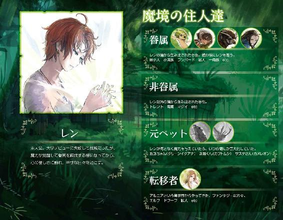
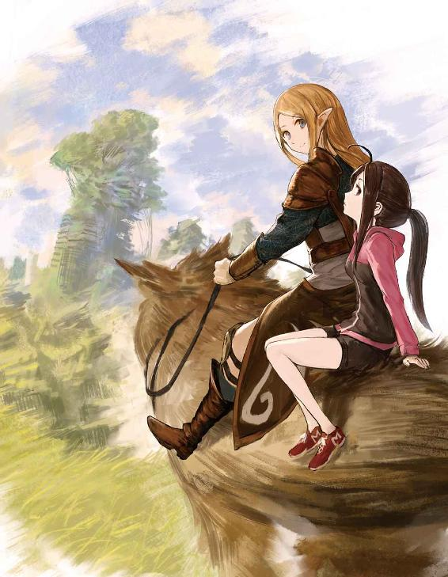
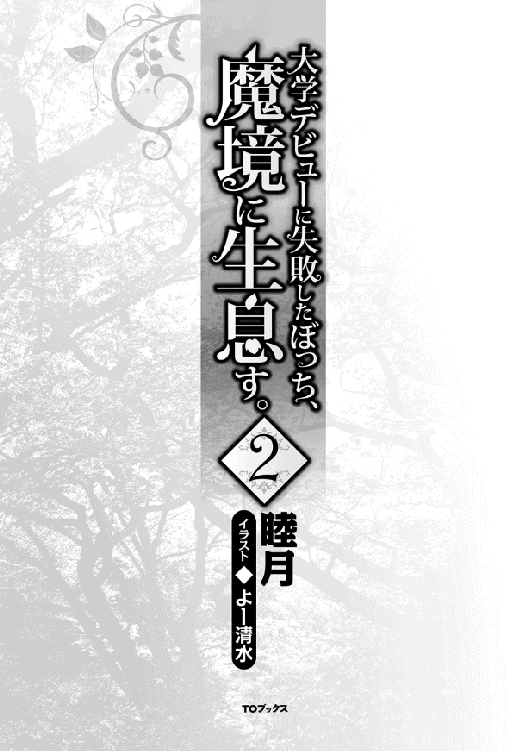
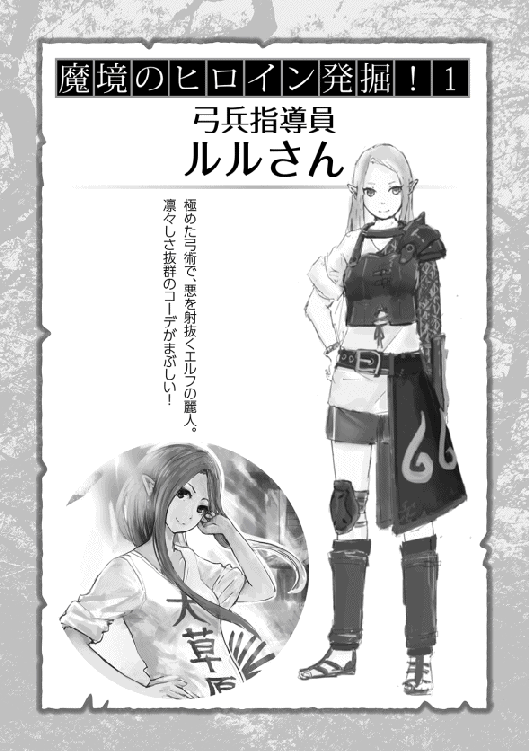
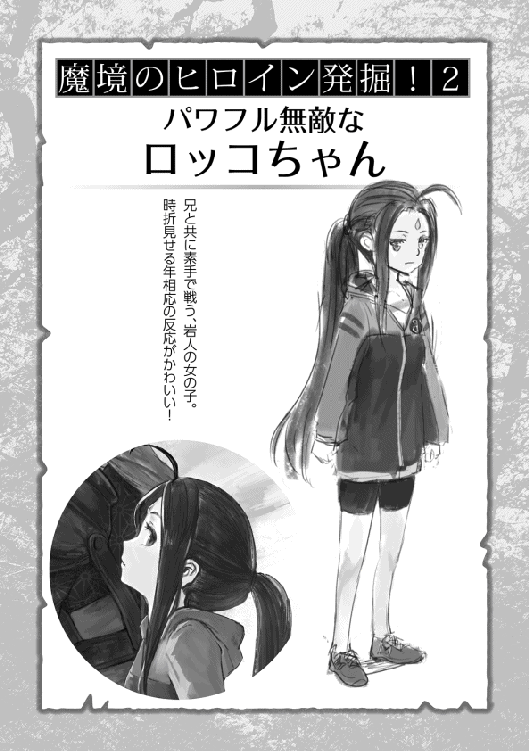
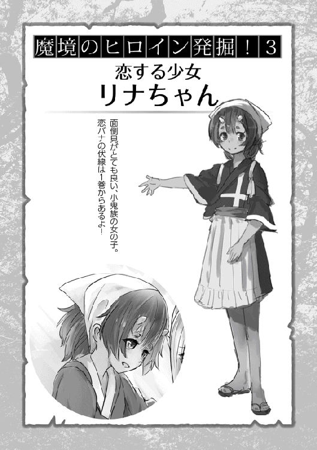
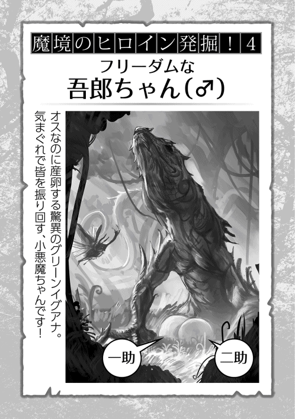

| 大学デビューに失敗したぼっち、魔境に生息す。2 | |
| 睦月 | |
| TOブックス (2018) | |
錬成した眷属たちや、異世界からの来訪者たちと一緒に人外魔境で暮らす様になり、心温まる日々を送っていた青年レン。ある日、備蓄されていた香辛料や衣料品などが底を突き始め、一念発起して異世界人の集まる町に買い出しに行くことに。そして魔物を狩って集めた素材を元に商人と値段交渉したり、ドワーフと一緒にバーでお酒を飲んだり、眷属たちと一緒に宿屋でお風呂に入ったりなど、ちょっとした旅行気分を堪能していく。



イラスト：よー清水
キャラクターデザイン協力：サーディン缶
デザイン：福田 功
サテライトコミュニティと魔物素材
最近のニュースでは、未見の魔物たちが増えていっていることが頻繁に報道されるようになっていた。
それまではゴブリン、コボルト、オーク、オーガなどというアルニア人にも馴染み深い魔物達が主流だった。国や大陸によっては、凶暴な狼の群れや異形の熊なども見られていたがそれらも見知った魔物ではあった。
だが、最近では子供サイズの黒蟻たち、大きく白い狒々のようなもの、腕が羽になっている人型の鳥の魔物、牛ほどに大きな蠍、鋭い爪を生やした小型の肉食恐竜のようなものまでも見られ始めたようだ。
それらはアルニア人たちの生活領域から、かなり離れたところに生息していた魔物達、もしくはアルニアの別大陸などでしか確認されていなかった魔物まで目撃されるようになってきている。中には未確認のものもいるらしい。
それに伴い、アルニア人の転移もさらに増えてきていた。
アルニアの知識人と各国研究機関の調査結果では、地球に転移させることになる謎の霧が、アルニアでは徐々に拡散しているのではないかとのことだった。新しく来た種族や居住場所から考えるに間違いないようだ。
ただでさえ都心部ではまかないきれていなかった人口が、ここにきて限界を迎えることになる。
地代、食費、光熱費、医療費その他もろもろが馬鹿馬鹿しいほどに値上がりした。
もう、富裕層以外ではまともに生活できる環境ではなくなってきていた。
数々のデモ活動に、政治家へのゴミクズの投げつけ、機動隊との激しい接触などはいつでも起こっていることだった。
そこで政府は都心部の人口を拡散させようと、アルニア人や貧困層の住人には都心部周辺への新コミュニティの開拓を推奨し始めた。
ある程度の防備が整うまでの自衛隊の派遣、または冒険者たちへのコミュニティ護衛依頼の一部負担金、一定期間内であれば最低限度の食料、医薬品の支給などが支援制度として公表されている。
財政難に苦しむ都心部にしては意外にも太っ腹に見える政策だったが、そこにはちゃんと理由というか、儲けの当てがあった。
魔物素材の有効活用の道が開けたのである。
ゴブリンの睾丸に含まれる成分は繁殖薬として利用可能だった。
家畜に投与することで出産率を高め、食糧難には今の時点でもかなり貢献している。
不妊で悩む夫婦にも効果があるため、人種用の錠剤としても販売され始めているようだ。
オークの性器を原材料にした薬は、効果の高い媚薬としてグレーな部分ではあるが合法的に市場に出回っている。
特にこれといった副作用も見当たらず、今や若い人の間では大流行している。
それを専門に扱うネットショップも数多く乱立しており、一山当てた人もたくさんいるようだ。もちろんセックスレスで悩む熟年夫婦にも人気は高い。
やはり風俗産業はいつの時代も強いようだった。いまやオークは金の成る木として性器を狙われている。ちょっとだけ不憫に思う。
オーガに関しては、角を粉末にすることで強い筋力増強剤になり、一時的な興奮作用と、恐れ、痛みを感じにくくなるという精神的な効果が認められている。
格闘家やアスリートには陰ながら人気であり、自衛隊でも只今研究中とのこと。
ただし、かなりの希少品であり高額なので、未だ未解明の部分も多く滅多には出回ってはいない。
そこで、オーガの角のようにゴブリンの角を粉末状にして服用してみたところ、一時的に理性が薄まりハイになれることがわかった。発見当初は精神安定剤、うつ病薬として期待されていた。
しかし、常習もしくは過剰摂取で、恒常的な理性の低下により本能的な行動を取りやすくなることが認められ、今では禁薬とされている。
禁じられれば求めるものが出てくる。
安価な素材で作れるドラッグとして、都心部スラム街では『鬼成り』という名称で早々に出回り始めていた。
最近目撃され始めた新しく転移してきた魔物たちに関しても、その攻殻や爪、牙、皮などが冒険者や自衛隊の装備として流用され始めている。
魔物素材の方が魔力を纏った時の効果が高いこともわかっており、中には特殊な能力を発揮する素材もあるようだ。
今や魔物産業抜きでは経済が成り立たなくなってきていた。
これら全ての素材は、魔素濃度の高いエリアほど高品質で効果が上がることも研究の結果判明している。
政府が都心部周辺に新コミュニティの開拓をすすめるのは、周囲からの食料供給率を高めるのはもちろんの事、魔物たちから都心部を守る防波堤として冒険者たちの前線拠点にも使おうという意図からだった。
各地で採れる食材や魔物素材などと引き換えに、都心部から優先的にインフラ整備や技術提供をしていくという体制で、都心部周辺に位置するサテライトコミュニティが徐々に増えていく事になった。
だが、都心部からの干渉を嫌い、それら支援制度に一切頼らずに独立したコミュニティを作る者達もいる。その中でも特に大きくなったコミュニティが一つあった。
都心部からは離れ、どのコミュニティよりも魔境に近い場所。
ギルド未登録のアルニア人冒険者たちが多く集い、彼らが落とすお金で成り立つ街『アルニアハンターズシティ』と呼ばれる、ほぼ治外法権化したアルニア人街だった。
樹海の町統計調査
庭のイチョウトレントが金髪にイメージチェンジしたころ、樹海の木々も少しずつ赤や黄色の色彩が目立ち始めてきていた。
イチョウの葉を見ながら「......綺麗だな」とつい零した時は、トレント爺さんが嬉しそうに揺れていた。
一角族と二人で連れ立って、今は樹海の外縁部に来ていた。
遠くの方でガンジーが大きな岩巨人に肩車され、こっちに両手で手を振っている。いつも物静かで大人びているガンジーが、今のように無邪気に見える振る舞いをしていると自然に笑顔になってくる。
ただ、その側には少しだけ不服そうなガンジーのランバード《元蔵》がいた。多分、自分に乗ってくれていないので寂しいのだろう。手を振り返し、やや小走りに彼らの元へと向かっていった。
側までいくと、ガンジーは表情をかすかに緩めながら地面を指さしていた。
大きな黒蟻が数匹潰されていた。
仕留め方からして全て岩巨人がやったのだろう。軽く彼の腕を叩き「ご苦労さん」と伝えると、ゆっくりとガンジーを地面に降ろして周囲の警戒へと戻っていった。
残った俺たちは、黒蟻の死体を取り囲み見下ろす。
「......まただね」
「やはり、何処か近場で巣を作っているんですかな？」
ボソリと呟くと、少し前から話されている懸念を一角族が口にする。
ここ最近この魔物を見かける機会が多くなってきていた。
黒い甲殻を持つ蟻の魔物だが、その大きさは人間の子供ほどもあり、力も強い。何より数が多く、世間では一匹見たら百匹はいると言われている。
今目の前で死んでいるのはワーカーアントだが、中にはソルジャーアントという戦闘タイプもいて、駆除するにはかなり面倒臭い魔物だ。
「樹海ではないっぽいんだけどね、あったら緑小人達が気付くだろうし」
思案げな表情をしていた一角族にそう返しながら、相手をされないことで若干拗ねている元蔵の首を撫でさすると甘えるように顔を擦り付けてきた。
テレビやニュースなどで少し前から騒がれている新しい魔物たちは、樹海周辺部でもよく見かけるようになった。
たまに空を飛んでいるハーピーという魔物は、よく青鳶に狩られているところを見る。大型の昆虫も増えてきているが、これに関しては樹海産の可能性が高いんじゃないかと思う......。
他にも白狒々や、切り裂きラプトルと言われる小型の鋭い爪を持つ恐竜も見られ始めていた。一時期、動画共有サイトで大騒ぎになっていたのは記憶に新しい。
徐々にではあるが、樹海の方へと生息域を拡大してきていた。
やはり、魔素の濃い方へと来たがるのは魔物の習性のようだ。
ちなみにガンジーが肩車してもらっていた岩巨人は、岩人兄弟の作り出した採掘場の岩を素材にした三メートル弱の大型の眷属だ。
素材に使ったのが採掘場の岩だけだったので、見た目はずんぐりむっくりな体型で岩を乱雑に人型にしたような、ゲームでいうところのストーンゴーレムという魔物に近い容姿をしている。
食事は岩人と同じく、石と魔力という低コスト仕様。基本は採掘場で寝泊まりしていた。雨の日とかどうしてんの？ と聞いてみたところ、どうでもいい事らしい。
経緯はというと、マグイや青鳶だけでは少しずつ広がる樹海周辺の間引きが追いつかなくなるんじゃないかと考えていたところへ今回の新種達の登場だった。
ポツポツと周辺部に出現し始めたので、急遽錬成した樹海の専属ガードマン達だ。
総勢十体がローテーションで常に樹海外縁部を巡回している。動きは遅いがなかなか頼り甲斐のある存在だった。
何より、ガンジーやロッコが懐いているのが微笑ましい。
俺じゃあの子達を肩車してあげられないと思う。......頑張ればいけるかもしれないけど、まだ若いのに腰が壊れるとか嫌だ。
あと、しばらくすると知らない間に岩巨人の子供が一体増えていた。
仕組みはロッコが生まれた時と同じようなものらしく、高純度の魔力が岩に溜まり続けると生まれおちるらしい。
その子は他の岩巨人と比べ半分ほどの大きさしかないため、採掘場でいつもお留守番をさせている。
ドワーフお爺ちゃんズの採掘作業の手伝いや、獣人兄妹ともよく遊んでいるのを見かけるが素直でいい子のようだ。このままのんびりと大きくなっていって欲しい。
さて、ここらで久しぶりに樹海の町統計調査を発表しようと思う。
＝＝＝＝＝＝＝＝＝＝＝＝＝＝＝＝＝＝＝＝＝＝＝＝＝＝＝＝＝
・人間 一人
・岩人 二人
・一角族 九人
・小鬼族 五十二人
・ランバード 三十一頭
・緑小人 いたるところに
・トレント わさわさ
・石ダンゴ ...............
・ホワイトディア 七、八頭？
・岩巨人 十一体
・マグイ 十数頭 たぶん
・青鳶 十数羽 たぶん
・吾郎ちゃんファミリー 五匹
・近藤一家 いつの間にか結構増えてた
・スケルトンカラーの変なの たまに、思い出したように見かける
・エルフ 一人
・ドワーフ 三人
・獣人 二人
＝＝＝＝＝＝＝＝＝＝＝＝＝＝＝＝＝＝＝＝＝＝＝＝＝＝＝＝＝
以上。
とまあ、ちびりちびりとではあるが、人口は順調に増えていっている。
そのうち、子供達用の寺子屋的なものも用意したほうがいいかもしれないね。
あっちいったり、こっちいったりする子供達を捕まえながら仕事をしているお母さんたちは、本当に大変そうだからね。
子供達の好奇心と無尽蔵の体力には本当に感心するしかないよ。
夕方、ルルさんとミーニャちゃんが土間でお料理をしてくれている。
最近は、とうとうプロパンガスが底をついてしまったので、備え付けられていた竃を復活させていた。
薪の類はそこら中に転がっているし、魔法もあるのでそこまで生活には困っていない。
パチパチと小さく爆ぜる音と包丁がまな板を叩く音に加えて、二人の仲良さげな笑い声が聞こえてくると自然と頬が緩んでいる。もう少ししたら、恋話のようなこともしだすのかもしれない。そうなると、キッチンは男子禁制になるのかもしれないなー。
そんなまったりとできる我が家にも問題がある。
それは、樹海の町で唯一の電気とネットが使える我が家が溜まり場になっていることだろう。
今もお爺ちゃんズが、果実酒片手に野球の名試合（再放送版）で大盛り上がりしている。
やれ、監督の采配が悪いだの、この選手はフォームが悪いだとか、好き勝手に楽しそうにヤジを飛ばしていた。
対して、野球に全く興味のないヤーシャは超不満気だ。
「なあなあなあ、今◯◯チャンネルでアニメやってんだぜー、チャンネル変えてくれよおっ。つまんねえよぉ」
ヤーシャ、野球好きはリモコンを手放さないモンなんだよ、諦めなさい。
また、俺が持っている映画ＤＶＤコレクションなんかは眷属たちに大人気だった。
幸いボッチ属性なこともあり、その手のお一人様用アイテムは品揃えが豊富にある。
今では月に一回はレイトショーと称して、縁側にテレビを設置して庭先で上映会をやっているほどだ。それはもう大盛況である。
特に人気が高かったのは、孤独でもっさりした殺し屋と利発的な超絶美少女で有名な名作だった。
二人の素敵なシーンには男女問わずがうっとりし、悪役とのバトルには燃え上がり立ち上がり、主人公の最後には号泣していた。未だにリクエスト率は高い。
毎回恋愛ものかアクションものか、はたまたアニメかで悩んでしまうのが困るところなのと、四十二インチの大きめだった薄型テレビが、その時には小さく感じてしまうことだろう。プロジェクターとか欲しいと思う。
まあとにかく、いつも賑やかにはやっている。
お味噌がありません
「お味噌がありません」
俺の発したその言葉は、町役場の多目的ホールに集まった街の代表者たちへと向けられていた。
メンバーはルルさん、ドワーフのお爺ちゃんズ、医療担当のリナちゃん、走り屋のケイ君に小鬼族のリーダー、そして一角族の族長、あとモンテもいる。
「その他にも調味料、お米、医薬品、あと衣類も、生地もとうとう底をつき始めました。ついでに言うと、樹海の町にある民家は粗方家探しが終わっています」
間を空けずに続けた内容を聞き、それぞれの眉間にシワが寄っていく。
「......とうとうですかぁ」
「いつかは......と思ってはおったがのう」
「「「............」」」
皆が深刻そうな表情で黙りこくる中──
『ヒャッフ〜〜〜〜〜!!』
町役場の屋上から、ヤーシャの陽気な歓声が響き渡っていた。
多分、相棒のランバード《フォア》とランバードグラインダーをお楽しみ中なのだろう。
最近は《フォア》も大きくなってきており、ヤーシャ位なら乗せて走れるようになっていた。ふわふわの綿あめのようだった体つきは少しずつ筋肉がつきガッシリとし、ランバードには珍しい真っ白な体色は樹々や青空に殊の外美しく映えていた。
というのも現在進行中で、しっかりと太陽の光を反射しながら、笑顔のヤーシャを乗せて会議室の窓を通り過ぎていくからだ。
ケイ君が少し気まずそうにしている事からも、連れてきたのは彼らしいね。
まあ、気をとり直して会議を再開しましょう。
「.........味噌と醤油は、確か大豆が原料じゃろ？ 緑小人達に作ってもらう訳にはいかんのかの？」
自慢の顎鬚をしごきながら、伺うように聞いてくる。
「............お爺ちゃん。味噌や醤油というのは、日本の職人さん達の技術の粋を集めたものなんです。何十年、何百年という歴史の集大成なんですよ？ いくらクック◯ッドが優秀でも、あの品質を真似できるものではないんです」
「そ、そうか、すまんの」
確かにお手軽に作れるレシピはネットでたくさん出回っているようだが、『いつもの味』や『おふくろの味』をそうそう出せるものではないだろう。
予想以上に気持ちの篭った反論に、お爺ちゃんズが目をパチクリさせている。日本人の食に対するこだわり方を甘く見ないで欲しいね。
「まぁそれに、衣類や医薬品の類はどうしようもないですしねぇ.........」
「レン殿には何かお考えがあるんですか？」
リナちゃんの発言に耳を傾けた後、ちょっと探るようにこちらを見てくるルルさんに頷き返した。
少しだけ間を空け、決意を新たに声を張る。
「アルニアハンターズシティに、買い出しに行きましょう」
「「「!!」」」
最近はちょくちょくニュースでも話題になる街なのでみんな知っているようだ。
まあ、何かと面白そうな街でもあるしね。
「都心部に行けば何でも手に入るとは思いますが、あそこは正直行きたくありません。物価もそうですが、何より外部の住人に排他的になっているようですし、どんな難癖つけられるかわからないですしね」
「しかし、先立つもんが必要じゃろうに......都心部ほどではないにせよ、今は何かとお高いようじゃぞ？」
別のお爺ちゃんの言葉を聞き、鋭い眼光をこちらに向けてくるのはイゴールさんだろう。これまでの話を聞く限り、この中で一番ビジネスに敏い人のようだ。
「実は、ちょっと前から小鬼族にお願いして魔物の売れそうな素材は保管してあるんですよ。ナマモノ系の素材以外はですけどね。マーダーアントの甲殻は十分すぎる程ありますし、切り裂きラプトルや樹海の猪の皮や牙もおそらくは売れそうですよねー。......他にもまあちょくちょくと溜め込んでいます。それらを売りさばいたら.........ネットでの大雑把な換算ですけど、結構いい値段になるみたいなんですよね。それにランバードを走らせれば、慎重にいっても数時間でつく距離でしょうし.........。そこでなんですが.........一角族や小鬼族騎兵隊を多めに連れて行きますので、誰かついてきてくれないですかね？ アルニア人がいてくれた方がいいと思うんで」
小鬼族リーダーや一角族の族長が鷹揚に頷きながらアルニア人達の方を向いている。既にこの話はしてあり、同行するメンツはほぼ決まっている。後はアルニア人たちのメンバーを決めるだけだ。
「レン殿が行くのなら、私もついていきましょう。ただ......一角族や小鬼族のことは何と誤魔化すのですか？ 樹海の種族だとは言えないでしょう、騒ぎになりますよ」
期待を込めて周囲を見渡す中、真っ先に参加を表明してくれたのはルルさんだった。それと同時に俺たちが外に出る事の懸念事項を挙げていく。
「......アルニアの別大陸からきた、未確認種族じゃ通りませんかね？」
今は世の中、どこもカオスな状態だから多少ゴリ押しでもいけると思うんだよなー。
「.........まあ、大丈夫かもしれんな。アルニア人の住む大陸にも滅多に他の種族と関わらん希少種族もおる事じゃし。ただ、お主らその魔力は隠さんといかんぞい？ 地球人よりもアルニア人は魔力に敏感じゃからな、間違いのう警戒されるぞ」
やや渋面でお爺ちゃんズの一人から指摘されてしまう。......そんなになんだろうか？
「......というか、そんなことできるんですか？」
「それくらいは、練習すりゃすぐできるわい。それに上手いのが樹海にもおるじゃろう？ 透明のなんぞ訳わからん奴じゃ」
ああ、そういえば元カメレオンのサスケさんがやってるなー、あれがそうだったんだな。
「じゃあその辺は要訓練ということで。メンバーの方も後で詰めるとして、皆さんには必要なものや欲しいものをピックアップして欲しいんですよ」
「酒とかええんかのう？」
「ドワーフ達はいつもそれだな......自作している果実酒があるだろう」
「たまにはビールとかウィスキーもイキたいんじゃ」
自分の欲求に素直なお爺ちゃんに、ルルさんの手厳しい声がかかる。
「ははは、その気持ちはよくわかりますねー。ただまあ、まずは実際に魔物素材がどれ位でやりとりされているかですよね、品質とかもかなり関わるみたいですし。一応リストを作って、優先度が高いのから選んでいこうとは思っていますんで、お酒や娯楽関係は余裕があればと言ったところですかね」
そこからは、それぞれが必要と思える物資を挙げていく。全体から見た優先度、必要量などを。
なかなかに白熱することも多く、休憩を挟みながらも、議論は空が夕焼けに染まるまで続けられた。
結局アルニアハンターズシティに行くメンバーは俺、モンテ、ガンジー、ロッコ、ルルさん、イゴールさん、一角族四人、小鬼族騎兵隊二隊に決めた。初めての樹海からの遠征ということで中々の大所帯だ。
イゴールさんはお爺ちゃんズの一人なんだけど、アルニアにいた頃は鍛冶工房での素材買い付けから卸業者との値段交渉までやっていたらしい。
アルニア人相手の値段交渉はそれになりに慣れているということで付いてきてもらう事にした。
モンテ、ガンジー、ロッコは普通に付いて来たがっていた。たぶん旅行気分なんだろう。かくいう俺もそうだ。
ヤーシャとミーニャも、話を聞いた時は最初行きたそうにしていたが、やはりまだ樹海の外に出るのは怖いようで、結局行かないことにしていた。お留守番中はリナちゃんとケイ君に任せよう。あの二人の言う事はしっかりと聞いているしね。
さてさて。お買い物リスト、メンツ、スケジュールが決まれば後は個人の準備のみ。
こういう時のために小鬼族が事前に作ってくれていた革製の大型バックパックに、魔物素材を詰め込んだ。その上にはデジカメもしっかり入れておいた。もちろん予備のメモリーカードと充電器は忘れずにね。
.........だって『アルニアハンターズシティ』だよっ？
日本であって、日本じゃない街なんだよ!?
日本人がほとんどいない上に、アルニアのあらゆる種族が闊歩している冒険者の街!!
街並みなんかも、特殊らしいんだよ！
そらもうっ、心のシャッター押し捲りでしょ!?
遠足前の小学生気分で準備した俺は、もちろん出発の日の朝は寝不足でした。
目の下に隈をつくり、目を爛々と輝かせて意気揚々とバッグを担ぐ。ポケットの一つはモンテ用で、顔だけ出している。腰をかがめて俺を待つ正一に跨り、周囲を見渡す。
集合場所だった町の広場には、買い出し隊が既に勢揃いしていた。俺と同じく明らかに眠れなかった目を擦っている者、期待に胸を高鳴らせているもの、それとは対照的に不安を必死に押し殺している者もいた。
どうなるかはわからないけど、まぁ行ってみましょうか。
「じゃあ行ってくるからー。お土産たくさん買ってくるからねー」
色々な想いを胸に、見送りをしてくれている人たちに手を振って出発していった。
町を抜け、樹海の獣道を駆けていく。
勝手知ったる自分たちの森を、無言で進む事しばらく。樹海の外縁部が見えてきた。
樹海の際までくると、魔物達の姿が見えてくる。
遠目から見てもそこら中にいるのが見えた。
既に俺たちの匂いに気づいているのか、魔物たちの姿が徐々に増えてきていた。見上げると青鳶たちの低くも強い鳴き声が聞こえてくる。それに伴い、狼よりもはるかに野太いマグイたちの遠吠えも。
ルルさんとその後ろに乗るイゴールさんの表情を見ると少し固い気がした。
それもそうか......多くの仲間を失った記憶はまだ新しいだろうしね。
「......そろそろ行きますよ。準備はいいですか？」
ここは一気に行こう。
彼らに恐れを思い出させない内に。
恐怖を置き去りにできるように。
「「「「はいっ」」」」
威勢の良い返事を背中に受け、正一の腹を軽く蹴り一歩進み出す。
「行くぞっ！ 遅れるなよぉお!!」
「「「「応ッ!!」」」」
ランバード達の駆け出す音が、一斉に鳴り響いた。
道中
──うん、やっぱり魔物の数が多い。
ゴブリンやコボルトやオークは定番として、数は少ないけどオーガものっしのっしとうろついている。
それに加えてワーグという狼っぽい魔物にマーダーアント達、樹海からも出て行っているのだろうか、俺の嫌いな大きな蜘蛛も見かけている。
おっ、何か白っぽい大型の狒々みたいな魔物もいた。あいつは大型の癖に動きがすばしっこい厄介なやつだ。
あそこにはでっかい蛾みたいなのもいる、うぇー色が毒毒しすぎる。近寄りたくないな。
おや？ あそこでコボルト達が担いで持って帰っているのは牛だろうか？ 以前テレビで見た事がある毛が生えたバッファローのようだけど。
ぎ、牛肉っぽいなぁ、いいなぁ、食べたいなあ。
帰ってきたら、ちょっとこの周囲も一度探索してみよう。
それにしても、テレビで言ってた通りやっぱり色々増えているんだなー。
そんな事を考えながらも、ちゃんと仕事はしてますからね。と、誰にともなく心のなかで弁解し、目の前にいたオークを切り飛ばしながら進んでいく。
俺の両サイドにはガンジーやロッコがおり、近寄る魔物は極端に少ない。
邪魔になるものは基本的に一角族が斬り伏せているし、他でも小鬼族達がお爺ちゃんズのおかげでパワーアップした槍や弓で仕留めている。
まぁ全てをまともに相手にする必要はなく、ランバードの自慢の脚力ですいすい置き去りにしていくことの方が多いんだけどね。
俺たちの行動に合わせてくれているのか、マグイや青鳶たちも露払いを手伝ってくれていた。
青鳶に攫われて、はるか上空から地面に叩きつけられるもの、かぎ爪で切り裂かれているもの。
マグイの群れに集られて絶賛捕食され中だったり、首元を咥えられて人形のように振り回されていたりと力の限り大暴れだ。その姿を見ただけで、逃げる魔物達もいる。
さらにランバードの跳躍力なら、建物の屋根から屋根へと飛び移り、滑空も使って悠々と周辺部を切り抜けていくことができる。
この日のためにルルさんには、ランバード乗りになってもらっていた。
ケイくんやヤーシャに教えられながら、恐る恐る触れ合っていたのを覚えているが、今では自分のパートナーの事が可愛くて仕方ないらしい。
聞いてみると、最初の出会いが原因で少し苦手意識を持っていたようだ。俺も最初に見たときはビビったしねぇ。自分で生み出したにもかかわらずだ。
ルルさんとその後ろに乗るイゴールさんは、当初自分達が予想していた展開とは違い、スルスルと魔物達を切り抜けていく状況に目を丸くしていた。
それも始めだけで、今はツーリングを楽しむようにリラックスして笑っている。良かった。
しばらくは休まず飛ばし気味に走り続けていると、少しずつ魔物との遭遇率は減っていく。
一時間ほど駆け続けたあとで、見晴らしのいい高台駐車場を見つけた。そこには日除けとベンチがあったので、そこを休憩場所とすることにしよう。そばにはトイレも設置されている。
「じゃあ、ここで少し休憩しましょうか？ 周辺の魔物達の警戒はお願いしますね」
「「「了解」」」
広い駐車場では各々がランバードへ水をやったり、果物を食べさせたりしている。俺も正一の事をいたわるように世話していた。
用意した水を美味そうに喉を鳴らして飲んでいる。首元の羽毛を梳いてやっていると、時折気持ちよさそうに目を細めている。
ランバード達の世話が終われば、それぞれが体を休め始めた。
車座になり談笑したり、乗り捨てられた車の座席で仮眠をとっている者。中には初めて訪れた樹海の外を興味深げに眺めている子もいる。駐車場の端からは緩やかな崖になっており、眼下に町並みを見下ろせるようだ。
その近くに壊された自動販売機を見つけた。中を覗いてみると意外とたくさんの飲み物が残っていた。
炭酸やスポーツ飲料、コーヒーと好きなものを皆へと配ってまわった。
缶コーヒーを片手に空いていたベンチに座り、街を見ていた。
今ではゴーストタウンとなってしまい、見えている範囲では人の姿が見当たらない。
その代わりに魔物たちが我が物顔で跋扈しているが、彼らの中でも弱肉強食で狩り、狩られを繰り返しているようだ。
ワーグに襲われているゴブリンがいれば、マーダーアントと争っているコボルト達もいる。道端では血肉を晒した何かが落ちている。人だったのかもしれないな。
もはや、その事実に感情が動くことはなかった。
お気に入りの定位置である膝の中に納まって、乳飲料を無心で飲んでいるモンテを指で撫でながら、眼下の光景を眺めていた。
不意に頭上から、ドサリドサリと鳥と女性を足したような魔物ハーピーが二体墜落してきた。
頭から落ちたようでもう動いてはいない、どちらの体にも何本もの矢が突き刺さっているのが見える。
「どうですか？ 私たち弓兵の腕前のほどは？」
軽いドヤ顔を冗談で見せながら、ルルさんが歩いてくる。
手には先ほど使ったであろう自作の弓を。防具は小鬼族達と同じく、イノシシの革鎧を身につけた軽装だ。
人型の魔物が血を流し絶命しているという光景の中、輝くような金糸の髪が風に舞っていた。
笑いながら髪を抑えているその仕草には......正直ドキリとした。
無骨な装いにもかかわらず、均整のとれた肢体は美しい。動作には気品を感じる。
そして、俺のポカンとした顔を見て浮かべる無邪気な笑顔。
いろいろな作品の中でエルフの美しさが語られるが、そのどれもが足りないのだと、その時思った。
そんな彼女は弓兵隊の指導員も大分板についてきて、生徒達からの信頼も厚いようだ。

実際に今回一緒に出かけてみて、弓兵隊たちからの慕われ具合がよく伝わってきた。
動揺を悟られないように、わざと視線をハーピーへと向けて誤魔化す。
「さすがですねー、よくもまあ、あんな空を動き回っているのに当てられるもんですね。......以前試しに教えてもらったらてんでダメでしたよ、指はマメだらけになるし」
「ふふふ、そこをあっさりとこなされてしまったら、こちらの立つ瀬がありませんよ。定期的に弓練場へ来られたら、私がみっちりとお教えするんですけどね？」
「いやー.........それは......ハハ」
その後も他愛ない話を続け、ロッコやガンジーが炭酸をもっと飲みたそうにしていたので、みんなで自動販売機を漁りにいった。
モンテのお腹がポッコリなのに、まだ欲しがっていたのでさすがに止めておいた。
移動を再開する。
定期的にコンパスと地図を確認し、道路にある青看板を目安にアルニアハンターズシティを一路目指し続けていく。
樹海を離れるほどに魔物達との遭遇もなくなっていっているので、ランバード達の速度もゆっくり目だ。
長距離の移動というのは初めてだったこともあり、ランバード達の気持ちを感じ取りながら小まめに休憩は重ねている。
ここまで来て思うことは、やはり樹海の周辺は異様な魔物密度だった。数匹を相手にしていたと思ったら、すぐに次の魔物が飛び込んでくる。まるで空白がなかった。
群れや集落も近くにはいくつかあるようだけど。集落同士での潰し、潰されが繰り返され、それでも目立っていたのがマグイや青鳶。大型魔物達の格好の餌場にされていたりとかで、そこまで大きいのはないようだが。
それでも異常なのは間違いなかった。
最近、樹海の対応で世論が割れているのも分かる気がする。
樹海を毒と見るか薬と見るか、どちらにせよ影響が大きすぎて中々決断ができることじゃないのだろう。一度作戦が大失敗していることもあり。
俺としては、緑小人達に「あんまり都心部の方へ種植えちゃいけないよー」とは言っているので、できれば放置しておいてほしいんだけど......自分の家の庭みたいなもんだし。間引きに関しては、また何か対策を考えた方がいいだろうけどね。それは帰ってからにしよう。
他にも実感したことは、魔物の頑強さ、纏う魔力量だけでも大きく違うということ。
スコップの刃の通り具合で考えても差があった。
樹海周辺にいるような魔物を狩る時は、体のバネと遠心力を使って思い切り振り抜かなければ両断はできないし、手応えにもガツンとしたものがある。
この辺りの魔物達はなんというか......魚肉ソーセージに包丁を入れている位の感覚だった。
スパンとあっさり刃が通っていくのを感じる。そもそも動きのキレや膂力が全くちがう、同じ種類の魔物だとしてもね。
あとは、魔素濃度というのも理解できた。
確かに.........これは薄い。
どんな感じで？ と感覚を聞かれると表現に困るんだけど、体に入ってくる魔力量が断然少ない。
正直いってスカスカだった。
普段みたいに考えなしに魔力をハッスルしていたら、いつかはガス欠起こしてしまうかもしれない。それが回復するまでには相当な日数がかかるだろう。
多分、他の眷属たちも同じなのかな、みんな自然と纏う魔力をセーブし始めていた。
アルニア人たちに魔力の抑え方やコントロール方法を、しっかり教え直してもらっていて良かったと思う。樹海に帰ったら、みんなの必須スキルにしなきゃいけないね。
途中で大型スーパーがあったので入ってみたら、大分閑散とはしていたけどバックヤードの方にはお菓子類やジュース関係がちょっとだけ残されていた。
あと缶酎ハイも......。
むふふふふ、今日寝る前のご褒美にしよう、と思っていたらフードの中からモンテもガン見していた。
今はどこかの商店街を進んでいる。
アーケードを潜り、時折魔物の声が聞こえるだけのシャッター街を眺めながら、ランバード達を快調に駆けさせている。
地図を見る限り、アルニアハンターズシティまでもうそろそろかな？ と思い始めたところで誰かの叫んでいる声が聞こえてきた。
魔物の吠え声も聞こえてきており、道路の先へと駆けつけてみると、ここらでは見なかったオーガの背中が目に飛び込んできた。
......いや、巨人か？
オーガ並みの体躯に大きな麻袋を背負子で背負っている。
手に持っている長い丸太程もある槍を振り回していた。どうやら魔物に襲われているらしい。
十数匹のコボルトの群れに囲まれて、往生していた。
よく見ると彼の足元には身長百センチ程の小人族も二人、そして杖をついて足をかばっているエルフの男性もいた。
小人族は二人とも短槍を握りしめ、エルフは短剣を構えてコボルトの群れを牽制している。
通りの端には数体のコボルトが横たわり血を流していた。
「ルオオオオオオッ!!」
巨人族が力任せに突き込む槍からは、激しい風切り音が聞こえてくる。
だが、周囲のコボルトは十分に距離をとって躱していた。数匹やられたことで警戒を強めているのだろう。執拗に巨人族の背後を突こうと動いていた。
接近を許した場合は、小人族の二人が牽制で短槍を突き出してはいる。が、巨人族に比べれば如何程の威力もない。足をかばっているエルフに関しては動きについていくだけでも辛そうだった。
......被害が出るのは時間の問題かな。
チラリと背後を振り返り、
「ルルさん」
一声かけるとこちらに頷き返し、弓を構え即座に矢を放った。
「グギョッ」
喉元に矢が突き立ったコボルトの一匹は、声にならない音を出し口から血を零しながら倒れこんだ。
小鬼族の弓兵達も、次々とコボルトに狙いをつけていく。
悲痛そうな獣達の鳴き声を耳にしながら、一角族を伴いコボルトの輪の中へと飛び込んでいった。
海町の御一行
「いやー、助かりました。仲間の怪我に気を取られていて、魔物の群れに気づくのが遅れてしまいましたよ」
小学生並みの体躯にもかかわらず、しっかりした大人の受け答えをしている。
見た目も小さいのは体だけで、顔つきは青年のそれだった。
パーツが小さいせいで、どこか幼く見えてしまうのは種族特性なのだろう。
「いえいえ、通りすがりだったものですから......アルニアハンターズシティの方ですか？」
初めて接する小人族に内心驚きながらもにこやかに接していく。
コボルトとの戦闘に割って入った俺たちは、そう時間をかける事なく殲滅した。
最初の瞬間こそ俺たちへの警戒心を強めていたが、コボルトを次々と仕留めていく中で彼らへの敵意がない事は理解してくれたようだ。
ただ巨人族と他の仲間達は、武器を未だ手放してはいない。
「目的地はハンター街なんですが、住んでいるところは別コミュニティですよ。あなた方はどちらから？ ハンター街の人ではないですよね。見たこともない種族や騎獣も気になりますし......。何より.........アルニアハンターズシティなんてフルネームで呼ぶのは初めて行く外部の人と決まっていますからね？」
先ほどから彼らを代表して話している小人族の男性は、ちょっとこちらを探るように聞いてくる。
彼になんと答えようか窮していると──
「──助けてもろうたにもかかわらず、出会い頭に根ほり葉ほり聞きよるのは、小人族の悪い癖じゃぞい。地球にはいい諺があるじゃろうがい、『好奇心は猫をも殺す』じゃ。......自重せい」
不機嫌そうなイゴールさんの言葉が横から飛んできていた。
どうやらこういった事はよくあるみたいで、イゴールさんの言葉に同意するようにエルフの男性も小人族を窘めている。小人族の女性は咄嗟にこちらに謝ってきていた。
「おっとっとっと。そうですね。ちょっと立ち入ったことを聞きすぎました。小人族の性格でして、お許しくださいね？ 僕らは通称『海町』と呼ばれる、都心部から外れた場所に位置する独立コミュニティの住人なんです。そこの交易を担当している小人族のローと言います。以後お見知り置きを。もう一人の小人族は妹のラー、そして冒険者兼護衛役のエルフのボロと、そこにいる一際大きいのが荷役兼護衛役の巨人族のゴーダです。失礼ですが、そちらのお名前をお伺いしてもよろしいですか？」
仲間達からの指摘に笑いで答えながら、流れるように会話を再開している。
──なんというか.........場慣れしているなぁ。これがリアル商人というやつだろうか。
「あっ、あぁ、すいません。レンと言います。こちらはエルフのルルさんに、ドワーフのイゴールさんですね。他のみんなは俺たちの護衛役です。俺たちもここからは少し離れた所にコミュニティを構えているんですよ。最近やっと環境が落ち着いてきまして、今回は物資の調達に初めて......ハンター街？ に向かっています。それより.........この匂いって、もしかして？」
相手の雰囲気に圧倒されないようにと、ちょっと頑張りながら受け答えしていると、嗅ぎ慣れた匂いが鼻腔をくすぐり始めていた。
この癖の強い、独特の香りは......。
「ははは、やはり日本人ですねー。気になりますか？ 僕ら海町の特産品はなんといっても魚介類ですから、ハンター街に売りにいくものは魚の干物や塩がメインなんですよ。せっかくですから、助けてもらったお礼に幾つかお譲りしますよ？ あと、お気に召して頂けたのなら、ウチの商品を材料にここからハンター街までの護衛依頼も兼ねて交渉させてもらってもいいですかね？ 初めてでしたら、ハンター街での案内役も入り用でしょう？ あそこは慣れるまでに少々コツが要りますからね。どうでしょう、お互いに損はない話だと思いますけど？」
なるほど、アルニア商人というのはこういう図太さと、油断ならない計算高さがあるんだなー、と他人事のように思う。
会議でイゴールさんが付いていくと言いだしてくれたのは、こういう意味もあったのかもしれないな。日本人には足りないハングリー精神が溢れている気がする。
茶目っ気を見せながらも、どこか利に聡そうな目を向けてくるローさんを苦笑い気味に眺めていた。
海町の住人たちを小鬼族の後ろに乗せ、巨人族ゴーダさんの歩みに合わせて進めていく。
道中の魔物たちの襲撃もあるにはあったが、特に問題なく捌いていた。
俺たちの、この周囲ではやや過剰とも言える戦力を見て、海町の人たちが少し緊張気味になっていたシーンもあったが、そこはルルさんとイゴールさんが気を利かせて上手く交流してくれていた。
また、それらの魔物素材に見向きもしないことにも、どこか異様に映っているようだった。まぁ仕方ないよね、それ以上の品をパンパンに詰め込んでいるんだから。
樹海を出るときには夕方前には到着する予定ではあったのだが、日も暮れ始めてきたのでそこらの倉庫で一泊することにした。
ハンター街までは、ここから徒歩で二時間はかからない位らしいが、夜はやはり危険だろうとの判断からだ。この辺でも夜行性の魔物達は多くいるようだ。
近場で見つけて来た一斗缶に、燃える物を入れ火をつけた。
角材などの太めの薪に火がつき始めれば、パチパチと小気味のよい音を鳴らしながら、周囲を赤く照らしていた。
見張りは、一角と小鬼族たちが交代でやってくれている。俺も手伝おうとしたのだが、あっさり断られた。何でもそれなりに慣れや訓練が必要らしい。
そう言われたら後は休むだけなのだが、焚き火を眺めモンテやイゴールさんたちと缶酎ハイでちびちびと晩酌を楽しんでいた。
久しぶりに味わう缶酎ハイ。以前はそこまで飲んでいなかったけれど、この状況ではやたらと美味く感じる。モンテもご満悦な様子。まぁ、お酒につられて飛び出してきたモンテを見て、海町の商人一行は目を丸くしていたけどね。
特にエルフのボロさんなんかは口を大きく開けたまま固まってしまっていた。
即座にルルさんと目配せしあい口を噤んでいたが、以前ルルさんに緑小人はエルフにとって特別な存在だと聞かされていたことがあったからそれのことだろう。
何でも神聖な生き物らしい、缶酎ハイでへばっているこのグータラ者がね。
おかげで、多少は自分たちの事を説明する必要が出てきた。
只でさえ、岩人、小鬼族、一角族、ランバードにと、見た事もない種族が勢ぞろいなのだから。
それまでも、事情を聞き立たそうにうずうずしているローさんを妹のラーさんやエルフのボロさんが目で制していたからね。
小人族は、とにかく好奇心旺盛なのが欠点らしい。その分商人や情報の先取りが大事な仕事には向いているとかなんとか。
「俺たちのコミュニティは魔境に近いこともあって......この子も含めて、変わった生き物が沢山いるんですよ。多分、あそこから流れ出てくるんでしょうかね。あの濃密な魔素環境の中で生まれているのか、ひょっとしたら護衛役である彼らと同じように、何処かアルニアの別大陸からまとめて転移してきたのかもしれません。......正直俺たちにもよくわからないんですよ」
海町の御一行は俺の雑な説明を、真剣な表情で聞いていた。
その後、岩人兄弟や他の種族たちを紹介していった。
眷属達はあまり海町一行とは交流しようとしていない。俺が探り探り慎重に対応していることが伝わっているんだろう。
ちなみに、ルルさんたちには俺の生物錬成の能力を伝えていない。
なんとなく、この能力は人目には触れさせたくない。
忌避感を抱く人もいるだろうし、人とは違う扱いを受ける可能性もある。
なにより、俺にとっては新しい子たちに魂を分け与え、願いを込める大切な時間だったから。
他人にズケズケと踏み込まれたくはなかった。
岩巨人を錬成した時でさえも、夜中にこっそりと抜け出してやっているしね。
彼らが樹海をうろついているのを初めて見た時はみんなかなり驚いていたし、俺や眷属の子達と普通にコミュニケーションとっていることにもさらに驚いていた。
「樹海の奥では、よく新しい種族が生まれるんですよ」と内心ドキドキしながら言ってみたのだが、それぞれの反応で受け止めてくれていた。
獣人兄弟は「樹海すげ───っ」と目をキラつかせ、お爺ちゃんズは「まあ、ココは何でもありじゃろ」とどこか投げやり、ルルさんはなぜか畏敬の念を込めた表情で大きく頷いていた。
海町の一行も、俺たちの事情を聞いてそれぞれの反応を示している。
巨人のゴーダさんは「ほーかほーか」と人が良さそうに頷いている。巨人ゆえに小さい事はそれほど気にしないらしい。喋り方もそうだけど、のんびり屋さんのようだね。
エルフのボロさんは、お酒に酔って変な踊りを始めているモンテの事を眩しそうに眺めていた。憧れの人がやる事は、どんな事でも素敵に見えるナンタラ効果みたいなもんだろうね。だってあの振り付けは、某アイドルグループの踊りを真似ているだけだからね（ほぼ原形ないけど）。
ラーさんは何を考えているのかわからないが、真剣な表情で聞き入っている。
ローさんはというと......言い分を完全に信用はしてはいないだろうし、多分頭の中で今凄まじく計算しているんだろうなー、というのが伝わってきた。この人は本当に、食えない人のようだ。
しばらくすると「わかりました。......色々と事情があるようですし、これ以上は踏み込みません」と頷き、また黙って缶酎ハイを飲み始めていた。
缶酎ハイが無くなり、今はイゴールさんの荷物の大半を占めていた果実酒で一杯やっていた。
「な、何すんじゃい！ こんな老い先短いジジイからタカるとは何事じゃっ」とプンスカ怒っていたが、ハンター街には結構酒場も多いらしいので「魔物素材売りさばいたらたくさん飲ませてあげるから」と口約束して荷物から引きずり出した。
というか、着替えも何も入っていなかった。つまみと酒とメモ帳くらいだった。一体何考えてついてきたんだろう？ このお爺ちゃん。
「あれ？ ......ローさん、どうしたんですか？ 嬉しそうですね」
一斗缶の中で燃える火を眺めながら、俺たちのそんなやり取りを眺め、どこかうっすらと笑みを浮かべているローさんがいた。イゴールさんは自前の酒樽に抱きついている。
「......いえね。以前アルニアで交易商人をやっていた時も、よく仲間達とこうやって火を囲んで酒を呑んで騒いでいたので......思い出してしまったんですよ」
焚き火が横顔を照らしている。火の弾ける音を聞きながら「美味い果実酒ですね」と、どこかしっとりとした雰囲気で場を楽しんでいるようだった。
言われてから周囲を眺めると、ルルさんとボロさんが酔いつぶれてお腹を掻きながら寝ているモンテを、それぞれ指でつついて笑っている。
ガンジーはそれを横からじーっと眺めているが、ロッコは俺の横に来て静かに座っている。時折、服の裾を摘んでくるので甘えているのかもしれない。
ゴーダさんは俺たちが分けてあげた果物を頬張りながら、いつの間にか仲良くなっていたのか正一の体を、優しく丁寧に撫でてくれていた。正一も気持ちが良いようで、顎をゴーダさんの膝に乗せ寝息を立てている。話を聞いたところ動物が好きらしい、ヤーシャやケイ君と気が合うかもしれないね。
「どんな仲間達だったんですか？」
俺も少し酒が回ってきたらしく、ボンヤリとローさんに投げかける。
「......いい奴らでしたよ。そりゃあ、長いこと一緒にいたらムカつくことなんてしょっちゅうでしたけどねぇ」
きっと、今彼らの顔を思い浮かべているのだろう。
火の中を見つめながらも随分と嬉しそうだった。
言葉を挟まずに、視線で相槌を打つ。
「......昔、取引相手の口車にのって散財した事があったんですが、あの時は仲間全員での罵り合いでしたねぇ、ひどい喧嘩だった......。......羊人族のシュピーというヤツなんかはもう烈火のごとく怒ってまして、最初に話を持ってきた小人族のルンに掴みかかっていましたから。リザード族のリオは見た目の割に心優しいやつで、必死に止めに入っていましたね」
ニコニコとローさんが語り始める横では、ラーさんも懐かしそうに話に聞き入っている。
妹だし、その仲間達に会ったこともあるのだろう。
「............ただねぇ 私も怒りのぶつけ所を探してましたから......喧嘩の仲裁に入っていたリオに向かって、なに部外者気取ってんだよお前って怒鳴りながらケツを蹴り上げてしまったんですよ、ふふふ。そしたらもう.........リオも我慢の限界だったんでしょう。四人揃っての大乱闘で............しばらく収拾つかなかったなあ 鼻血と酒と泥だらけの取っ組み合いですよ......聞くに堪えない罵倒の応酬で。いやー リオがあんなに怒ったところを見たのは初めてだったなあ。リザード族って見た事ありますか？ 見た目怖いんですよお......あの時は本気で食われるかと思いましたよっ。あははは」
懐かしそうに、可笑しそうに笑うローさんを見る限り、本当に仲良しだったのだろう。
つられて俺も笑ってしまっていた。イゴールさんやルルさんたちも楽しそうに聞いている。
ひとしきり笑い落ち着くと、お腹を軽く摩りながら語りを再開する。
「.........ふぅう、もう二度とあのメンツで旅をすることはないでしょうし.........。転移してきた当初は、こうやって旅の途中で焚き火を囲んで酒を飲むようなことはもうないとも思っていたんでね。僕らのコミュニティがうまく回り始めたのも最近ですし.........。レンさんやお仲間達とのやり取りを見ていて、少しだけ感傷的になってしまったのかな？ あの酷い喧嘩がこんなに懐かしく感じるなんてねぇ」
食えない人だとは思うけど、イメージ通りではないのかもしれないな。少なくとも、仲間を見る眼差しに感じる暖かさは本物のようだ。
その後も、ポツポツと話すローさんの昔語りを聞きながら、イゴールさんの果実酒が無くなるまで飲み明かした。
留守番中のドワーフ兄弟
「アゴ、ウゴ。儂がレン殿と買い出しに行っとる間、留守番しかっと頼むぞい」
今日も今日とて小鬼族の娘さんが飯を持ってきてくれよる。
怪我も十分に治っておるし、さすがにそこまでは申し訳のうて一度断った事があるのじゃがのぅ。
何でも、衛兵隊で作られる食事をそのまま持ってきているだけじゃからと、毎日変わらず届けてくれよるんじゃ。
家事なんてろくに出来んじじい共を気遣ってのことじゃろうに、全くもって頭がさがるわい。
イゴールとアゴールの三人で囲炉裏を挟んで、そのことに感謝しながら飯を食う。
『頂きます』ちゅう言葉が心から出る瞬間じゃな。
それにしても、工房兼住居に選んだ民家は随分と古いタイプじゃったが、ジジイ共の心にはマッチしておった。囲炉裏がまた格別に心地よいのう。
「──ウゴ、聞いとるんか？ 心配なのはお前じゃぞ。レン殿がおらんから言うて、夜中いかがわしいサイトなんか見にいくんじゃないぞい？」
「──アホかっ！ 思春期じゃあるまいし、そんなことせんわっ」
儂が心穏やかに味噌汁啜っておったら、とんでもなく品のないことを言い出しよった。だいたい如何わしいサイトっちゃなんじゃい。儂はそんなモン見た事もなかし、見ようとも思わんわいっ！
......まぁ、たまたまソレっぽいサイトに、不可抗力で飛んでしまったことはあるかもしれん。それは否定せん。
「「...............」」
品のないドワーフジジイどもを相手にするのもアホらしゅうて、沢庵の歯ごたえを静かに味わう。
そんな儂の大人な対応にグウの音も出んようじゃのぅ。まったく......。
「............せめて、履歴は消すんじゃぞ？」
「...............お前の趣味がドワーフ全体の趣味じゃと思われたらたまらんわい」
「──じゃから、見んち言うとるじゃろうがっ!!」
猜疑心に満ちた目を未だに向けてくるイゴールを送り出し、今は食後の茶を堪能しとる。
......まったく、どんだけ信用しとらんのじゃアイツは。どういう人生を送ってきたら、あんな風にしか人を見れんようになってしまうんじゃろうのう。さもしい奴じゃ。
茶の香りが心を浄化するようじゃの。至福至福。
そんなリラックスタイムを邪魔するかのように、ドカドカと大きな音を立ててアゴールがやって来おった。儂の目の前にドカリと座り込み、囲炉裏に釣られた鉄瓶から茶を注ぐ。
アゴもアゴで......ガサツじゃのぅ。なして儂のように品良く立ち居振る舞えんのか、同じ兄弟でこうまで違うとは出生を疑うわい。
「ウゴ、鉄鉱石が足りん。採掘場行くからお前も手伝え」
茶を一気に飲み干し、言うてきよった。
「この前行ったばかりじゃろうがい。どんだけ使うんじゃお前は」
あんだけ採掘した鉄鉱石をどうやったらこんな短期間で使い切るんじゃ。弟子にも教えとるっちゅうても限度があろうに。
......ほんに、アホほど鍛治が好きなヤツじゃわい。
「ガンジー坊ちゃんたちの採掘場は質がええ。こんな品質はアルニアでもそうそうお目にかかれんかったぞ。それがあんだけ十分な量あるんじゃ、鍛冶師としてヨダレが出そうじゃわい。しかもここにゃあ、作った得物を十二分に発揮してくれる猛者ばかりがおる。飯も若い娘さんが用意してくれて、鍛え甲斐のある若弟子も入ってきおった。こんだけ環境が整うとったら、クソしとる時間も勿体無い位じゃい」
「食後じゃぞ、言葉選ばんかい。そんな事じゃからドワーフはデリカシーがない種族じゃ言われるんじゃ。......まあ、ええわい、付き合うたる」
仕方がないのう。
ここで付き合わんかったら、ブチブチ文句言われるのは目に見えとるし、イゴールが帰ってきた時に何言われるかわからんからのう。
荷車にカゴとツルハシを積んで、ジジイ二人でえっちらおっちら採掘場へと向かっていきよる。
アスファルトの道路の名残はあるが、もう樹々の根っこが好き放題に侵食しとる。
横ではわけわからん食虫植物が蠢いとるし、緑小人はターザンごっこやっとるしで、魔境ここに極まれりじゃな。
ついさっきもどっかでエライ重いモンが墜落した音がしよったが、まあここらじゃようある事じゃ。どこぞのカブトムシが暴れとるんじゃろう。
それにしてものう......いつも儂らが使うルートには、渡し板敷き詰めたりして道を確保してはおるんじゃが、こりゃ中々骨じゃわい。
そろそろわしらもランバードデビューを真剣に考えんといかんじゃろうな。レン殿が帰って来たら打診してみよかの......。
しばらく進んでいくと、急に視界が開けよる。
目の前に見えるのは中央に向かって窪んだ大きな採掘場じゃった。
中心には真新しい土の山が積まれとるが、あれは放置しとったらそのうち鉄鉱石を含む岩に変わっていくんじゃ。たまにゃ綺麗な鉱石も取れたりするがの。
岩人の御二人が儂らドワーフのために用意してくれた特別な場所じゃ。
まあ流石に広さが運動場位になっておった時には、レン殿がガンジー坊ちゃんとロッコ嬢ちゃんのおデコをコツンとしておったがの。やりすぎてしもうたんじゃろうのう。
わしらが採掘場に入ると、嬉しそうに寄ってくるボテっとした体型の岩巨人のガキンチョがおった。
採掘場に入り浸っとるアゴールがそりゃもう可愛がっとる。
「おお、チッコイの何じゃ今日も手伝うてくれるんかい？ 感心じゃのう、ウチで飼っとるモノグサジジイとは大違いじゃな。がははは」
とかのたまいながら、こっちを指差して笑っとるわ。そんな事言うとったら手伝うちゃらんぞっ。
チッコイのがええ子なんは間違いないがのう。
まあ、チッコイゆうてもワシらは見上げとるんじゃがな、岩巨人の子供はでっかいからの。
カツーンカツーンと硬質な音を響かせながらツルハシを振り下ろしていく。
出てきた鉄鉱石を背後に積んどきゃ岩のガキンチョが運んでくれよるのはほんに助かるわい。
──ん？
「──ぬおぉっ。こりゃっチッコイの！ 運んでくれるのはエエが、つまみ食いも程々にしとかんといかんぞ。三分の一は無うなっとるっ このままじゃ日が暮れるぞい......」
カゴに入れた鉄鉱石を軽々と運びながら、ひょいぱくひょいぱくと口に中に放り込んでおる。ガンジー坊ちゃんやロッコ嬢ちゃんもそうじゃが、ガキンチョはつまみ食いの規模がちがうわい。
「ぐはははは。そんくらい良かろうがっ、子供は食って寝て遊ぶのが仕事じゃぞ。孫に菓子買うてやっとるようなもんじゃあ。その分、ジジイがしかっと働けぇい」
アゴールが目を細めながら笑うとる。ほんにガキンチョに甘いのう。
「............しゃあないのう、ほれ」
キョトンとした表情？ でこちらを見てきとる岩のガキンチョに、今出てきたばかりの鉄鉱石を放りなげたったら嬉しそうに頬張りよった。
昼過ぎ頃、持ってきとった握り飯で昼食をとっておる。
ガキンチョはたらふく食うて満足したのか、腹をこんもりさせて仰向けに寝転がっとった。
.........ええのう、ワシもあんな生活がしたいのう。
......ということで、採掘場を抜け出してレン殿の家に向かっておる。
アゴールがごちゃごちゃ言うとったが、シエスタタイムじゃ言うて放置してきた。
まったく、あいつはドワーフ過ぎていかんの。
それよりも、今日は天気もええし、縁側でオセロ打つには最適じゃわい。
獣人兄妹もおるし、行ってみたら誰かしらおるじゃろう。
気持ち歩調が弾みながら、歩いて行くとレン殿の庭が見えてきよった。
おっ、リナちゃんがおった。ミーニャと二人で花壇の世話をしておるらしいの。
緑小人達もよう手伝ってくれておるらしく、花壇にはすみれ色とオレンジ色の花が見事に満開じゃった。
あんまり楽しそうじゃったから邪魔しちゃいかん思うて、今はそっと縁側から居間に上がり込み、茶を沸かして飲んでおるところじゃ。
いつもは騒がしいヤーシャも、最近ではランバードの世話係として頑張っておるようじゃし、静かなもんじゃのう。なんぞテレビでもつけてみようかのう。
そう思って、リモコンを探しておったら、〝たまたま〟パソコンが目に入ってきよった。
──どれ、最近の社会情勢を知るためにパソコンでも......。
「あれ、お爺ちゃん。今日はお一人なんですか？」
リナちゃんが縁側に腰かけ笑いかけてきよった。
「ちと仕事に根を詰めすぎてしまってのお、息抜きじゃわい」
「じゃあ、オセロのお相手でもしましょうか？ 私結構うまいんですよ？ ふふ」
咄嗟に座り直したが、内心ドキドキが止まらんわい。
決して、〝決して〟何ぞいらん事しようと思ったわけじゃないからの！
庭ではミーニャと緑小人達の歓声が聞こえてきよる。
それを聞きながら、縁側に座って二人でパチリパチリと交互に打っていく。
あぁでもない、こうでもないと楽しそうに頭をひねっているリナちゃんを見てつい零してしまった。
「......元気になってよかったのお」
「え？」
儂の誰にともなく言うた言葉に首を傾げておる。
「あぁ、すまんの。最近、たまに落ち込んでおるような気がしていての。気になっておったんじゃ」
庭では、どうやら緑小人たちのチャンバラ大会トーナメント選が繰り広げられておるようじゃ。その白熱した試合をミーニャちゃんも楽しそうに観戦しとる。
儂の言葉を聞き、リナちゃんは恥ずかしそうに自分の失恋話を話し始めよった。
自分の好きだった子と友達が付き合い始めたこと、それに対して中々整理がつかずに悶々としてしまっていたこと。
色々悩んだ結果、今はその二人が幸せそうにしているのを見て、素直に一緒に喜んであげられるようになってきた事。
そこまでを一気に話し終えたところで「あっ、ごめんなさい。自分ばかり話してしまって」と申し訳無さそうに謝ってきおった。
「ええよええよ。男は聞き役になるぐらいが丁度ええ。わしはリナちゃんの笑顔は大好きじゃ。その手伝いができるなら嬉しいもんじゃ。それにのう.........わしらを助けてくれた時に、最初に笑いかけてくれたんはあんたじゃ。手当しながらのぅ。あん時の笑顔は今でも忘れられん............じゃからアンタの笑うとる顔は好きじゃ」
「......あ、ありがとうございます」
嬉しそうに、ちょっと恥ずかしそうに笑っておった。
「それにリナちゃんは幼顔で乳があるからのぅ、笑顔でさらにグッとくる男は多いと思うぞい？ じゃから......もうチョイ谷間が見えるようにした方がええんじゃないかのう？ こう、こうな？」
自分の胸を寄せて上げる仕草をしてみた。
男は視覚で恋をするもんじゃからな、恋愛には大事なエッセンスじゃろう。これからもっともっといろんな経験をして、良い女になっていかんとのう。
「.........サイッテー」
あんなに暖かった視線が嘘のようじゃった。
場の空気は氷河期じゃな。背筋が凍るわい。
──おかしいのう......。酒場女はこれで喜ぶんじゃがのう......。
結局、家まで捜しに来たアゴールと岩巨人のガキンチョに引きずられ、採掘場まで連れ戻されてしもた。
老体に鞭打たれ家に帰った時には、それはもうカラダ中がガタガタの汗みどろになっておったわい。
その分、今風呂で呑んどる果実酒は格別にうまかいがのー。
「これっアゴ、ヌルなってきとるぞいっ。しかっと火焚かんかっ」
「.........わかったわかった、ちょい待てい。......なんじゃあ偉そうに」
風呂場の外で、ぶつくさ文句言いながら薪を焼べとるわい。
今日一日付き合うたったんじゃから、当然の権利じゃろがっ。
ふぅう......あとは、イゴールがええ日本酒を持って帰ってきてくれるのを、期待しておこうかのぅ。
アルニアハンターズシティ
翌朝、ランバードと一角族二名、騎兵隊一隊を倉庫に残し、簡単に組み立てられるようにバラしてあった荷車を組み立て、荷物を積んでハンター街へと向かっていった。
ランバードに関しては、連れて行くと目を付けられ、根ほり葉ほり聞かれた上で譲ってくれという話になるだろうというのが皆の意見だったので当初から置いていく予定だった。
実際に海町一行にも譲ってほしいと打診されていたのだが、乗れるようになるまでの手間暇を話したら渋々とだが了承してくれている。
一度、気軽に近づいたローさんが、元蔵（ガンジーのパートナー）に襲い掛かられそうになっていたのも大きかったのだろう。あの鉤爪と鋭利なクチバシは、慣れていても怖いものがあるしね。
ハンター街が近いということもあり、しばらく歩くと似たような行商人の姿を目撃する事が多くなった。そばには護衛役であろう冒険者風の人間もいる。ローさんとの顔見知りもいるようで、軽く手を上げて挨拶してくることもあった。
二時間程国道を歩いたところで、とうとう街が見えてきた。
アルニアハンターズシティ。
遠目からでも分かる高さ数メートルはある分厚い鉄板を貼り付け並べたような、乱雑だけども頑丈そうな塀。グルリと円形に作られたその威容は、柄の悪いドーム状のスタジアムのようにも見えていた。
その門前に屯するのは冒険者なんだろうか？ かなり不揃いな格好をした、どこか血なまぐさい雰囲気のある連中からはジロジロと不躾に見られている。
路上で昼間から酒を呑み、博打の類をしている者もいる。
そばには、首を切られた獣の体が横たわり、適当に捌いて火に炙られ調理され、周囲には焦げた肉の匂いが漂っている。
それらが両サイドに分かれ、門へと続く道を作っていた。
──うぅん、一人だったらまず通りたくない雰囲気だよね。
門自体は大きく開け放たれており、冒険者や俺たちと同じように荷車を引いた交易商人、中世を感じさせるような馬に乗ったアルニア人も目につく。
都心部からだろうか、魔物対策に補強されたトラックも入っていっており、その荷台には武装をした冒険者の姿が見えている。
門番のような類は一切配置されていない。
その代わり塀の上からは、弓を装備したエルフや獣人が周囲を厳重に警戒しており、高い櫓も数多く設置して、双眼鏡を目に当て魔物達の警戒には余念がない。
時折、何か大声を発して、塀の上を走り周っている者たちもいる。
少しすると、冒険者の集団が門から駆けて出て行くところを見るに、近くに魔物の群れがいたのかもしれないな。
何にしても、予想以上に大きくて、ゴチャついた街だった。
なんというか......統一感がない。
少し呆気にとられていた俺の様子を見て、ローさんとラーさんが楽しそうに笑っている。
門を潜りしばらく進んでいくと、東南アジアにあるような雑多な市場が目に入ってきた。
むせ返るような正体不明の匂いと目に見える砂埃の中、簡易テントを屋根にした屋台が立ち並び、台には様々な商品が置かれているが、どの店にも値段は書かれていない。
そして、目に入る人種はほぼアルニア人だ。
多種多様な獣人達に加えて、ドワーフや小人族に翼人種、中にはゴーダさんのような飛び抜けて大きな巨人族もちらほらと見かける。周囲を惹きつける程の、美しいエルフの小規模なグループもいた。
昨日、ローさんの話に出てきていたトカゲの二足歩行姿、リザード族たちもいる。表情筋が全く違うため、談笑しているのか、威嚇してるのかまったくわからない。
──確かにあれにキレられたら怖いな。
そんな、ファンタジーの住人たちが所狭しと行き交っている光景は......壮観だった。
わずかではあるが日本人冒険者もおり、周囲から聞こえてくる言語には日本語とアルニア語が入り混じっている。
魚市のおっちゃんのようなダミ声の取引に、威勢のいいおばちゃんの客引き、お客と激しく値切りあう露店主と冒険者。
詐欺だと路上でとっくみあう連中に、それを輪になって囲み口々に煽る観衆。
何かに追われるように人混みをかき分け必死で走る奴もいれば、それを怒鳴りながら追いかける集団もいる。捕まった瞬間に袋叩きにあっていたが、眺める人はいても止める人はいなかった。
少し細い路地裏を覗けば、無気力に半裸で横たわる者や血を流して倒れている者もいる。
何かこそこそと怪しげな取引をしている人、たまに女と二人で昼間から致している奴らもいて、ガンジーやロッコが俺につられて覗いていたので止めておくのを忘れない。
意外な事にもスーツ姿の日本人もちらほらと見かけている。
露店商相手に交渉しているようで、携帯電話を片手に話していることからも都心部の業者なのだろうか。
周囲には簡単な金属鎧をつけ、武装している日本人冒険者もいたので、立ち位置から察して護衛依頼なのかもしれないな。
モンテはバックのサイドポケットから、こっそりと周囲を見回しているようだ。
ガンジーはキョロキョロと物珍しげに町の中を眺めている。
ロッコはすぐに走り出しそうになるので、迷子にならないようにしっかりと手を繋いでいなきゃいけない。
ちなみに二人の額の鉱石は目立つので、布切れをターバンのように巻いて隠している。
それでも、やはり俺たちは目立っているようだ。
特に一角族の一本角には指をさして見ている者もいるが、ギロりと視線を向けられればすぐに逸らしていた。
そんな俺たちの後ろにはルルさんとイゴールさんが続き、荷車を運ぶ小鬼族達、周囲にはそれを護衛するように一角族が注意深く周囲を警戒している。
先を歩くのは海町一行で、初めての俺たちに案内をしてくれていた。
試しにと、ローさんがその場に売っていた香辛料を手にとって交渉してみると、小さな小瓶が数万円の値段で吹っかけられる。徐々に値切り交渉していくも、結局はかなりの高額にしかならず、ローさんは呆れたように首を振り、その場を後にしていった。
後ろからは店主の罵声が投げかけられていたけどね。
「とまあ、このようにちゃんと相手を選んで売買しないと馬鹿を見ることになりますからね」と笑いながら伝えてくる。
そこからはイゴールさんと二人で何やらいろいろ話していた。
交渉のコツや、信頼できそうな露店商の特徴などの話がちらほらと聞こえてきていたので、商人としての知識なのだろう。
その後も、オススメの宿屋や立ち寄らない方がいいエリアなどを教えてもらう。
こっそりと、わりかし安全な娼館の場所も教えてもらえた。
今回は無理でもいずれはと、しっかりと場所と名前を聞いておいた。その際、聞き耳を立てていたイゴールさんのにやけ面が腹立たしかったけども。
最後にお互いのメールアドレスを交換し合い別れることになった。
海町の場所も聞いていたので、「新鮮な刺身が食べたくなったらいつでもどうぞ」とのこと、かなり魅力的な誘い文句だ。必ず行こう。
ビジネスマン
海町の御一行と別れたあと、屋台が連なるごちゃごちゃとした細道をさらに奥へと進んでいく。
それまでは食料品や日用品の売買が主だった品揃えだったが、少しずつ魔物素材を扱っている店が増えてきた。どうやら奥に行くほど冒険者向けの店になってくるようだ。
それでは当初の計画通りに、素材を買い取ってくれる業者を探すことにしようか。
アルニアも国によっては別言語らしく、共通語として日本語をよく使っていた。看板に書かれている文字も日本語がほとんどだ。
何やらきになる露店商には、イゴールさんが積極的に掛け合っていく。
基準にしているのは、一番多いマーダーアントの甲殻だけど、横から聞いているだけでも買取価格にはかなりの差が出ているね。
イゴールさんはその全てをメモに記入し、これはと思った露店主には名前を聞いておくのを忘れていない。
ここへ来て、持ち前の遠慮のなさや図太さが存分に発揮されている。
周囲をキョロキョロしている俺たちを引き連れていることもあり、最初はただのおのぼりさんかと舐めてかかっていた店主たちも、イゴールさんの勢いと豪放さの中にあるしたたかさに気づき、タジタジになっている場面もままあった。
鍛冶場での交渉担当は伊達ではないようです。
「あああんっ、こん若造がボケとんのかい？ この品質を見たらわかるじゃろうがい。そこらに並んどるもんとは質が違うんじゃぞ。上から吹っかけとるつもりかもしらんが、周りには腐るほど同業者がおる。ワシらはケツに火がついとるわけじゃないからのぅ。後から泣きついてくるのはそっちじゃぞ？ んん？」
などと激烈に突っ込まれ、それまでのポーカーフェイスが崩れてしまう、やや涙目な若店主もいたりしたけどね。俺が店主の立場だったら『あうあうあう』としか受け答え出来なかったかもしれない。それほどの剣幕だった。
ただ、実際に周りの店に並ぶ素材と、俺たちが持ってきた素材は物が違うのは事実だった。
うっすらとした魔力の残滓というか浸透率というのか、きっと見る人が見たらわかるのだろう。手にとって眺め始めた瞬間に明らかに目の色が変わる店主も多い。
どれ位の量を持っているかは決して明かさず、わりかしいい条件を提示してきた店には少量ずつ売りさばいていっている。あまりにも吹っかけすぎている店主には「じゃあいいわい」と早々に退散するが、後から焦ったように呼び止める声が聞こえてくる。
相手の出方を見ているのもあるだろうが、とにかく今回の売買で少しでも多くの商人を知り、顔を繋げるのが目的のようだ。
見ていると、世間話ついでに情報収集も欠かさないのはさすがとしか言いようがない。
どうやったら、会ったばかりの人に彼処の奥さんは浮気しているらしい、という話にまで発展するのかほとほとに疑問だった。ああいったコミュ力こそ、商人としては必要な能力なんだろう。
普段のガサツで酒好きな一面が強すぎたせいで、こんな場慣れした商人っぷりにはつい感心してしまうよね。売買交渉に関しては、もう安心して任せておこう。
仕事中のイゴールさんには申し訳ないけど、その間俺たちは周囲の環境を見て楽しませてもらおうかな。
一角族は常に周囲を油断なく警戒していたけど、さすがの小鬼族たちも楽しそうに視線をチラチラと動かしているしね。
──そらそうだよね。
看板でも見ているだけで楽しい。
『マーダーアントの甲殻キロ◯◯◯円』『解体請負無料』『オーク素材高価買取中』などなど、古ぼけてさび付いたような看板に無理やりペンキで上書きしている。
中には使い捨ての携帯電話の販売や、型の古いＰＣをテーブルに数台並べて『10分◯◯◯円〜』というのも見かけていた。
家では見慣れていたけど、アルニア人たちがパソコン画面にキーボードを打ち込む姿もちょっと面白い。
冒険者のパーティなんだろう、エルフとネズミのような耳と尻尾を生やした獣人が画面を眺めながら、「第二エリアの南東にワーグの大規模な群れが現れたらしいよ」「北西には黒蟻のソルジャークラスが何匹かいたらしいけど......どうする？ 狙ってみる？」「高台行ってハーピーの羽毛狙いでもいいけどなぁ」と顔を寄せて話し合っている声が聞こえてきた。
チラリと画面へと視線を向けると『魔物目撃情報掲示板』と書かれている。
──ほう、あんなのもあるのか。今度見てみよう。
その後もイゴールさんの後ろをゾロゾロとついていきながら、冷やかしがてらに屋台を覗いていく。
心の中で期待度ＭＡＸだった武器や防具の類のお店も発見できた。
ズラリと並べられた刀剣類に槍や斧、モーニングスターのようなゲームの中でしかお目にかかれないような武器の類には、正直いって興奮してしまった。中には何の素材を使っているのかわからないものや用途不明の形状のものまである。
ついついデジカメのシャッターを押しまくり、店主に怒鳴られたのは仕方がないことだろう。
防具類に関しても、形を真似た日本の甲冑風の物からプレートアーマー、レザーアーマーにチェインメイル等、なんというかハンター街は......厨二心を刺激しすぎる。
鼻息が荒くなってしまっている俺を見て、ルルさんに若干引かれていたのは正直辛かったが、それを差し引いても大満喫だ。
帰ったら、是非ともお爺ちゃんズにおねだりして作ってもらおうと心に誓った。
ガンジーの侍スタイルとかちょっと似合うと思うんだよね。
それからもテンポよく掛け合うイゴールさんと露店主の交渉術を見て学びつつも、ロッコやガンジーが離れないように気をつける。
バックパックからモンテが飛び出しそうになっていた時はさすがにちょっと焦ったよ。咄嗟にルルさんが体で隠してくれていたおかげで助かったけどね。
結局半日程かけて、ハンター街の魔物素材買取店を渡り歩き、すべての素材を売り払うことができた。
結果は驚きの、予定していた額の三倍近い金額。やはり他の素材に比べての品質の良さが段違いだったらしい。
目ざとい店主は、イゴールさんを通じて何とか情報を聞き出そうとしてきたり、自分の店と専属契約を結んでほしいと申し出てくる者まで出てきていたが、そこは軽く受け流しておこう。
とりあえずはローさんに教えられていた、オススメの宿屋へと向かっていく。
初めての観光ということもあり、食事も忘れ楽しんでいたけれどさすがに限界が近い。疲れと空腹から、みんなちょっと無口になってきているしね。
建物の壁やシャッターには、ペンキで好き勝手に店名や道案内等が書き殴られ、様々な宿屋やお店の広告代わりにされていた。几帳面な日本人には到底できない荒っぽさを感じる。こういうのを見ると、ハンター街というのが本当に独自の文化を築いているのを実感できる。
それらを頼りに、うねりにうねった込み入った道を進んでいき、やっとで着いた宿屋は............ぶっちゃげて言うと、古びた二階建てのアパートだった。
「......ここ、ですかね？」
「......うん、ローさんにもらったメモには確かにココって」
不安そうに俺に聞いてくるルルさんとは、同じ気持ちだった。
外壁を無理やり塗り替えて派手なオレンジ色にしてはいたけれど......宿屋名は『あけぼの荘』。
なんの捻りもない。
斬新？ な宿屋を見上げていると、何かを揚げたようないい匂いが漂ってきた。
そちらへと目を向けると、一階の駐車場では屋根と風除けが作られた簡易的な食事処兼酒場になっているようだ。今もいろいろな種族が利用しているのが見える。
もう、他を探す気力もないし、お腹も減ったしでとりあえず此処でいいや。皆にも確認したところ「任せる」との事だったので、思い切って足を踏み入れた。
アパートの階段前には急ごしらえで作られたような掘っ立て小屋があり、そこで料金を支払った。
渡された指定の部屋番号へとそれぞれが向かっていく。
むき出しの階段と廊下を渡り、中に入ると予想通りの......１Ｋ。六畳の広さで砂壁、バルコニーは無し。トイレはついているがお風呂はなしという、苦学生や売れない芸人さん御用達のアパートだ。タンスの中にはややカビ臭い煎餅蒲団が人数分。自分で敷けということだろうね。
そこに今日は、イゴールさんに、俺、そして一角族が一人寝る。
荷物を置いたら、ぎゅうぎゅうだった。
正直言って最悪だ。
モンテとガンジー、ロッコの三人は、ルルさんと小鬼族の女の子との相部屋にしておいた。
やや広めの部屋らしいのが今は心から羨ましい。
まあ、持ってきていた魔物素材を全部売り払っていたのは唯一の救いだったね。
なにはともあれ、荷物を置いて一息つきましょう。
年季の入ったちゃぶ台を囲み、昭和を思い浮かべる花柄電気ポッドから注いだ白湯を飲み、むさい男三人で話し合う。
腹も減ってはいるけど、とりあえずは埃を落としたい。じゃあ、風呂でも行くかという話でまとまった。もちろん俺とイゴールさんには、その後にこそお待ちかねがあるのだけれどね。
備え付けのバスルームなどと言う贅沢なものはないので、一階にある共同風呂へとタオルと石鹸を持って向かっていく。途中でモンテとガンジーを誘っていくのも忘れない。
あと、イゴールさんは何も持っていないので、掘建小屋でお金を払って買っていた。
そういうサービスもあるらしいね。というかまんま銭湯だよね。
脱衣所で服を脱ぎ、ガラリと引き戸を開けてみると、
──へえ、お風呂は意外と綺麗で広いんだな。
どうやらこの宿屋を勧められたのは、ローさんの嫌がらせではなかったらしくてちょっと安心した。ごめんね、疑ってました。
ずらりと横並びで体を流し終えたら、十人は入れそうな大きな湯船に男四人でどっぷりと肩まで浸かった。「 ぁぁっ」という謎のうめき声は種族問わず共通のようだった。
ぁぁっ」という謎のうめき声は種族問わず共通のようだった。
──クゥゥゥ、毛穴が開くぅう。
湯船に洗面器を浮かべて、そこにモンテを放り込む。
もし別のお客さんが入ってきたら自慢のフィギュアだと言い張るつもりだったが、その心配も無さそうだ。きっと穴場なのだろう。
途中から、女湯の方でルルさんたちのキャッキャとした声が聞こえてきて、さらにご満悦な時間だった。
しっかりと汗と汚れを洗い流し、ガンジーにせがまれ髪を拭いてあげた後は、お待ちかねの酒場へ直行。
カウンターに座り、「とりあえずビール」の一言に涙が出そうになったのは許してほしい。
風呂上がりのビールに極上の幸せを感じながら、カウンター越しに酒瓶を眺めていく。
さすがは冒険者が集う町、やたらと度の強いお酒ばかりが並べられている。
俺のフードからこっそり蔓だけを伸ばし、ちゃっかりとビールを飲んでいるモンテはすでに酔いが回ってきている。
酒好きだけど、体が小さいから弱いというなんとも低燃費な飲んべえなんだよね。まぁ風呂上がりでもあるしね。
イゴールさんは最初からスコッチをストレートという男前チョイスだ。
喉が焼けるような酒をさらりと流し込み「兄弟たちにゃ悪いが、お先にじゃ」とどこかいぶし銀に味わっていた。
──渋いね、お爺ちゃん。
ちなみにガンジーにはコーヒー牛乳を頼んでおいた。
両手で大事そうに持ち、美味しそうにちびりちびりと飲んでいる姿が何とも癒される。なんか最初は騙されたと思ったけど、こうやって落ち着いてみるといいもんだね。肩肘張らない感じが特に。
あけぼの荘、これからも贔屓にさせてもらいます。
少しすると、何やら視線を感じた。
顔を向けてみると、ガンジーの隣に座っている柄の悪い冒険者たちが目に入る。どうやら子供がカウンターに座っているのが気に入らないようだ。仲間内とわざと聞こえるように話し始めた。
「おいおいおい、いつからここはお子ちゃまの店になったんだ？」
「チッ、せっかく酒飲みに来たってのに、隣でミルク飲まれちゃたまんねぇよ」
それに気づいたイゴールさんが、俺や一角族を目で制止した。
そそっとガンジーに近寄り、耳元で何か囁いている。
それに軽く頷いた直後、
──パァアン！
冒険者に裏拳を入れていた。
席に戻りながら「酒場では冒険者になめられちゃいかんからの」ということだったらしい。
さすがですね。
ちゃんと加減もしていたようでその辺も一安心。
当の冒険者は鼻血をブチまけ、大の字で気を失っている。相方の男が慌てて頬を叩いているが、あれはしばらく起きそうにないな。
どうやら、この手の事はよくあるようで目の前のマスターは笑っていた。
そして周囲からは一目置かれている、ガンジーが。
途中から、交代で風呂に入っていた残りの小鬼族や一角族もやってきた。
もういい加減腹ペコだったので食事でもと思った所、ルルさんとロッコ、そして小鬼族の女性陣がお風呂から上がってきて合流してくる。
「「折角来たのに、宿屋の食事で済ましたくない」」
と声を揃えて訴えられたために、みんなで夜のハンター街へと繰り出す事になった。
夜のハンター街
露店市場を練り歩き、屋台を覗きながら歩いている。
光源は近くの建物や電柱から強引に引いてきているらしく、屋台には裸電球が適当にぶら下がり、街中を怪しく照らしていた。また、その光に寄ってくる大小様々な羽虫達にも、見た事がないのが少なからずいた。
それにしても、昼は商売人が多い感じだったが、夜は雰囲気がガラリと変わった。
明らかに血の匂いのした冒険者に加えて、派手な格好をした男女も多い。肩を抱き合い、そこら中で酒盛りの声と喧嘩の怒声が聞こえてくる。
中には一風変わった奴もいて、病的にブツブツと呟いている日本人冒険者にいきなり胸ぐらをつかまれそうにもなった。その直後には、一角族が張り手一発で吹き飛ばしていたけどね。
まぁそれはともかくとして、目的は夕食だ。それも出来れば大衆的なところがいいね。こちとら女子供連れだし（あくまで見た目は）、いきなりハードな所へトライするのも馬鹿らしい。無難が第一でね。
食事をしようと考えると、目に付く看板は『豚丼屋』『おでん・煮込み肉鍋屋』『アツアツ串揚げ』『焼肉』『お好み焼き』など、看板だけみれば馴染み深い気もする。
ただ.........食材が怪しすぎるんだよね。
煮込み肉鍋屋には何の肉を煮込んでいるのかは一切書かれていなかった。
匂いは相当うまそうだったんだけれども......。
豚丼屋も何処産かは書かれていなかったので、思い切って店主に産地を聞いてみると「豚なんかそこら中にいんだろうがよっ」と浅黒い肌のダークエルフさんが不機嫌そうに言ってきた。
うーん、オークを食べるのはまだちょっと抵抗が......、だって明らかに人型だしね。アルニアではあたり前なのかと思って振り返ると、ルルさんも微妙な表情だった。
串揚げ屋には、聞く以前にまな板の上にネズミの尻尾が数本転がっていたし、焼肉屋も以下同文な感じだった。
......なんというか、そこそこ度胸の試されるディナー難民状態だ。無難な選択というのが一番難しい注文に思えてきた。
その中で、カエルの炭火焼をやっているお店があった。
「......ごめん、ちょっとトライしてみてもいい？」
「えっ？ あのカエル、をですか？」
ルルさんが意外そうな声で聞き返してくる。どうやらアルニアのエルフから見てもカエルはゲテモノに分類されるらしい。
「うん、一応食用ガエルというのを聞いた事があるし」
「まぁアルニアでもカエルを食うとる国はあるにはあるがのう......」
顎髭を扱きながら興味深そうに眺めているのはイゴールさんだ。口では敬遠していても、若干食指が動いているのが伝わってくる。そりゃそうだ、今の状態でこの香ばしい醤油の香りは空きっ腹に効きすぎる。
「だが......、あの水槽の中に入っているカエルだろう？ 紫と赤のまだら模様だぞ？ ファストフードにしてはちょっと挑戦的すぎではないか？ せめて食用なら、もう少し落ち着いた色をしていそうなもんだが......？」
ルルさんが店主に隠れて指し示す方には、ちょっと大きめの水槽に蠢いているカエルたちの姿があった。なんとか水槽から抜け出そうと、同族を足蹴にしてぴょんぴょん飛び上がっている。
「「「............」」」
さすがに、ルルさんの指摘に黙り込んでしまうが......。
「......いや、食べてみましょう。この街ではあれ位のハードルはザラのようですしね」
「まぁ、匂いはええしのうぅ。味付けも濃いめのようじゃし、そうそうハズレはせんじゃろう。儂も一本もらおうかのう」
「わ、私は遠慮しておきます」
結果、俺とイゴールさんは購入してみる事に。
彫りの深い顔をした派手な赤髪の店主さんに恐る恐る注文すると、ニヤリと擬音がつきそうな笑みを浮かべ、紙で簡単に包み手渡してきた。
カエルはチキンのような味とも聞いたことがあるので思い切って齧ってみると、食感は鳥よりもグチャッとはしているが、濃厚な醤油の甘ダレが絶妙だった。
その瞬間、店主さんの「な？」という自慢気な声が聞こえてきた。
よく見てみると瑞々しい肉の間には切れ目が入っていた。そのお陰で、濃厚な甘辛い醤油ダレが存分に沁み入っているようだ。ハフハフじゅるりっとおよそ肉とは思えないような音を立てて頬張っていると、小鬼族や一角族も興味深そうに眺めていた。
せっかくなので、横に並べてあるトカゲの塩焼きも買って皆にも渡していく。やはり美味かったようで、しばらくは食べる音と「うまっ」という単語だけが聞こえてきていた。それを見て、店主のお兄ちゃんはさらに笑みを深めていた。
まぁ、ルルさんを始め女性陣は決して食べようとはしていなかったけど。
なんせ、見た目がグロテスクだからね。
他にも屋台を冷やかし歩いたところ、腹が減った時には凄まじい攻撃力のあるスパイシーな香りに全員の意識が引っ張られてしまった。
周囲の店と変わらずに、簡単なテントにテーブルと椅子を並べただけの『華麗屋』というストレートなネーミングの店に、満場一致で入っていく事になった。
何より決定的だったのは、カレーの香辛料は〝どんな物〟でもカレーにするという一点だろう。
みんなして自然と保険をかけてしまった。
暖簾を潜り店に入ると、店主は兎耳を生やした中年男性が一人。気持ちよく笑いかけ「いらっしゃい、適当に座ってくれ」との一声。他の客もそこそこ入っており、どうやら人気店のようだ。
メニューもシンプルで、チキン、ポークにミックスなど、それ以外の素材は不明確なため、ちょっと怖い物見たさで試してみたい気もするが、とりあえずは店主おすすめのシーフードにしておこう。
「海鮮素材、今日入ったんだよ」とにこやかに言っていたので「もしかして海町のローさん？」と聞くと驚いていた。
何でも固定の仕入れ先で、仲もいいようだ。そういえば、ローさんに勧められていた店にここの名前も入っていた気がする。
周囲を見るのに夢中で聞き流してしまっていた。
注文するとすぐにきたので、魚介類のふんだんに入ったシーフードカレーを、今は無心でガッツいている。複雑に何種類ものスパイスを混ぜ合わせた深みのある味付けに、エビやホタテが程よく混ざり、プリプリとした食感が堪らない。そばに置いてある冷水を一気に飲み干し、
──旨しっ。
俺の様子に興味を持ったらしく、ガンジーとロッコが横から覗き込んできた。ためしに一口ずつ食べさせてあげよう。
はい、あーん。
無感動に口を動かす事しばし。
ちょっと驚いていたが、次第にスパイスが効いてきたらしく、二人共一斉に顔をしかめている。
笑いながら水を渡して飲ませてあげると、もう食べる気をなくしたようだ。ポケットから採掘場の石をさっと取り出し、飴のように口に放り込んでいる。
ミルクを二つ注文すると、それを見ていた店主も同じように笑っていた。
さてさて、風呂も入ったし、腹も膨れた。
今は食後の水をちびりちびりと飲んで、人心地。
「これからどうしようか？」という話を皆としていると、「ハンター街の中央広場は行ってみたかね？」と店主さんに聞かれる。
昼間行った時には、今ではボロボロの廃墟同然となったデパートの駐車場に、各コミュニティから訪れた人達がテントやシートを広げて商売していた。
ローさんガイドによると誰でも好きに出店できる場所だそうだ。見た目はまんまフリマだった。
いろんな物が売ってありそれなりには面白かったが、夜になるとまた雰囲気がガラリと変わるらしい。
簡易的な屋台の飲食店だけはでなく、様々な大道芸人たちも集まるようで、ハンター街での夜遊びに迷ったらとりあえず中央広場というのがお決まりとのこと。どうやら観光名所でもあるようだ。
その情報を教えてくれた人の良さそうな店主にお礼を言い、店を後にした。
露店市場が密集している通りをしばらく突き抜けて歩いていくと、次第に音楽が耳に入ってき始めた。
それも一つだけではなく、色々な国や文化のリズムがごちゃまぜになって聞こえてくる。
広場の方に向かう人間も増えてきて、明らかに足元がおぼついていない人もちらほらと出てきている。
流れに乗って人混みに続いていくと、徐々に音が大きくなり始め、視界の端に飛び込んでくる色合いも変わってきている。
それまでは裸電球一色だったのが、色とりどりの明かりが見え始めていた。
露店市場を抜けきり、広場に数歩入っていくと、目の前にいた人の背中がそれぞれ別方向に向かって動き出し、視界が一気に開けた。
まず目に入ってきたのは、ジャグラーに火吹きのリザード族の大道芸人達だった。
酒を口に含んだと思ったら、空に向かって盛大に炎を吹き上げた。それを見ている人たちが面白そうに声を上げている。離れている俺たちにまで熱気が伝わってきた。
視線をずらせば、中央ではジャンベのような打楽器をリズミカルに打ち鳴らすドワーフに、それに合わせて踊る薄着姿の獣人の踊り子たち。彼女たちの汗ばんだ肌が明かりを反射して、妖艶な色気を醸し出していた。
獣人族にしかできないような、しなやかで躍動感のある舞に圧倒され、それを囲み口々に囃し立てているギャラリーたち。
やや外れた場所では、ギターを持ったワイルドな巨人男性に合わせて、見たことの無い種族の女性が歌っている。
周囲には樽や木箱を椅子にして思い思いに酒を楽しみ、うっとりと体を寄せ見つめ合うカップルたち。
奥まった場所では、円形に作られた壇上で、重い打撃音を響かせ半裸で殴りあう男が二人。周囲には柄の悪そうな冒険者が派手な女を引き連れて、口角泡を飛ばす勢いで声援を飛ばしている。
壇上のうちの一人は人気のファイターらしく、女性からも黄色い声が上がっていた。
金でも賭けているのだろう、遊びとは思えない熱狂ぶりだ。
また、別の一角では地面に敷いたシートの上に、派手派手しい色のクッションを敷き詰め、セクシーな女性の腰や肩を抱いて侍らせていたり、何やらそばにある簡易テントの中に男女で消えていっている。
そこからかすかに漏れ聞こえてくるのは、女の生々しい嬌声だった。
デパートの中でも怪しげなライトが付いており、時折男女が出入りしているのが見えている。
あらゆる音楽に、リズムに踊り、そして人々の感情が混じり合い、全てが統一性の欠片もない光景だった。
ところ狭しとさまざまな人種が行き交い、笑い合い、怒鳴り合い、時には殴り合ってもいる。血と汗が飛び交い、そして酒気が漂う。いたるところで大きな篝火が炊かれ、その炎の揺らめきがさらに熱気を煽っていた。
今わかる事は......この街は、この広場は、エネルギーに満ち溢れているということ。
入り口に立つだけで、アルニア人達の体温を感じとることができる。
俺は、デジカメの存在も忘れ、しばらくその光景に魅入ってしまっていた。
夜遊び
しばらく眺めていると、ロッコに袖を引かれていることに気づく。顔を向けると、広場を指差し、
「......行こう」
そうだった、あまりの迫力に止まってしまっていた。せっかくなので見て回ろう。
途中の屋台で冷えた瓶ビールと、おつまみにザリガニの姿焼きを買い、人混みを縫い歩く。
炭火で焼かれていたザリガニは意外と泥臭くなくイケていた、これにはルルさんも納得のようです。
「おぉ、プリプリしているっ！」「レモンをかけたら更にっ！」とか嬉しそうだ。
一番最初に行ってみたのは、不思議な種族の女性が歌う場所だった。
巨人の奏でるしっとりとしたギターの音調に、空気が揺れるようなくぐもった歌声を響かせている。
「ありゃあ、海人族じゃな。こんな陸地で見るとは珍しいがの」
「海人族？」
「海中での行動が可能な種族での、大陸から離れた孤島なんぞに集落を構えちょったり、海底洞窟に住処を作ったりしとるのう。あいつらは海中で会話しよるからの、わしらには到底出せんような音を出しよるんじゃ」
現に今聞いている音は、心臓に直接響いてくるような不思議な感覚だった。
海人族の独特の歌声も合わさり、彼女の醸し出す雰囲気に目が離せなくなっている。
顔や体の中心部はほぼ人と同じ見た目だが、体の外側に行く程に鱗が密集している。耳は鋭利で独特なヒレのような形をしていた。
種族としては、鱗により覆われているほど能力が高く魅力的に映るようで、歌い手の女性はそこまで能力が高い方ではないらしい。ただし、他種族からしたら全くの逆評価になるとの事。
つまり、目の前にいる女性は美しかった。
『音に魅せられている』といえば可笑しな表現かもしれないけど、そうとしか言いようがない。不意に歌い手の彼女と目が会うと、茶目っ気たっぷりにウィンクされてしまう。
相当な間抜け面をさらしていたのだろう。俺のそんな反応を見てルルさんも笑っていた。
「海人族の歌手に虜になる男性は多いですからね」とのこと、いやはやお恥ずかしい所をお見せしたようで。
珍しくガンジーに手を引かれ次に向かったのは、火魔法をうまく操る小人族の見世物屋だった。
中央には、小人族の三人が一段高い壇上に上がり、指先で細く炎の線を作り出し絵を描いている。
子供の頃、手持ち花火で見える光の跡で遊んだように、決して消えない炎で空中に綺麗な模様を作り出していた。
最初は単純な花から、動物になり、果ては美女の裸体まで、今は何か複雑な建物を描いているようだ。
サイズも大きく魔力と神経を使うのだろう、人数も五人に増えている。
周囲に乱雑に置いてあったビールケースに座り、ガンジーや小鬼族達と見続けている。
そのちょっとした間に、ルルさんとイゴールさんが、近くの屋台で色々な飲み物や串焼きを買ってきてくれていた。
──あぁ、平等院鳳凰堂だっ。
小人族たちが描き続けている建物が、徐々に形を成してきた。その精密な絵画は日本に住む者なら誰もが知る所だ。
俺が大きく頷いているのを不思議そうに見てくるロッコとガンジーに、財布から十円玉を取り出して説明してあげるとちょっとだけ目を丸くして壇上の小人族達に拍手していた。フードからモンテも飛び出しそうになっていたので、慌てて押さえておく。
少しすると、隣の席からハットを持った小人族が一人回ってきた。
中を見ると、硬貨や紙幣がぎっしりと詰まっているからチップ入れなのだろう。
自分らの人数も考慮して、ちょっとだけ奮発してお札を数枚入れてみると「アンタはいい日本人だね」とニヤリと笑って隣へと移動していった。
次に向かったのは、一際大きく腹に響く重低音を出している一団だった。
ステージを設置し、そこでは昼間目にした美しいエルフの一団が半裸のような衣装で演武を披露していた。両サイドには大きな和太鼓が設置されており、息のぴったりあった音を鳴らしている。
──ドンッと一度鳴るたびに、エルフの男女が鏡写しにズレなく舞う。
──ドンっとさらに鳴り響けば、足を踏み鳴らし、体を叩き、綺麗に前に出る。
──ドドンっと鳴れば、今度は組討ち、宙を舞い、華麗に体をさばいている。
音の感覚が短くなり、曲調が早まるたびに一団の舞もレベルが上がっていく。
魔力を纏い、通常ではできないような跳躍を繰り返し、観客に息をつかせずに舞い続ける。衣装の一部が宙に舞う。
エルフ達の動き一つ一つに、和太鼓のシンプルながらも体の芯に届くような音が鳴り響く。
魔法で作り出された鮮やかな光に照らされ、男女のエルフ共に引き締まった体を汗で反射させていた。
「アルニアの武術を舞いにアレンジしたもののようですね」とはルルさんの談。
これには、俺たちや小鬼族だけでなく一角族も目を奪われていた。
お祭りのような広場を、瓶ビールとつまみを手に持ち、ぶらりぶらりと歩き回る。
落ち着いて見ると、そこには様々な人たちがいた。
賭場で大負けしたのか、何か燃え尽きたようにうなだれて座り込む冒険者もいれば、やたらに羽振りよく騒いでいる集団もいる。女性の楽しそうな笑い声もあちこちから聞こえて来ていた。
ここにいるだけで、何をするわけでもないのに楽しめている。
そんな中、モンテがフードの中で酔いつぶれ寝始めたのを確認していると、ちょっと目を離した隙にロッコが走っていってしまった。いつもクールなだけあって油断してしまった。
慌てて追いかけるが、人混みが多い中で小柄なロッコはスルスルと抜けていってしまう。俺たちの呼び声も、周囲の喧騒に飲まれて届いていない。
幾つかの屋台や人混みを横切り、やっと捕まえた。
「ロッコ......、急に走ったりしちゃダメだろう？ すぐに逸れてしまうよ？」
そう言って手を握るが、ロッコの視線は別方向に向けられている。
つられて見渡してみると、どうやらアダルトなコーナーにさしかかってしまったらしい。
簡単な仕切りで隠された一角では男女が人目も憚らずイチャついている。中には同性同士が乳繰りあっている姿も目に入った。
隅に置かれた大きなソファーには、怪しい臭いのする煙を水パイプで吸っているグループもいる。其の内の一人は何か空中にいるかのように、一点を見つめて動いていない。
「ここはまた......」
後から追いついたルルさん達も、若干の場違いさを感じているようだ。来た道を戻ろうとしたが、適当に走って来てしまったため道順が分からない。
「とりあえず、この場所は抜けましょうか」
そう言って一角を突き抜けて歩いていった。
いつのまにか中央広場も抜けてしまっていたようだ。
進むほどに、少しずつ周囲にいる客層が変わってきている。
明らかに焦点が定まっておらずヨダレを垂らしているような人や、何を売っているのか分からないような屋台、こちらを探るように見てくる薄汚れた浮浪者逹も増えてきていた。ろくな明かりもない場所で、客引きをしている娼婦もちらほらと見受けられる。
やっぱり来た道を引き返そうかと言おうとしたところで、背後に数人ほどの男達がいるのに気づく。
獣人やドワーフにエルフ、明らかに友好的じゃない笑みをニヤニヤと浮かべていた。
──かなり......不穏な空気だな
背後にいた彼らを見ていると、いつの間にか彼らの仲間と思しき連中が前方からも集まってきている。
前後を挟まれじわりじわりと近づいてきており、ふと気づくと周囲にいた浮浪者や娼婦はいなくなっていた。
「何か用ですか？」と声をかけてみても、一向に返事がこない。それどころが少しずつ相手の人数が増えていっており、十数人はいるだろう。
ぶっちゃけて言おう.........ファンタジーならではの展開に胸を躍らせている。
多分こういう事もあるんじゃないかなとは思っていたので、心の準備は万端だったしね。
現に一角族は無理やり抑えてはいるようだが、明らかに口角が吊り上がり始めている。ロッコも首を曲げてコキッコキッと骨を鳴らしている。
こういった柄の悪い場所にいるゴロツキたちには、強烈な一発をかましてやるのが基本だと、何かのヤンキー漫画にも書かれていたので、とりあえずはそれに従っておこう。
今後、安全にハンター街を利用するためにも、こういう連中には上下関係を叩き込んでおく必要がある。
その想いを込めて、皆を精一杯応援しようと思います。
一応、相手が得物を抜くまでは素手でということだけは、ちゃんと言い含めておくのを忘れていない。
あと、ルルさん達には離れてもらっていたが、イゴールさんは明らかにワクワクし始めている。気をつけていないと途中参戦しそうな勢いだ。
そうこう考えているうちに、俺に向かって「てめえ、日本じ──」と言いかけていた奴を、ロッコが殴り飛ばしてから乱闘が始まった。
その際、後頭部から地面に叩きつけられていたので、ちょっとドキッとしてしまうが、彼の髪型がボリューミーなドレッドヘアだったので大丈夫だろう。
それと、相手の口上を全て聞かずに始めてしまったことにも、若干罪悪感を覚えている。シチュエーション的に大事な場面だったんじゃなかろうか？
後頭部を抑えて悶えている彼の友達だろう、背後から殴りかかってきていたリザード族の男を背負い投げ、地面に叩きつけているのは小鬼族だった。
続いてきていた虎獣人は、もう一人の小鬼族にカウンター気味の掌底打ちで迎えられ、地面に膝から崩れ落ちている。
さすが、真面目な小鬼族なだけあって体術にも粗がない。よく鍛錬してあるね。
不意に俺の側を風が通り抜けたと思ったら、ガンジーの正拳突きを食らい吹き飛ぶ熊獣人だった。
ガンジーが俺を得意気に見上げてきていたので、頭を撫でておく。
その頃には、周囲から全員が飛びかかって来ていた。
獣人もドワーフもエルフもいる。口々に俺に向かって何かを怒鳴りつけながら挑んでくるが、一向に輪の中心にいる俺までは拳が届いてこない。
ロッコに殴られ、小鬼族に小突かれ、一角族にぶっ飛ばされ、ガンジーに沈められる。
途中、人垣をかき分けて、周囲のどよめきと共に乱入してきた大物風の巨人族もいたが、今は目の前で一角族に髪を掴まれ引きずり回されている。
アルニア語で何かを必死に喋っているが、謝っているのかもしれないな。
今度ルルさんにお願いして、軽くだけでも習い始めてみよう。

他に、いかにも血の気の多そうな狼獣人たちが参加してきたが、最初にロッコに相手どられ、今は小鬼族達に跨られマウントポジションで殴られていた。
途切れることなく次から次へと現れる挑戦者達を、ウチの子逹は念入りに捻り潰していっている。
いつの間にか周りにはアルニア人冒険者達が集まり、凄い盛り上がりようになっていた。遠くに見えていた怪しげな屋台まで側に来ている。
「おいおいおいアイツは〝血風のジン〟じゃねえか？ あのチッコイのに遊ばれてるぞ！」
「巨人族ぶん回す奴なんて初めて見たぞ！ なんなんだあの一本角の野郎」
「〝黒狼旅団〟の一パーティが相手になってねえじゃねえか!? どうなってんだっ」
「牛獣人を何で一発で仕留められてんだアイツっ」
どうやら、途中参戦してきた中には有名なグループや冒険者も含まれていたようだ。
そういった相手を千切っては投げ、千切っては投げするたびに感嘆の声や囃し立てる指笛の音、ド派手な大技が決まれば歓声が巻き起こる。
俺は、途中で買っていたトカゲの串焼きをかじりながら、円の中心でそれを静かに観戦している。
たまに近くに飛びこんでくる冒険者は、ガンジーや側にいる一角族が全て捌いてくれていた。
それらが延々と続くと思えた数十分後.........。
......目の前では、挑戦してきたアルニア人冒険者たちが死屍累々となっていた。
地面の上でうめき声をあげ、かすかに動いている者もいるが、円形に出来上がった舞台上で平然と立っているのはウチの子たちだけだ。
あれだけ騒がしかったギャラリー達も、今は静まり返り固唾を飲んで動向を見守っている。
一角族に小鬼族、横にはガンジーとロッコが控える中、俺が徐に一歩前にでると周囲の視線がさらに集まってきた。
多分、場の空気に当てられたんだと思う。
地面で伸びる彼らを睥睨し、
「......次は、無ぇぞ？」
一度は言ってみたかった台詞を必要以上に低い声で決め、食べ終わった串を指でピンと弾き飛ばした。
気分はＶシネだ。
やりすぎたかな？ と思いはしたが、これ位で丁度良かったらしいね。
──数秒の沈黙の後、周りからは爆発のような大歓声が巻きおこった。
「......でも、アイツ何もしてねえよな？」という冷静なツッコミもあったけど、そこは聞こえないふりをしておきます。
猪獣人の独白
歓声が止んだ後、皆を連れて動き出すと、モーセのように人混みが割れて道を作っていた。
近くにいたドワーフの若者に広場への道を聞くと、丁寧に教えてくれた。
広場へと戻り、改めて好きに練り歩き、ひとしきりはしゃぎ回ったあとは、程よいタイミングであけぼの荘へと戻っていった。
皆がそれぞれ寝る準備をして部屋に入っていく中、俺と護衛役の一角族二人は酒場を探しに再度夜のハンター街へと繰り出していく。夜といえばここからです。
イゴールさんは、宿屋の酒場で他のドワーフ達と盛り上がっていたので放置。
先ほど行った広場からは少し離れた通りに、飲み屋が乱立しているのを見つけていたので、そこを目指している。
道中、ローさんに教えられていた色街エリアのチェックも怠ってはいない。
透けたドレス姿のエルフ女性や、目のやり場に困るような姿の獣人女性、中にはリザード族や小人族のお水系のお姉さん？方もいるようだね。
一通り見て回ったところで、路地裏にあったやや寂れたバーで飲むことにしよう。
先ほどは十分騒いだこともあり、今はゆっくりと酒を楽しみたい気分だった。
カランカランと音を鳴らし中に入ると、どうやらもともとバーだった店舗をそのまま使っているようで、しっとりとした雰囲気で小洒落た音楽なんかも流れている。
席はカウンターしかないような小さな店内だったが、豹のような耳と目をした無口なマスターが、よりシックなムードを作っていた。
ウイスキーをロックで飲みながら、横に座る一角族の話を聞いている。
一角族逹は軽めのカクテルを頼んでおり、あくまでも護衛ができる範囲で付き合ってくれているようだったが、少し酔い始めているらしい。珍しく一人が自分語りを始めていた。
彼は最近嫁ができたらしい。
無事に子種もさずかり、お腹も少しずつ膨らんできているそうだ。
そこで、嫁さんには警護や魔物対応という仕事は一時辞めさせ、家で安静にさせているのだが、どうしても彼女は体を動かしたくなり、目を離すとすぐに気晴らしに鍛錬していたりするらしい。
その度に彼や、様子を見に来てくれる小鬼族や一角族の女性陣に怒られているとのこと。
そんな話をしながら「まったく......困ったものですよ」と全然困ったふうじゃなく笑っている。
しばらく彼の惚気話を残りの一人と一緒に茶化しながら楽しんでいると、カウンター席の少し離れた場所に座っていた大柄な猪獣人の男性から「新婚さんのお祝いに」とお酒をご馳走されてしまった。
ニヒルに笑い、こちらに杯をあげてきていた彼とは、今は隣併せに並んで話している。
しばらく当たり障りのない話をしていると一角族の話になった。
やはり、彼らの見た目は気になっていたらしい。アルニア人たちとは別の大陸から転移してきたと説明していく。
「そうかぁ......お互い大変だが、アンタはしっかりと幸せ掴んでいるみたいで嬉しいぜ。それにこんな風に日本人とも気の置けない仲になれててよぉ。......ところであんた達はどこのコミュニティから流れてきたんだ？ ここらじゃ見かけねえ顔だよな？」
酒が入っていたこともあり「魔境です」と言ってみたんだが、乾いた笑いを返されただけだった。
軽くボケてスベったと思われたらしい。
そこで「すいません。ここから暫く行ったところにある小さなコミュニティです」と訂正しておく。
「そうか、まあ最近は転々とコミュニティができてるみたいだしよ。あんたらみたいに日本人とうまく共生できてるところもあるっていうしな」
「.........ここは共生できてないんですか？ 軽く絡まれたりはしましたけど、それ以外ではそんなに俺のことを気にしている風には感じませんでしたよ？」
少しだけ、間が空いた。
「.........いろんな連中がいるよ。ここ最近転移してきた上に年若い連中だと、地球人なんかそのうちヤッてやるって息巻いてる奴らもザラにいるしよ。実際、外で出くわしたら喧嘩ふっかけるような事もしてるらしい。......逆にそんなの一切気にせずに、ただ日々生きるのを大切にしてる奴らもいる。んで、いつの間にか日本人ともデキたりもしててな」
「.........貴方はどうなんですか？」
ちょっと失礼かなとも思いつつも、酒の勢いで聞いてみた。
「俺は......最初も言ったろ？ ............おめえらみてえなの見てると嬉しいんだよ。......俺みたいなよぉ、アルニア転移の最初期の古株はよお、みんな知ってんだよ。おめえら日本人が、一生懸命俺らのために良くしてくれてたっつうのをよ。自衛隊に行きたくねえっつう奴がいたら匿ってくれたり、言葉喋れずびびりまくってる新参者がいたら、武器持たずに食料抱えて話かけてくれたり、中には早まって攻撃した奴までいたんだぞ？ にもかかわらずニコニコ笑ってよお『大丈夫ですからー』って宥めてなぁ。ましてや、俺たちに疎外感与えたくねーつって、仮装までしてくれたじゃねえか？ ハハハ」
自分で言った事で笑っている猪獣人をじっと眺めている。
笑いを止め、彼はグラスを傾け熱い息を吐き出した。
「............どう考えたって......優しいじゃねえか。今はよ、魔物の問題だったり、急に増えたアルニア難民の対応とか、都心部の低所得者たちとかよ。自分らが生きてくためにいっぱいいっぱいになってんだよ。第一、国守る自衛隊内部が一番ひでえ有様だっていうじゃねえかよ。アルニア人もそうだが、日本人もボンボコ死んでいってるらしいしよお。大した遺族年金も出ねえらしいぞ？ それでも、富裕層以外で学歴も資格もない奴が、都心部でまともに食っていこうと思ったら自衛隊に入るのが一番手っ取り早いんだとよ......生活費もかかんねえし、その分家族に回せるしでよ」
想いをため息に乗せるように吐き出し、さらにお酒を煽っている。
「.........そんだけひでえ状況なんだよ、お互いよぉ。俺たちもよ、もう十分食わせてもらったんじゃねえのか？ ああだこうだ言う奴ぁいるよ。サテライトコミュニティにしても、食料や魔物素材を安く買い叩かれて搾取されてるって奴もいるしよぉ。んなもんだろうよ、最初に金出してもらってんだからよ......。いつまでも被害者ヅラして、おんぶに抱っこされるの期待してるようじゃ誰も意見なんざ聞いてくれねえよ。いつまでたっても、対等には見られねえんだよ.........。あんたらみてえに、堂々と肩並べて酒飲めるようになりてんだよ。......だから、この街に流れて来たんだよ俺ぁよ......」
その後もあまり呂律の回っていない舌で、アルニア人に対する不満や、日本人の考え方にまで愚痴り出していた。ハッキリＮＯと言わないのがやはり気に入らないらしい。
最終的にはアイドル批判にまでいきつき始め、俺たちはひたすら聞き役にまわっていた。
「なるほど」「そうですか」「そうですよね」をロボットのように繰り返している。
そのうち、喋り疲れたのか、満足したのか。
ちょっと照れたように「またな」と手を挙げお店を後にしていった。
ちゃんと俺たちの分まで会計をしてくれている。いいおっちゃんだ。
......まあでも、あんな考え方のアルニア人もいるんだな。
世間に不満持つ呑んだくれ親父ではあったけれど、話はちょっと印象深かったかな。
買い出しと商談
一角族逹と上機嫌に肩を組みながらあけぼの荘に帰ると、イゴールさんと他のドワーフたちはいまだに呑んでいたので付き合わされた。
結局、知らないドワーフ達と朝まで飲み明かすことになり、朝一番にルルさん達に会うと一斉に顔をしかめ鼻を摘まれてしまう。よほど酒臭かったらしく「待っていますから風呂で酒を出して来てくださいっ」と強めに言われてしまった。
せっかくなので、イゴールさんと一角族の四人で朝風呂をたっぷりと堪能させてもらい、二日目のハンター街へ悠々とした気分で買い出しに向かうことになった。
お買い物リストにある必要なものを買い込んでいく。
予想以上に予算に余裕ができたため、俺たちだけでは持てないほどの量だった。
そこで、一旦小鬼族たちに一角族を一人つけて、倉庫の方へと荷物を運んでもらうことに。
その際には待機組に差し入れとして、テイクアウトできるような食べ物や飲み物を大量に買い込んで一緒に積んでおいた。退屈しているだろうからね、せめてものお詫びも兼ねてね。
荷運び組を送り出し、残りのメンツでチャキチャキとお買い物を再開しましょう。
調味料の《さしすせそ》は最優先。
薬に包帯、ガーゼなどの医療品、そして消耗品や燃料の類も大量に購入。
石鹸類は女性陣の強い要望もあり香りのいい物や素材にこだわった物を厳選していく。オーガニックかどうとか言っていたがよく分からないので丸投げした。
古着に服飾生地、下着類、寒くなってきた時用の防寒具も買い込んでいっている。
これに関しては、やはり女性陣にはこだわりがあるようで、そこそこ時間を取られてしまっていた。
中央広場なんか何度ぐるぐる回ったことか......。
ガンジーやロッコに合わせながらも、非常に楽しそうだったし......まあいいかと、途中で買った焼きたてのパンを頬張りながら、イゴールさんや一角族と一緒に眠い目をこすりながら付き合っている。
値段をふっかけられては、値切り倒し、ヤイノヤイノ言いながらなんとか買い物をこなしていく。途中で荷運び組も帰ってきて合流したが、すぐに荷車は埋まり始めてしまっていた。
やっとで一通りのリストを消化できたと思った時には、もう夕方。
ちなみに、余った予算でお爺ちゃんズやモンテ、そして俺の期待通りお酒類も多めに買い込む事ができたし、中古ＤＶＤも少し仕入れておいた。懐に余裕があるって素晴らしいよね。
買い込んだ荷物をあけぼの荘に運び込み、一階の酒場兼食堂で今はみんなで一息ついている。
時間もいい頃合いだったので夕食をどうするか話していると、目の前の通りを見覚えのある大きな人影が通っていた。
その足元にはこれまた見覚えのある小さな人影が二人おり、こちらに向かって手を振っていた。その後ろにいるエルフさんは静かに会釈をしてきている。
海町の一行に誘われて、ハンター街でも一押しの焼肉屋さんに行くことに。
「オーク肉はちょっと......」と言うと、今回連れて行ってくれるところは少々お高いが、ちゃんとした肉を使ってくれているところのようだ。
牛肉はいまや高級品となっているため、近隣コミュニティからくる豚や鶏、そして冒険者たちが卸してくれる鹿、猪肉などのマタギ肉を使っているらしい。
「オーク肉も抵抗さえなければ美味しいんですけどね」とはローさんの意見。
そうは言われても、魔物とは言え人型を食すのはやっぱりね。
──まあ、今度来た時は豚丼にでもトライしてみようかな
来たのは雑居ビルの一階にある『肉々苑』。
窓は大きく開け放たれ、どうやら人気店のようでテーブル席は満席だ。
ローさんが受付のリザード族に名前を告げると、お店の外に作られたオープンテラス席へと案内されていく。どうやら事前に予約しておいてくれたらしい。ゴーダさんのことも考えると店内はちょっと窮屈だろうしね。
席について待っていると、続々と運ばれてくる肉と野菜、そしてジョッキに入った冷えたビール。
一睡もしていなかったこともあり、結構へばってはいたのだがこれを見せられれば眠気も吹き飛ぶ。
「「「かんぱーい」」」とジョッキを打ち鳴らし、ゴキュリゴキュリと喉越しを堪能する。
ジュウジュウと音を立て、香ばしい匂いを放つ肉をキャベツに包み、濃厚なタレに浸して口へと放り込み、白米も一緒に掻き込むと──こりゃたまらんです。
ガツガツとご飯と肉を頬張り、ビールで流し込む。
そんな俺たちの様子を見て、ローさんもラーさんもニコニコと嬉しそうだ。
ゴーダさんは大きな猪のもも肉をそのまま手で持ちかじりついていたが、普段の気の優しそうな姿とは違い迫力満点だ。せっかくなのでデジカメで一枚撮らせてもらった。
ちゃんとピースもしてくれるお茶目な巨人族だ。
やや食べ過ぎという位まで焼肉を堪能し、膨らんだお腹を摩りつつチビリチビリとモンテと二人でビールを楽しんでいると、悪戯っぽく見上げながら頬杖をつきローさんが話しかけてきた。
「どうも昨夜、裏街通りで乱闘騒ぎがあったようですよ。なんでも、そこそこ名の知れた冒険者やアウトロー達が数人がかりでも相手にならず伸されていたとか......。僕は、その人たちに......とてもとても心当たりがあるんですよねえ？」
「.....................」
昨日の今日で、噂ってこんなに早いものなのか？
それよりもここはアルニア人街だし、正直に言っていいのかどうかで悩んでしまう。
「ははは、大丈夫ですよ、そう警戒なさらなくても。喧嘩はハンター街じゃ日常茶飯事ですからね。レンさん達は特に見た目が目立ちますし、僕は少々ツテもあるので噂を掴むのが早かっただけですよ。むしろ、手っ取り早くここで一目置かれるにはいい方法ですし、ハンター街ではそういう評判は大事ですから。とにかく、見た感じ大きな怪我がないようで安心しましたよ」
どうやら、噂を聞きつけて心配してくれたらしいね。
「まあ、それだけじゃなく............実はレンさん達とは、お仕事のお話もしたかったんですよね」
「？」
「いえね......倉庫で分けてもらった果物や果実酒なんですが、あれって取引することできませんかね？ もしよければ、レンさんのお話に出てきた野菜関係も欲しいところなんですけども......」
──ああ、なるほど。
たしかに、ここハンター街に来て思ったのは、作物関係も含めて食料品が思った以上に割高だったことだ。
とくに果物関係は、どこかのブランドフルーツかと言う位高いものも多かった。決して出来が良いという訳でもないのにだ。
店主さんにそれとなく話を聞いてみると、今の世の中では安全圏を作るということが一番コストや人手がかかることであり、果樹園を持てる程のスペースがあって、尚且つ他所に売りに行ける程余裕のある独立コミュニティはいまだに少ないとのこと。
海町は港に沿って作られた場所らしく、それほど人数が多い訳でもないので、作物関係はほぼハンター街からの買い付けで賄っているらしい。
そこで、何やら作物関係では豊富そうな俺たちに、塩・魚介類との物々交換で直接交易取引を結んで欲しいとのことだった。
──これは有難い話だ。
ウチは緑小人が好き勝......頑張ってくれているお陰で果物や作物関係はそれこそ文字通り腐る程ある。そこら中になっている。
それを塩や魚介類と交換できるというのは、正直言ってかなり美味しい話だった。
ただ、あまりに安く取引してしまうのも不自然だし、商売相手として舐められるのも困るだろう。
悪い人たちではないのだし、今後のお付き合いも考えて、ハンター街価格より十分安いけど、怪しくもない程度の値段に落ち着けておきたいね。
その辺に考えを巡らしていると、イゴールさんが隣の席へジョッキを片手に移動してきた。どうやら、話はしっかりと聞いていたらしい。
「交易関係はイゴールさんにお任せしているので、ちょっと交代しますね。イゴールさん.........お互いに損の無い取引をお願いしますね」
「......わかっとるわかっとる、任せい」
その後は、取引価格や品目で話し合う二人を横目に、エルフのボロさんやラーさんと昨日の観光について話していた。ゴーダさんと小鬼族たちも何やら楽しげに話しているね。岩人兄弟はルルさんが、甲斐甲斐しく面倒を見てくれていた。
ニコニコ顔のローさんを見るに、仕事の話も上手くまとまったようだ。
イゴールさんに少し確認してみると「ちょいとサービスはしといたが、お互いに悪くは無いと思うぞい」とのことだった。相変わらずのできる男だ。
次回の取引では海町に出向くということになったらしい。
「食事には期待していてくださいね」との言葉を最後に、海町一行とは肉々苑の前でお別れした。
──二年振りになるお刺身かぁ 想像するだけでもジュルリとなるね。
お腹も膨れ、程よく酔っ払い、上機嫌であけぼの荘へ戻ると、すぐに大浴場を堪能する。
ガンジーとロッコに風呂上がりのコーヒー牛乳を飲ませたあとは、和室六畳に布団を敷き、男三人揃って即座に寝入ってしまった。
小学生並みの就寝時間だったが、さすがにこの日はもう限界だった。
翌朝、食堂で朝食にトーストとコーヒーを頂き、全員が降りてくるのを待っている。かなり早めに寝たこともあり、バッチリ早起きしてしまった。
目の前の通りには、朝まで飲み明かしたであろうダークエルフの冒険者が酔いつぶれていたり、女連れで朝帰りをするドワーフがいたり、これから市場に仕事に行くような小人族の商人なんかが行き来している。
起きたら食堂に集合という位しか決めていなかったため、結局全員が出揃ったのは早朝を少し回った時間帯だった。
あけぼの荘の掘建小屋に部屋の鍵を返却して、ボチボチと待機組の待つ倉庫へ向かっていくことにしよう。
門の前には、早速狩りに出かけている獣人グループや都心部から訪れているであろうトラックもいくつか見られる。
もちろん屯している冒険者崩れの男たちもいたが、俺たちが通りかかると、来た時ほどの不躾な視線は感じなかった。
むしろ興味津々であったり、あから様に目を伏せていたりと、早くも噂の影響が出始めているようだ。
二時間ほど、荷車を押しながら歩いて行く。
途中で一角族が一人消えていった事があったが、すぐに戻って来ていた。
目で問いかけると「尾けられていたようです」とのこと。大荷物だし、金があると見られたのかもしれないね。
遠目に倉庫が見えてくると、すぐに待機組の小鬼族たちが迎えに来てくれた。
倉庫内に入ると、それぞれが二日振りに会うランバート達に甘え尽くされている。それらに散々応えてあげた後、買い込んだ荷をそれぞれに振り分けていった。
たんまり買い込んだこともあり、全員のバックパックがパンパンになるほどだ。
大所帯で来たのは正解だったね。
作業中も正一がちょくちょく構って欲しそうに甘えてくるので、撫でて相手をしてあげている。
結局準備が整ったのはお昼過ぎ、昼食を軽く倉庫でとってから樹海へと出発することになった。
荷物は間違いなく増えているが、ランバード達にはさして問題ないようだ。
それよりも、二日振りに好きに動き回れることもあり、元気いっぱいに駆けている。バテないように抑えてあげることの方にみんな苦心しているほどだった。
行きと違い、ある程度道も覚えている。どこを休憩場所にするかも事前に話し合って決めていたこともあり、帰り道は殊の外順調だ。
たまに、遠目に冒険者を見かけることもあったので大きく迂回することはあったが、ハンター街から離れるほどに一気に少なくなっている。その分、魔物との遭遇率は徐々に上がっていっていたが問題じゃない。
夕方前には、無事樹海周辺部に戻ってきていた。
俺たちが近づくと、まず真っ先に青鳶が頭上を飛び交い始め、鳴いている。
魔物が集い始めてきたので捌いていると、青鳶につられてマグイたちも集まってきている。彼らはいつの間にやら、樹海の門番のような役回りになっているらしいね。
今度、マグイの長や青鳶達にはお礼を言いに行こう。
手土産はイノシシの肉でも喜ぶんだろうか？
青鳶の巣はかなり高い所にあるから、見つけるのが一手間かもなあ。
そんなことを考えながら、樹海の中へと戻っていった。
半鬼
都心部とサテライトコミュニティとの連携により、今のアルニア難民や都心部の問題を緩和していくという政策がとられていても、それが一気に効果が出るわけじゃない。
そもそも、富裕層と低所得者の生活には、すでにどうしようもないくらいの差が生まれていた。
全てにおいて足りていない今の世の中だからこそ、その格差には深い憎悪が絡み合う事になる。
そんな悪感情の吹きだまりとなっている場所がスラム街だった。
気持ちに余裕をなくし些細なことでの暴力沙汰、しのぎを削る犯罪グループ同士の抗争の激化、職を無くし困窮した人たちが起こす強盗まがいの犯罪、溜まった鬱憤を晴らすかのような女性に対する暴行、それらがエスカレートすることにより殺人すらも珍しくない危険な地域。
そこから少し離れた場所にあるファミレスで、これまでとは毛色の違う事件が起こっていた。
きっかけは、お昼の時間帯に混雑する中で、店員が注文を間違えたことだ。
自分のミスに気づき、焦るように頭を下げて謝罪するウェイトレス。
混雑時ということもあり、自然と周囲からは注目が集まってくる。
当の間違えられた客も、静かに謝罪を聞いているだけで特に声を荒げたりはせず、あからさまに不機嫌になっているということもなかった。
ただ、手元にあるステーキナイフで相手の喉を突き刺しただけだった。
場が騒然となる中、返り血で顔を染めている犯人は、静かにウェイトレスを見下ろしていた。
即座に警察が駆けつけ取り押さえられた犯人の映像がテレビで流れていたが、ぱっと見はどこにでもいる普通の主婦にしか見えなかった。
四十代位でご近所さんたちとお茶している姿が目に浮かぶような、犯罪者とはイメージしにくいタイプ。
ニュースやワイドショーでは、主婦業からくるストレスか？ 旦那の浮気か？ 子育てノイローゼか？
そんなことを推論し囃し立てる無責任なコメンテーターもいたが、警察の取り調べでは特におかしな家庭環境は見られていなかったようだ。
旦那は中流企業の勤め人、都心部での生活は厳しいために二人の間に子供は作っていない。決して余裕がある訳ではなかったが、夫婦関係は悪くなく、衣食住に困るような生活もしていない。
そんな中ニュースを見ていて一つ気になったのは、警察に連行されていく時に周囲のカメラの多さに驚いた犯人が、一瞬だけ何かを喋ろうとしていたことだった。
何を話そうとしたのかはわからない、謝罪か歓喜か悲鳴なのか。
問題は、その時にチラリと見えた犬歯の長さだった。
人の持つ犬歯のサイズではないような気がしていた。
後日、医者の診断が行われたところ〝重度の鬼成り依存症〟と判明する。
それからも、スラム街を含めた近辺では似たような犯罪が多発した。
タクシーの運転手が道を間違えた、電車で空いた席を横から奪われた、友達との口論の延長で。
過剰な暴行、殺人に至るまでの理由があまりにも浅かった。
それらもすべて、鬼成りの重度依存者が引き起こす事件だった。
見た目の特徴は尖り始めた耳に、爪と牙が発達している事。
精神的には、モラル、道徳観の大幅な欠如、常習的な暴力性が見られ犯罪に対する忌避感がない者。
また、彼らには微弱ながらも魔力を纏い始めることが確認されており、次第に発症者を『半鬼』と呼ぶようになっていった。
刑務所でも問題が絶えず、囚人達に対する被害が激増する。
たとえ犯罪者達の収容所とはいっても、同じにするのは危険とされるようになった。
そこで、治療法が判明していない以上、半鬼と診断された時点で都心部からは離れたコミュニティへと隔離されることになる。
ネット上では、治療法の研究と称された程のいいモルモットにされている、強制労働の人手、魔物に対する生きた壁として使われているなどの、面白がった黒い噂が絶えないが、実際のところは明確には公表されていない。
ただ、噂を真に受ける場合もあり、症状が出始めた時点で人知れず都心部から離れる者が多くなったのも事実だった。
鬼成り依存症で半鬼とわかる者は、当然サテライトコミュニティに立ち入ることすらできず、そのほとんどが魔物の餌になる場合が多いようだ。
だが、中にはいち早く魔力の扱いに慣れ、強く生き残る者もいる。
そういった半鬼たちが徒党を組んで、冒険者や交易商人を襲う被害が出始めるまでに、そう時間はかからなかった。
玉突き事故
樹海の町で事故が起こった。
普段、外縁部付近を定期的に巡回している岩巨人と、複数匹で編隊飛行をしていたボーリングビートル達が一斉に衝突したのだ。
緑小人からの通報を受け、急いで現場に駆けつけてみると............ひどい有様だった。
岩巨人の上半身は所々でひび割れ、少し欠けているところも見えている。
そして、相手のボーリングビートル達はというと......ぶつかった八匹は全滅していた。
甲殻や角は、見るも無惨に砕け散っている。
目を覆いたくなるような痛ましい事件だった。
──近藤くんやボーリングビートル達を、俺がもっとしっかりと見ておけば良かったんだ......。
とにかく、事故処理を最優先に済まさなければいけない。
岩巨人に関しては、採掘場へと戻り他の岩に体を当てて安静にしていればそのうち治るとの事。タフな種族だ。
ボーリングビートルに関しては、遺骸を集めて近藤くんの元へと向かっている。
町から外れたところによくいるために、鬱蒼と生い茂る樹々をかき分け奥へ奥へと入っていく。
道中、フードの中にいたモンテが食虫植物らしき蔓に絡み取られるというハプニングもあったが、非常に楽しそうだったので特に問題はなかった。
その後も緑小人たちからの、目撃情報を頼りに進んでいく事しばし。
──いた。
いつも通り、のそりのそりとその巨体を揺らしながら樹海の中をゆっくりと移動している。
周りには、追従するようにボーリングビートルも数匹いるようだった。
改めてよく観察してみる。
全長二メートルを超えるであろう体躯に、並大抵のことでは動じなさそうな黒光りする甲殻と突起。凶器にも見えるほどの太く刺々しい六本の足が、その体をしっかりと支えていた。
極め付けは、頭から伸びる三本の角。
内側に緩やかに湾曲する二本の角に加えて、その上の角は巨大なランスを彷彿させる。
そんなたくましすぎる体に、近くにいた緑小人たちが次々と飛び乗って遊んでいるのが見えた。
──はぁ、気が重い。
「......近藤くん。ちょっと話があるんだけど、いいかな？」
声をかけるとこちらに気づいたようで、のっそのっそと体の向きを変えて方向転換している。
俺の姿を確認すると、無機質な瞳ながらも嬉しそうに体を揺らしていた。
近藤くんにわかるように事情を説明した。
岩巨人は体が大きく、重いために機敏に避けるということができないこと。これまでは良かったが、ボーリングビートルたちの数が増えてきたこともあり、飛行ルートやエリアをちゃんと考えなければいけないこと。
その説明をした上で、八匹の遺骸を目の前に置いている。
感情はほぼわからないが、やはりどことなく悲しそうだ。
大きな体がしょんぼりしているように見える。
傍に寄り添い、近藤くんの立派な甲殻に手を置き「今回は......本当に残念だったね」と声をかける。
辛いのだろう......甘えるように体を摺り寄せてきた。
甲殻にできている突起が当然痛かったが、この時ばかりは我慢した。
.........もう、カブトムシがどんな生き物か思い出せない。
そんな事を思いながらも、近藤くんの気が済むまでその甲殻を撫でていた。
ボーリングビートルたちの遺骸は地に埋めたが、現場に散らばっていた折れた角や砕け散っていた甲殻は集めて目の前に並べている。それぞれに畑の土と混ぜていき、三体分にボーリングビートル達からもらった中立の魂を注いでいった。
今後こういった事故を起こらせないために、ボーリングビートルの面倒を見る存在を作ろうと思う。
翌朝、モンテにおデコをペチンペチンされて目を覚ました。
無言でモンテを見つめると、どうやら昨日の子達が生まれたらしい。
寝巻きの上からドテラを羽織り、急いで外へと出て行く。まだ空は暗く、日に日に肌寒さが強くなってきていた。そろそろ吐く息も白くなっていくことだろう。
自宅から離れた空き地へとモンテや他の緑小人に急かされて行くと、パトロール中だった小鬼族たちも集まっていて、どこか面白そうに空を眺めていた。
ここまでくれば、あのボーリングビートル特有の羽音がブンブン聞こえてきている。
空き地の上空に、少し大きなボーリングビートルに手足が生えた小人のような子達が高速で飛び回っていた。
「降りといでー」と声をかけてしばし待つ。
上手に着地する者、勢いがありすぎて地面を滑りながら止まる者、ゴロゴロ転がっている者、それぞれだったが、とりあえずはみんな集まってきてくれた。
見た目は丸々としたボーリングビートルを二足歩行、二本腕にしたような体。
頭から足先までを、黒い全身甲冑で覆われているようだ。
頭部には黒く太い三本の角。顔はフルフェイスヘルムのよう。
フォルムは丸いが、胴体や手足が太く、力強さをひしひしと感じる。
そんな身長が六十センチ程の、小さいながらもタフそうな生き物が生まれていた。
種族名は見た目からして鎧カブトとしておこう。
とりあえず、そのうちの一番上手に着地していた子に、もう一回飛んでみてくれる？ と聞くと頷いてくれた。
背中にある黒い半円状の甲殻（前羽）が開き、中から広がった半透明の大きな羽根が高速で震えだす。
ボーリングビートル特有の音をだして浮き上がっていく。
ある程度上空まで登ると、重低音に空気を震わせながら飛びかう姿。それはまさしく樹海の戦闘機のようだった。
ただ、高速ゆえにあまり細かなコントロールはできないらしい。ちょっとだけ危なっかしいかな。
すぐに慣れることを祈りましょう。
さっそく、鎧カブトを連れて近藤くんに会いに行く。
飛ばれたらこちらは付いていけないので、徒歩でいくことにした。
俺の周囲を遅れないようにとチョコチョコ歩き回る姿は、厳めしい甲冑姿のおかげで逆に微笑ましい。
好奇心も旺盛なようで、そこら中の草花や昆虫に興味を抱いては駆け寄っている。中には果物をもぎ取って齧っている食いしん坊もいた。
確認したところ、主食は魔力と野菜や果物らしい。好物は蜜とのこと。
身振り手振りで一生懸命教えてくれた。
そんな姿に安心したのか、さっそく緑小人たちが絡み始めている。
鎧カブト達の角にぶら下がっていたり、肩車されていたり、そんな自由な緑小人達に嫌な素振りすらも見せず一緒になって遊んでいる。樹海の奥へと入っていき、昨日と同じように緑小人達に聞きながら足を進めていくと近藤くんを見つけた。
今日は、立派な巨木に止まり樹液を堪能しているようだ。「近藤くーん」と声を掛け、降りてきてもらう。
近藤くんを初めて見た鎧カブト達は、恐る恐るという風に近づいて行く。
記憶はないのだろうけど、彼らにとって特別な存在なのが見た目や気配からもわかるのだろう。どこか畏敬の念を抱いているようだった。
近藤くんも、鎧カブト達が気になるようで興味深そうに観察している。
その逞しい足におっかなびっくり指先で触れ、突起付きの硬い甲殻をペタペタと叩いてみたり、自分たちの角と近藤くんの角を比べっこもしていた。
しばらくは、そんな鎧カブト達と近藤くんのやりとりを、フードに入り込んでいるモンテと一緒に眺めていた。
次第に、周囲にいたボーリングビートル達とも仲良くなり始めている。
やはり近しい存在だからだろうか、どことなく意思疎通もできているように感じる。
そのうち、近藤くんの背中に乗って遊ぶ程に慣れていたので、邪魔しないようにそっと彼らに近づいていく。
「ボーリングビートルや近藤くんが危ない事しないように、ちゃんと見てあげていてね」と言うと、鎧カブト達が元気よく頷いていた。
場所を変えて、今は樹々の少し開けたところに座っている。
実は、中立の魂を少しだけ残してあった。
そして目の前には、ハンター街でたらふく食べたザリガニの甲殻を並べてある。もちろん綺麗に洗って保管していたやつだ。
なぜそんな事をしていたかというと.........樹海でもザリガニが食べたいからです。
──あれは......美味かった
いつか、中立の魂を受け取る機会があれば......そう考えてはいたのだが、まさか今回のような悲しい受け取り方になるとは思っていなかった。
仕方がない、気をとりなおして錬成を始めよう。
大量のザリガニの甲殻に岩を少々、そしていつもの畑の土は魔力で作った水でたっぷり湿らせておいた。
イメージは......甲殻に覆われた、陸上を走るエビもしくは蟹。
警戒心が強くて動きは速く、そう簡単には捕まらず、外敵に対しては大きな鋏で攻撃する。繁殖力も十分に強い。
何より大事なのは、中のみずみずしくもぎっしりと詰まった美味しい身。炭火で焼けば香ばしく、醤油をチョロっと垂らせばお酒に絶妙に──
──イカン、ヨダレが出そうになる......。
ということで、とりあえず六体分に残りの中立の魂を注ぎ込んでいく。
一度逃げたら中々会えないだろうと思うので、その姿を確認するために待機して待っていた。
一時間を過ぎた頃だろうか、目の前に積まれた素材が混ざり始め、徐々に形を成していく。
少しずつ生き物と視認できるようになってからは、一気に変化が加速した。
生まれたのは......やや細長いヤシガニのような、土色の甲殻と大きな鋏を持った生き物だった。
全長は二十センチ強といったところ、足の数は鋏も合わせて全部で八本あり、どれも太くて強そうだ。
何か声でもかけた方がいいのかな？ と思った矢先に、一瞬で樹々の間を走り去ってしまった。
.........これは、捕まえるのが結構大変かもなぁ。
名前は、森蟹にしておいた。
弓の指導員①
小鬼族には弓兵隊というのがある。
今のところ、人数は七人しかいない。
弓の全体教練の時に、特に成績優秀で意欲的だったものを選抜していた結果こうなってしまった。
ここの弓兵隊には、普段の巡回パトロール以外での大事な役回りもあり、それには向き不向きが大いに関係してくるからだ。
それは狩りだ。
樹海の町の住人が食す獲物の半数以上を集めているのは弓兵隊だ。それだけの狩りを安定してやろうと思うのなら、やはりそれなりに適性が必要になる。
ここ樹海での主な狙いはというと、異常繁殖している鶏、これも丸々と異常によく肥えたデブ兎に野鳥もおり、偶に大ヤギにイノシシといった大物を狩ったりもする。
あと私は見た目がグロくて苦手なのだが、樹海産の大蛇なんかも人気の食材だ。あっさりとしていて美味いのはたしかなのだが、捕まえるのが正直怖い。見た目が生理的にゾッとしてしまうのだ。
どうやら、樹海では生き物の発育というか、進化というか、魔物化じみた成長を促すらしい。
確かに明らかにおかしな生き物も多く、ここ最近では五〜六十センチほどのまだら模様の大蜘蛛を見つけて、レン殿が悲鳴をあげていたのを覚えている。
他にも、音に合わせて体を揺らす不思議なキノコや、夜になると発光して飛び回る美しい夜蝶、周辺の匂いを嗅いだだけで幻覚を魅せる恐ろしい花など、樹海を歩けば歩くほど不可思議な動植物にでくわしてしまう。
今視界の端を駆け去って行ったのは、尾が二又になった大きな黒猫だった。
以前聞いたのだが、吾郎ちゃんファミリーも元を辿ればただのグリーンイグアナだったという話もある。
ただ、これに関してはレン殿の冗談かもしれない。サイズはともかく、さすがにグリーンイグアナは火なんか吹かないからな。
吾郎ちゃんがくしゃみと同時に鼻から火を噴き出し、庭が軽いボヤ騒ぎになったのは記憶にも新しい。
「レン殿は偶に冗談なのか本気なのかわからないことを言うから......なあ吾郎ちゃん？」
そう言って、わたしを背中に乗せてドシドシと樹海を闊歩する吾郎ちゃんに話しかけた。日に日に体が大きくなっており、今では私一人など軽々と乗せて運んでいる。
名前を呼ばれると一瞬だけこちらを振り向いて、その知性溢れる瞳を向けて来たが、また気にせずに前へと向き直した。
朝食の席で、今日は新人弓兵を連れて狩りを教えに行くという話をしていたのを聞いていたらしい。
獲物が多いところに行くのをちゃんとわかっているんだろう。
──ふふふ、まったく食いしん坊な子だ。
ちなみに背中の棘は寝かせてくれていて、これは彼が『乗っていいぞ』という時の合図にもなっている。
あと、鱗が硬くて痛いので、低反発クッションを挟むのを忘れてはいけない。
吾郎ちゃんの子供たちも当然ついて来たがっていたのだが、遠慮してもらった。
彼らもそこそこなサイズになっており、全員連れて行くことになると、それはもう狩りというよりも何かの襲撃のような物騒な事になりそうだったからだ。
今は、私と吾郎ちゃん以外には小鬼族弓兵の二人が同行している。
最近配属されたばかりの若者で、初めての狩りと聞き、今日はやはり緊張しているようだ。
訓練を見る限りセンスはいいので、後は実戦でうまく慣らせば優秀な弓兵兼狩人になれることだろう。
そのためにも、今日はできるだけ簡単な狩場へいこうと思う。こういったことは、小さなことでも成功体験の積み重ねがものを言うのだから。
さて、そろそろ第一の狩りポイントに着く頃だ。
突然だが、樹海の鶏は空を飛ぶ。
樹海の住人にとっては今更な常識なのだが、私のような外部から訪れた者にとってはまず第一に驚いたことだった。
まあ、本来の鳥ほど自由自在という訳ではなく、地上数メートル位を激しく羽ばたきながら一気に低空飛行で逃げていくという、なかなか厄介な魔鳥に育っている。
たまに気性の荒い個体は怒ってこちらに迫って来た。
体躯が通常より二周り以上は大きいために、けたたましい鳴き声とともに突っ込んでくるあの姿は中々に怖い。しかも、オスの鶏冠が硬質化しており、かするだけでも流血モノの被害を被ってしまう。
最初の狩りの時は、そんなアグレッシブな鶏の行動に情けなくも声をあげてしまったものだった。
ただし、そんな彼らの羽毛は布団や衣類にも使われており、樹海にとっては欠かせない存在になっている。
何もせずに放っておくと、ポンポン卵を産み散らかして大量発生してしまうが、彼らの卵は濃厚で美味しいので食卓では大人気だ。町中で放置されている卵を見かけたら、みんな積極的に拾うようにしている。
小川にほど近い、少し開けた場所に鶏たちが集まる憩いの場所がある。
いつもその近くに身を隠し、狩りをしている。そこは新人でも楽に狩れるポイントなので今日も訪れていた。
──よし、集まっているな。
少しだけ離れたところからこっそり確認すると、数十羽は確認できる。
水を飲みに広場から出てきたものを順次狩り取っていこうという作戦だ。
と、最初はそのつもりだったのだが.........今日は特にお腹でも減っていたのだだろうか？
フライングしてしまった奴がいた。
吾郎ちゃんが、私を乗せたまま鶏広場へと突進していた。
「ご、吾郎ちゃん！」
制止しようとしたが、突然の急発進で体のバランスを崩してしまい、終いには転がり落ちてしまう。
「ああっ!!」「ルルさんっ、大丈夫ですかっ!?」
焦ったように声をかけ、助け起こしてくれた小鬼族たちにお礼を言い、鶏広場の方へ顔を向けると──それはもう、大パニックに陥っていた。
自分たちの天敵でもある親玉が、突如自分たちの集落に乱入してきたのだ。鶏たちが恐慌状態になるのも仕方がないだろう。
コケ────ココッッコ
周囲にはけたたましい鶏の鳴き声が四方八方から飛び交っている。
その中心にいる吾郎ちゃんは、自分の独壇場とばかりに次々と鶏たちを丸呑みにしていっている。
一心不乱に羽ばたき飛び去っていくもの、他の鶏を蹴倒してでも遠くに逃げようとするもの、樹にぶつかっているもの、中には吾郎ちゃんに飛びかかっていく勇敢な雄もいた。
周囲一帯には羽毛と土埃に加え草葉までもが舞い散り、視界が遮られている。
時折、吾郎ちゃんの雄叫びや、長い尻尾がブンブン振り回されているのが確認できた。
「ル、ルルさんっ、どどどおしましょう!? 鶏たちがむちゃくちゃ暴れてます！」
当初の予定とは全く違う展開に、小鬼族の新兵二人も大パニックだ。
「と、とにかく、弓は止めだ。自前の得物で手近な鶏を狩ってくれっ!! このままじゃ吾郎ちゃんに独り占めされてしまうぞっ」
「「ハッ、ハイ」」
「吾郎ちゃん！ 一体どういうことだっ」
吾郎ちゃんを目の前にして、私は今猛烈に怒っている。
結局のところ、吾郎ちゃんの暴れっぷりや鶏達のパニックから身を躱すのに精一杯で一羽も成果がなかった。
せっかく今日は新人二人に自信をつけさせようと考えていたのに、これでは台無しではないか。
「連れて行く時に言ったはずだぞっ。ちゃんと私の指示には従ってもらうと！」
腰に手を当て、指先を吾郎ちゃんの顔に突きつけて激しく叱りつけている。
すると、『知らねえよ』とばかりにプイッと横を向いた。
その態度には流石に頭にきた。
がっしりと両手で顔を掴み「聞・い・て・い・る・の・かっ！」と念を押して言うが、目を逸らされてしまう。
──なんという太々しい態度なんだっ。
「ぐぅぅっ、私は怒っているんだぞっ。反省ぐらいしたらどうなんだっ！」
ジロリとその黄色い目でこちらを睨みつけてくる。反省する素振りは微塵も見えない。
「まあ......まあまあまあ、吾郎ちゃんもきっとお腹が減っていたんですよ」
「そ、そうですよー、こんなに体が大きいんですから、仕方ありませんよ」
そう言って、吾郎ちゃんの体を撫でている小鬼族たちに『だよなー』とばかりに顔を向けている。
......まったく、小鬼族にしても一角族にしても、レン殿の友達である吾郎ちゃんにはトコトン甘いのだ。
だが今回の件ではっきりしたことがある。
吾郎ちゃんは、そんなユルユルな環境に胡座をかいているということだ。
他の者たちはどうか知らんが、こと狩りに関してだけは私は決して吾郎ちゃんを特別扱いなどしない。甘い顔などは一切しないからなっ。
弓の指導員②
仕方がない、気を取り直して次の狩りポイントにいこう。
樹海で良く見かける『デブ兎』というのがいる。
体がビーチボールサイズの丸々とよく肥えた兎なのだが、転がるように樹海を走り回る姿が子供達に人気で、よく町中を追いかけ回されている。
走っていると見せかけてたまに本当に転がっている奴もいるという、中々に愉快な存在だった。
デブ兎の肉だが、これがまた脂がのっていて非常に美味い。
彼らも放置しておくと結構な勢いで増えていくので、食材がてら定期的に狩っていくことを推奨されている。
そこまで仕留めるのが難しい獣でもないので、次の獲物にと考えデブ兎の痕跡をたどっていくと、木の根元に穴が空いている場所を見つけた。
周辺には、数匹が鼻をヒクつかせながらうろついているのが見える。
風船のような体つきのデブ兎が一匹穴の中に入っていくところも確認できたので、ここが巣なのは間違いない。
彼らにギリギリ感知されないだろう距離で三手に別れ、それぞれが機をうかがっている。最初の一矢は私がすることになり、それを合図とする事にした。
ふむ、小鬼族たちもそれぞれがベストな位置取りをしたようだ。自分が狙う獲物も定めている。
よし行──
『ＧＵＵＥＥＰＰＰ』
そう思った矢先に、私の隣に居座るバカトカゲが盛大にゲップを吐き出した。
静けさ漂っていた樹海に、品の無い音が響き渡っている。
小鬼族が驚いたようにコチラを見つめていた。絶対に私だとは思われたくなかったので、犯人の横顔を急いで見るとかなり満足げだ、よほどスッキリしたのだろう。
最低だ、匂いもマナーも最悪だ。
その上、おデブとはいっても相手は兎だ。
今の大きな音に気づくと猛然と転がるように逃げ去っていく。
「う、射てぇ!!」
............当たらなかった。
虚しく地面に突き刺さった矢を引き抜きながら、草薮の中で欠伸をしている吾郎ちゃんを睨みつけている。
「まあ............まあまあまあまあまあ......さっきはちょっと食べ過ぎちゃったんですよ。出ちゃったものはしょうがないでしょう？」
「そ、そうですよ。それにあんな豪快なゲップは、生き物として男らしいというか......」
そんな苦しいフォローをしてくる小鬼族たちを横目に、吾郎ちゃんは仰向けに寝そべり、背中を地面に擦り付けて気持ちよさそうだ。
──くっ、なんて、腹立たしい姿だ。帰ったら絶対レン殿に告げ口してやるっ！
怒りをなんとか抑えながらも、樹海の中を獲物を探して移動する。
このままでは、狩人デビューの日が丸坊主ということにもなりかねない。それだけは避けたい。
なんでもいいから狩れそうなものをと考え周囲を見渡していると......あれは何だろう？
最近になって樹海の生き物にも慣れて来たと思っていたが、これまた見たこともないような生き物がいる。
──蟹......だろうか？
焦げ茶色だったり、薄い茶色だったりとそれぞれ個体差があるが、テレビなどで見かけるようなサイズの細長い蟹が三匹ほど木の幹にいた。
「......あれは、なんという生き物か知っているか？」
小鬼族に確認してみるが、二人とも首を横に振っている。
──しかし、なんというか.........美味そうだな。
茹でたりしたらいい色になりそうだ。
そして、熱々でプリプリな身にポン酢でもつけて食べれば.........いかん、ヨダレが垂れそうだ。
私のそんな想いが通じていたのか。
「捕まえるぞ？」というと、二人とも意欲的な顔で頷き返してきた。
──しかし困ったな。あの甲殻、間違いなく硬そうだ。
樹海の生き物は、どんな生き物も中々の魔力持ちばかりだ。見た目で舐めると手痛いしっぺ返しをくらうことになる。
あの蟹には弓は少し効率が悪いだろう。
弓での狩りという趣旨は違ってくるが、この際狩れればなんでもいい。
──スリングでいこう。
木から落としたところを足で抑え、トドメをさせばいいだろう。
軽く打ち合わせをし、それぞれが携帯していた手ぬぐいに石を乗せ、手元で回し始める。今回は吾郎ちゃんもやることがないようで、静かに見ている。
他の二人ともアイコンタクトでタイミングを計り、一斉に投石しようとした瞬間──
こちらの気配に感付かれたのか、一斉に蟹たちが動き始めた。
──なんだ、あの素早さは!? マズイ、逃げられるっ！
全員が咄嗟に投石するが、焦った事もありクリティカルには程遠い当たりだった。
それに見た目通り頑丈なようで、甲殻の端に数発当たる位では全く堪えていない。
──くそっ、だめかっ。
そう諦めかけたその時、すぐ隣から「──グワァァ」という聞いたこともないような野太い鳴き声が聞こえてきた。それと同時に別方向から、衝撃がきて転がされてしまった。
土に塗れながら誰かと一緒に数回転したあと、咄嗟に体制を整え相手に向き直るが、私に飛びかかってきていたのは新人の小鬼族だった。
「つっ！ 一体何を──」
「──吾郎ちゃんの様子が変なんですっ」
彼が焦ったように指差す方向には、吾郎ちゃんが狂ったようにドスンバタンと暴れまわる姿があった。
もう一人の小鬼族が必死になだめようとしているようだが、一向に効果がないようだ。
周囲の樹々に体当たりし、地団駄するように足を踏み鳴らし、時には尻尾をそこら中に振り回している。一体どうしたというのだ。
「「──あっ！」」
気づいたのは、側にいた小鬼族と同時だった。
蟹の仲間がまだいたのだ。
自分たちの仲間を助けるためなのか、自衛本能か......とにかく吾郎ちゃんの尻尾の根元に二匹ほどくっついていた。その大きなハサミに思い切り挟まれて、尻尾の肉が変形しているほどだった。
.........あれは痛いだろうなぁ。
どこぞのお笑い芸人のように、盛大にリアクションを取っている吾郎ちゃんを見て、ついつい笑ってしまった。
そしてタイミング悪く、痛みにもがく吾郎ちゃんとバッチリ目が合ってしまった。
──いかん、これは絶対に怒るぞ。
案の定、こちらに一気に走り寄ってきた。
蟹を私になすりつけようとでも言うのだろうか？ あんなハサミで挟まれたらたまった物じゃない。吾郎ちゃんの頑強な体だからこそ痛いで済んでいるのだ。
「こ、こら吾郎ちゃん。じっとしてれば小鬼族たちがとってくれるからっ。おいっ、コッチにくるなと言ってるだろうっ。......ちょっと本当に......笑ったのは本当に謝るからっ、向こうに行けっ！」
「──吾郎ちゃんもルルさんも、いいからじっとしていてくださいっ。蟹を外せないでしょうっ」
「......あれ？ うわっ、もう一匹いますよっ」
「ちょ、ちょっと、あぶっ危ないっ」
「うわっ、残りも来たっ。ハサミっハサミがぁっ！」
吾郎ちゃんから蟹が離れるまで、樹海の中を四人でてんやわんやしながら走り回った。樹海の生き物は本当にナメたらいけない。
当然だが、付近にいた獲物はみんないなくなってしまった。蟹たちも気が済んだのか颯爽と姿を消していった。
きっと、ツキを逃したのだろう。
その後も狩りは一向に上手くはいかなかった。
大ヤギの群れにはあっさりと逃げられ、大蛇にも出会えず、樹海のカラスには阿呆と笑われてしまう。
蟹に挟まれるというハプニングはあったものの、一人お腹いっぱいにご飯を食べられて満足そうな吾郎ちゃんとは正反対に、今や弓兵隊はどんよりしてしまっている。
私も吾郎ちゃんの背中に揺られながら、指導員としての不甲斐なさに落ち込んでしまっていた。
「............はあ、済まないな。今日は君たちの初実践を上手くいかせることで狩人としての自信を付けさせたかったのに......」
「「へ？」」
「いやな、最初から緊張していただろう？ 訓練の時はうまくできていたのだし、あとは場慣れさえ出来ればと思っていたんだ。............こういうのは最初の経験が後々まで残るものだし......」
「ああ......それで今日はそんなに......」
「ん？」
「............自信なら、十分ありますよ。だって樹海一の狩人ルルさんに認められて弓兵隊に配属になったんですもの。弓術や狩りに関しては樹海でトップクラスってことじゃないですか？ そりゃあ最初からうまく行けば文句無しでしょうけど......」
「ルルさんに筋が良いって褒められた時は本当に嬉しかったですし、今日だってちょっとでも良いところを見せようと思ってたんですよ。それで、また褒められようと............結局空回りになっちゃいましたけどね、ははは」
「......そう、なのか？」
「ちょっと僕らが気負いすぎてたみたいで......すみませんでした。気を遣わせてしまったみたいですね」
「次回はもっと肩の力を抜けるようにしておきます。ご心配おかけしました。............というよりも最初の経験が大事というなら、今回に勝るものはありませんよ？」
「子供の時からの憧れだった吾郎ちゃんと狩りができて嬉しかったですし──」
「──そんな吾郎ちゃんに乗って弓を射るルルさんも最高でしたよっ！ 流石、森の民ですね、絵になります！ 帰ったら友達に自慢しようと思ってるんですよ？」
「あーあー、こんな事ならレンさんにお願いしてデジカメを借りてくればよかったなぁ......。そうだっ、町に帰ったらレンさんの家にいって記念撮影しましょうよ。ねえ、吾郎ちゃんもいいでしょう？」
大人になったとはいっても、まだまだ内面は子供心が色濃く残っているのだろう。目をキラキラさせて、私や吾郎ちゃんに話しかけている。
「い、いや、写真はちょっと。............でも.........そうか、それなら良いんだ。うん......私もちょっと急ぎすぎたのかもしれないな。これからは少しずつ経験を積んでいこうか？」
「「はいっ」」
元気よく返事をしてくる小鬼族たちを見て、吾郎ちゃんが得意気にこちらを振り向いてきていた。
軽くペチンと叩いておいた。
弓の指導員③
詰め所から少し離れた場所に、弓練場を設置してある。ここが私の職場でもあるのだが、設備には妥協したくなかった。
藁で作った人形、遠当て用の的、動いている獲物を狙う練習として、振り子式の的や手投げする円形の的など、日に日に色々と設備が整ってきている。
弓兵の実力を伸ばすための場所としては中々の充実度になっていた。
少し特殊なもので言えば、ダーツの的のようにしたポイント制の標的もある。
ルールはダーツのカウントアップを参考にしており、簡単に言うと十矢射っての合計ポイントを競うゲームだ。
実はコレ、小鬼族の深刻な弓離れを防止するためにと考案されたものだ。
弓には剣や槍とはまた違ったセンスが必要な上に、風を読む感覚や、自分の呼吸すらも邪魔になるような精密さも必要とされ、慣れるまでにはかなり神経を使う。
狩りの時などは、獣たちの残すほんのわずかな痕跡をたどり、時には何時間も寒空の下で待ち伏せすることもあるほどだ。
正直言って、私から見ても人を選ぶ武器だとは思う。
単純に力の限り槍や剣を振りまわす方が、分かりやすいし見ていて格好いいというタイプは当然のこと多い。
そういった理由からも「弓兵を希望する人が思いの外少なくて困っている」という相談をレン殿にしたところ、このアイデアを出してくれたのだ。
遊びとして弓を普及させてしまえば、弓兵や狩人を希望をする人も増えるだろうとのことだった。
しかし意外なことに、まず真っ先にこの遊びに食いついたのは、言いだしっぺであるレン殿を筆頭にしたドワーフの爺さん方だった。
正直、一番弓には興味なさそうな面々だ。
ドワーフは弓のような繊細な得物は趣味じゃないと隠さずに公言しているし、レン殿に至っては以前軽く弓をお教えして以来触れようともしていない。
「なぜだろう？」そんな疑問が生まれたが、理由はすぐにわかる。
どうやら、もともと酒を飲みながらやる遊びらしい。
最近ではダーツバーが主流のようだが、色々話を聞いてみると日本にも矢場という文化で広まっていたこともあるようだ。
その遊び方を、無類の酒好きであるドワーフたちに教えたところ、揃いも揃ってハマってしまった。
最初は弓練場の一角で、焚き火をしながら合間に酒を酌み交わす程度であったのだが、そのうち徐々に楽しみ方がグレードアップしていった。
気がついた頃には弓練場の一角には屋根付きのバーカウンターができていた。
そこにはゆっくりと座って勝負を観戦できるようにと、どこぞの家屋から運び込んだソファや背もたれ付きの肘掛椅子に、羽毛クッションと膝掛けを置いておくほどの徹底ぶりだ。
これから寒くなることも踏まえ、しっかりとした風よけに薪ストーブまで設置してある。
もちろんカウンター内には酒瓶やグラス関係がずらりと並んでいる。
本当に飲兵衛達のパッションは凄いと思う。
「その情熱をもっと他の有益なことに──」などと言いだしたら揉めるのがわかっていたので、そこは口を噤んでおいた。
まあ、あんなに楽しそうに遊んでいる大人たちを見ると水を差したくもなくなる。
それになにより、その様子を見ているだけで、たとえ弓に興味がなかったとしても周囲に流されるようにやりたくなるのが人の常というものだ。
案の定、小鬼族の若者の間では少しずつ弓ブームが訪れてきていた。
本格的に弓兵を希望するほどではないが、非番の日に弓練場に遊びに来る若者たちが増えたのだ。
これは素直に嬉しかった。
弓兵の新兵達も、同年代達からコツを教えてくれとせがまれ、楽しそうに指導している姿を見かけている。
やはり、普段剣術や武術ばかりがもてはやされる事に多少は思うところもあったのだろう。そのやや照れながらも嬉しそうにしている姿を見て、本当に良かったと思う。
この前などは、夜になっても弓練場の篝火が消えないことを不審に思い見に来てみると............なんと、小鬼族のカップルが仲睦まじ気に弓遊び（こう呼ばれている）に興じていた。男の子の方は見覚えがある。
ここ数日間、弓兵に熱心に指導を頼んでいた子だった。
一緒にいる彼女に弓の握りや構え方まで教えているのだが、やけに密着度が高い。
「まったくもってけしからん」と物陰に隠れて監視していれば、二人の雰囲気はさらに盛り上がっていく。その内、お互いの目をじっと無言で見つめ合うようになり.........とうとうキスまでし始めた。
これには、思わず目を見開いてフリーズしてしまった。口も開いていたと思う。
──こ、小鬼族たちは......思いの外進んでいるのだな。
自分がまさに覗きをしている事に気づき、慌てて家に戻っていった。
裏口から土間に駆け込んでいくと、ミーニャと一緒に食器洗いをしていたレン殿と出くわし「風邪ひいた？ 顔赤いよ？」と聞かれてしまい、さらに赤面してしまった。
大分話が脱線してしまったが.........。
私はまた、弓練場を覗いている。
これに関しては誤解しないでほしいのだが、決してカップルを覗いているのではない。
レン殿の弓の自己練を覗いているのだ。
弓遊びブームの立役者でもあるレン殿だが.........正直いって弓のセンスがない。
以前お教えした時もだが、それはもうヒドイものだった。
なぜか真っ直ぐに飛ばないのだ。
二メートル先の地面に突き刺さったり、的とは大外れな場所に飛んでいったり、時には矢が飛ばずファンブルすることすらままあった。
あまりにひどかったので、つい熱中してしまい三日間連続で猛特訓をしたほどだ。
その甲斐あってか、〝そこそこ〟はできるようにはなった。
あくまで、子供に教える用の距離ではあったが、なんとか的には当たるようになっている。
だが残念なことに、それ以来私とは弓の練習をしてくれなくなった。
どうやら、少し厳しくやりすぎたらしいのだ。
よくドワーフの爺さん達と飲んでいる場所が、最近では弓練場のバーが多くなっていた。だが、レン殿はドワーフ爺さん達よりも弓が上手くない。
ゲームには当然負け続けになってしまう。
やはりお悔しいのだろう、日夜自己練を欠かさずに行っているようだ。
私に見つからないように、それはもうこっそりとだが。
その話を偶然聞きつけ、今日初めてレン殿の自己練を陰ながら見守っていた。
──あぁ、またあんなダメな事をしている。私が指導したいなぁ。
しばらくは子供用の距離で弓の鍛錬をされていた。
今日はバーカウンターの側にあるソファにロッコ殿が腰掛け眺めている。石を頬張りながらも足をプラプラさせていた。
ガンジー殿もロッコ殿もあまり弓には興味を示していない。たまにこうして、レン殿に付き合っているだけだ。
少し離れたところにはいつも通り一角族がいる。
こちらに何度か視線を向けてきているので、私の存在にはとっくに気づいているようだ。準備していた矢を全て射終えると、的に刺さった矢を引き抜きにいき、戻ってくる。
その時に一瞬考えたそぶりを見せてから振り子のように動く的の場所へと移動していった。
うーん、一番基本的な的あてから練習していった方がいいのだが、どう考えても振り子の方が難しい......。
.........きっと飽きてしまったのだろう。
「そんなにすぐに飽きてしまっていては、身につくモノも身につきませんよっ！」と声高に言いたい。
今すぐにでも走り寄ってご指導したい。
そんなヤキモキする気持ちを抑え込み、レン殿の練習風景を見続けている。
ロッコ殿にお願いして、振り子の的を揺らしてもらっていた。
少し離れたところからロープを引けば、的が動きだすようになっているので、その担当をお願いしている。
レン殿は、息を大きく吸い、吐き、心を落ち着け、振り子の軌道をよく読み矢を射った。
やはり難易度が上がっているため、もはや的にすら当たっていない。それでも、先ほどよりは楽しいようで、飽きずに少し長めにされていた。時折「今日は中々あたらないなぁ」とも零している。
──カンッ
おっ 当たった。
──カンッ
まただっ。今回は少し中心に近づいている。
「調子が出てきたみたいだ」とロッコ殿に嬉しそうに話しかけているのが微笑ましい。
そのあとも立て続けに的に当たり始めている。今や外す方が少ないほどだ。
レン殿は大喜びだ。中心にほど近いところに当たれば、ロッコ殿の元に駆け寄っていきハイタッチをしているほどだった。それを見ている一角族も嬉しそうに微笑み、何度も頷いている。
もしかしたら、コツをつかまれたのかもしれない。
弓は慣れるまでが大変だが、一度自分なりの感覚を掴んでしまうとあとはぐんぐんと上達していく。
それまでは、わからない所がわかないといったアヤフヤな感覚だったのが一気にクリアになる感じ、あの快感を覚えてしまったらレン殿も弓の虜になるかもしれないな。
おお、まただ。今度のは今までで一番中心に近かったな。
ロッコ殿もレン殿に向かって、無表情で親指を立てている。
ふふ、懐かしいな。
私も父さまに教えられていたときを思い出す。きっと、自分のことのように嬉しかったのだろうな。今の私も同じ気持ちだ。
それにしても、さすがはレン殿だ。
一度コツを掴んでしまえばみるみるうちに習熟していく。もはや矢が的に吸い込まれていっているようだ。
樹海一の弓の名手と言われている私もうかうかしていられないな。鍛錬を今以上に増やしておかないと指導員としての名が廃ってしまう。
いやぁ、本当に上手くなられた。矢が吸い込まれるというよりも、的が当たりに..................あの的、動きがおかしくないだろうか？
振り子運動というのは、一定の速度と軌道で動き続け、徐々に失速し振り幅が小さくなっていくものだ。あの的はロープを引けばまた勢いよく動き出すのだが、ロッコ殿はたまにしか動かしていない。
.........あの的.........急に動きが速くなったり遅くなったり、左右だけでなく上下にも動いているように見える。
うん、一度気づいてしまうともうダメだ。
明らかに不自然な動きが気になって仕方がない。
──確認してみよう。
そっと、物音を立てないように場所を移動していく。
これまではレン殿を背中越しに眺めていたが、横から眺められるポジションに位置どろう。
その際にバッチリと一角族と目が合ってしまったが、急いでシーの合図をしておくと、うっすらとだが頷いてくれた。
──見えた。
的から少し離れた所の樹の枝にいる。
何か、景色を微妙に歪めている不思議な存在。
あれは確か......サスケさんとかいう、行方不明中のレン殿のお友達であろうか。
あれほどの高度な隠密術は人はもちろん魔物にもいまだかつて見たことがないが、エルフ族は視力が良いことでも有名な種族だ。ちゃんと存在を認識してからの、この距離であればさすがにわかる。
サスケさんのステルス状の体からは、何やら細く長いモノが伸びて振り子の的に繋がっている。
体の一部を伸ばしているのかもしれない。本当に奇妙な生き物だ。
それを使い、振り子の動きに合わせて、できるだけ不自然でないように動かしているのだ。
私がその驚愕の事実に固まっていると、視線を感じた。
一角族がこちらを見つめていたが、私が顔を向けると目を伏せた。
ここから見ていればわかるのだが、ロッコ殿の視線もたまにサスケさんに注がれている。だが、何も言わない。
暗黙の了解という奴だろうか？
──なんということだ......レン殿が甘やかされまくっているではないか。
見ている限りだと、かなり手慣れている。今回が初めてではないのかもしれない。
弓の技術が中々上がらず、日夜人知れず鍛錬されているレン殿を想ってのことだろうが、これではいつまでたっても上達しないぞ。
いくらレン殿と仲良しだからといっても、こんなことをしていてはご本人のためにならない。
──仕方がない。これからは私が心を鬼にしてご指導させて頂こう
私は、決意を新たにレン殿の姿を見つめていた。明日よりビシバシといかせてもらいますよ。
お爺ちゃんズの頼みごと
「レン殿、今日のご予定はどうなっていますか？」
「本日は大変お日柄も良く、弓の鍛錬にはもってこいの日ですね？」
「今晩どうでしょう？ 弓遊びでもしながら果実酒と洒落込みませんか？」
ここ最近、あの手この手で弓の訓練に誘ってくる鬼教官ルルさんをなんとか躱して、今はお爺ちゃんズの工房に遊びに来ていた。
ここはいつ来ても熱気に満ちている。
鍛治場だから当然というような冷めた話ではなく、職人たちの熱いソウルのようなものが充満している。
現にお爺ちゃんズに弟子入りした小鬼族の男の子も、真剣な表情でたたらを吹いている。その近くでは、アゴールさんが上半身裸で槌を振り下ろしていて、暑苦しいほどにムキムキだ。
熱された鉄を打ち付けるごとに赤い火花が飛び散り、顔を照らす。
会話は一切ないが、その分の何かが伝わって来る。そんな気がする。
普段は適当なウゴールさんですら、やたら男前に見えるから不思議だ。
そんな圧倒されんばかりの職人技を鑑賞し、今は工房奥の居住スペースでウゴールさんとアゴールさんの三人で囲炉裏を挟んで昼食休憩を取っていた。
イゴールさんとお弟子さんは、もう少し作業を続けるようだ。時折、奥の方から音が聞こえて来る。
時間になると、いつものように近所に住まう小鬼族が食事を運んできてくれている。
詰所で料理番をしている女の子でいつも元気に挨拶しながら持ってくる。前もって確認しに来て、俺の分までちゃんと用意してくれている出来た子だ。
今日のメニューは山菜うどんか。ハンター街で食材を大量に仕入れたこともあり、メニューのレパートリーが増えている。
緑小人たちがノリノリで育て上げている山菜は、味わい、歯ごたえ、お出汁、どれを取っても絶妙に美味かった。
一緒についているオニギリを食べながら、しばしズズズッズズッという音だけが家屋の中に聞こえていた。
お出汁を最後の一滴まで飲み干した後、膨れたお腹をさすりながら、居間から見える庭の楓を眺めていた。
もう葉は赤く染まり、秋の深まりを告げている。
──そろそろ、焼き芋の季節だなぁ.........今度モンテにサツマイモが何処に育っているか聞いておこう。
そんな事を考えていると、爪楊枝でシーシーやっているウゴールさんから声をかけられた。
「............そうじゃそうじゃ、忘れておったわい。のうレン殿よ、儂等ジジイどもにも、ちいとランバードとの仲を取り持ってくれんかのぉ？」
意外な申し出に振り向いてみると、ウゴールさんだけでなくアゴールさんまでこちらを見て頷いていた。
余談だが、最近になってやっとお爺ちゃんズの見分けがつくようになってきている。
全員で見比べてみると、なんとなく細身で目つきが鋭いのがイゴールさん。
体の輪郭がゴツゴツしくマッチョなのがアゴールさん。
そして、ややぽっちゃり体型の垂れ目気味なお爺ちゃんがウゴールさんだ。
もう、名前を間違えて怒られることもなくなってきた。
「......また、急にどうしたんですか？」
これまでお爺ちゃんズがランバードに特別関心を示していたことはなかった。中々気難しい性格をしていることもあり、そこまで関わろうともしていないようにも見えていた。
「まぁ、必要な時は誰かの後ろに乗せてもろうたらええしと思って気にせんかったんじゃが......、ほれ、儂等よく採掘場に行くじゃろう？ そん時にのう、荷車押していくのもしんどうなってきたんじゃ。町の舗装なんかもうガタガタじゃしなぁ」
「なるほど。確かに重い鉄鉱石を運ぶのは骨でしょうねー」
「そうじゃろう？ しかもこのアゴールの阿呆が弟子ができたからいうて、やたら張り切って鍛冶仕事しとるんじゃ。そのせいで、イゴも儂も連日のように採掘作業しとるんじゃぞ。岩巨人のガキンチョがよう手伝ってはくれるが、それでもしんどいもんはしんどいんじゃ」
ウゴールお爺ちゃんがからかうように、使用済み爪楊枝をアゴールさんに投げつけていた。
アゴールさんはジロリと睨んで、飛ばされてきた爪楊枝を囲炉裏に向かって嫌そうに弾いていた。
「んーーー、事情はよくわかったんですが、正直言ってランバードは向いてないかもしれないですね」
「なんでじゃ？」
「いえね、この前買い出しにいった時に思ったんですけど、ランバードって荷物あんまり載せられないんですよ。あの子らは足の速さと立体的な機動力が売りですけど、それを助けてるのは翼なんですよね。そうなると、翼の動きを阻害するような荷物の置き方はできないんで、乗り手のリュック位しか積めないんです」
そう、これは実は少し困っていた。
今後、ハンター街や海町との交易が定期的になるようであれば、何かしら馬車のようなものを用意しなければいけない。
まあ、この前みたいな爆買いのような量になることはないとは思うけどね。
「.........なるほどのう、たしかに荷運び目的では不向きじゃのう。それに、ランバードに乗れるようなったとしても儂等パトロールはやらんから、そないに意味がないかもしれんのぉ」
「そうは言うても、今後の事を考えるんじゃったら何かしらは必要じゃぞ。レン殿、なんぞ良い代案はないんかいの？」
思案げに顔をしかめさせ、こちらに振ってくるお爺ちゃんたち。実を言うと、思いついたことがあった。
「たまに見かけるヤギなんてどうかなぁと思うんですよ。ヤギってもともと足腰が柔軟なんで、多少の悪路は平気で飛び越えていくらしいですよ。それに樹海で見かけるヤギは体が大きいですしね、当然馬力も結構強いんじゃないんですかね？ 足にはならないかもしれませんが、樹海の荷運び役には最適じゃないかと思うんです」
「それはええかもしれんなあ！」
「..................」
ウゴールお爺ちゃんがポンと手のひらを叩き、笑顔になった。対してアゴールさんは何か微妙な表情をしている。
「......アゴールさんはどうですか？」
「ふーむ......エエとは思うが、野生の獣を生け捕りちゅうのは中々難しいかもしれんぞい？」
──それは確かに思います。
「そうですね......捕まえ方に関してはネットでいろいろと調べてみましょう」
ということで、その翌々日にはお爺ちゃんズと小鬼族騎兵隊を連れ立ってヤギの捕獲に向かう事になった。
昨日はみんなで作戦会議を開き、ヤギ捕獲のための準備に費やしていた。
ヤギの群れの位置に関しては、緑小人達に聞きながらわりかし楽に見つかった。
今は、俺と一角族、狩りのアドバイザーとしてのルルさんに何やら面白そうな事をすると聞きつけ後から付いてきたロッコとヤーシャ、そしてドワーフの三人がそれぞれ草薮に隠れてヤギの群れを監視している。
九頭の群れの中、目立つほど大きな角を生やしたヤギが四頭いた。
ルルさん曰く、樹海のヤギ達は雄雌共に角があり、雌の方がやや小さな角なのが特徴だそうだ。
目の前の群れの中で特に目立つのは、黒と白のまだら模様で毛の長い雄ヤギだ。体格も一番大きく、骨太でどっしりとしている。
頭部に生えた二本の山羊角は、どのヤギたちよりも太くて立派だった。周囲の反応を見るに、きっと序列が一番上なのだろう。堂々としている。
さてさて、今回考えた作戦を簡単に言うと追い込み猟だ。
群れの位置を確認した後に、少し離れた場所にある樹々に、ロープをコの字型に張り巡らし、即席の定置網のようにしておいた。
あとは大きな声や音を立てながら、その場所に追い込んでいこうというシンプルなものだ。
草薮に隠れながら、みんなでハンドサインを出し合い、所定の位置へと移動していく。
前日お気に入りの戦争映画を上映したことが原因だろう、ハンドサインにみんなノリノリだった。
顔の横で拳を握る停止サインはもちろんのこと、目視確認の合図である人差し指と中指を自分の目に向ける仕草。
顔の横で指を回す攻撃開始のサインに、相手と自分を交互に指差す動きなど、それぞれが面白がって好き勝手にやっている。
悪ノリも多分に含まれていた。
かくいう俺もその一人だったが、あまりに無秩序で意味不明なサインが多くなったため、一旦集合しなおしてハンドサインは禁止することになった。
気をとりなおして、再度散会する。
今度は打ち合わせ通りの位置へとたどり着き、機を伺う。
手にはそれぞれ、鍋やフライパンを持ち準備は万端だ。いかにもワクワク顏のヤーシャはルルさんと一角族の側につけている。
少し離れたところにいるお爺ちゃんズに目を向けると、無言で頷き返してきた。
横に身をひそめるロッコに視線を合わせ、手に持つ鍋とお玉を握りしめる............同時に草薮から飛び出した。
捕獲作戦
「うおおおおおっ！！！」
大声を出しながら、鍋をガンガン鳴らして走り寄っていく。傍ではロッコもクールにフライパンを叩き続けていた。
俺たちの突然の来襲にビクンと反応したヤギ達は咄嗟に別方向へと逃げようとする。
そこは待ち伏せしていたお爺ちゃんズやルルさん組が飛び出してきて、進路を制限させていった。
三方から半包囲するように距離をつめ、定置網の方向へだけ開けている。
ヤギ達が本格的に走り始めたころ、進行方向の方へと配置していた小鬼族騎兵隊に『予定通りそっち行ったからよろしく』と指示をだし、さらに追いやっていく。
さすがに走りでは追いきれなくなれば、近くに待機させていたランバード達を指笛で呼び、お爺ちゃん達を後ろに乗せて大急ぎで後を追いかける。
小鬼族からの連絡では無事誘導することはできているようだ。
しばらくランバードを走らせたところで、ヤギ達の後ろ姿を見つけることができた。
報告通り、周囲は小鬼族騎兵隊がうまく囲い、所定のポイントへと誘導していっている。
その包囲網の中に俺たちも加わり、順調に定置網の目前へまで連れて行くことができた。
正一の背中に揺られながら、コの字型の網へとヤギ達が入り込むのを確認、即座に出口を塞ぐように動く。
ここまでの道中で、残念ながら少し逃してしまったが、それでも五頭は追い詰める事ができた。
雄ヤギが三頭前に出て、その後ろに二頭の雌達がいる。
雄は威嚇するように地面を足で掻いている。
特に群れのリーダーであろうヤギは、その立派な角を突きつけるように頭を屈め、鼻息荒く興奮しているのがわかった。
ランバードから降りて、手には盾やらロープやらを準備し始めるが、騎兵隊にはそのまま騎乗してもらい、念のためにも杖も構えてもらっておこう。
「思った以上に暴れそうですね。慎重にいきましょうか」
そうみんなに声をかけると、一角族が両手に一つずつ鉄製の大盾を持ち、その両サイドにはイゴールさんとアゴールさんが同じ大盾を構えて前に進み出た。
俺とウゴールさんは、中が空洞になったパイプにロープを通した物を用意している。
先から出たロープは輪になっており、手元で締めることができる。昨日、用意しておいた物だ。
──ガッツンッ
準備をして、いよいよ距離を詰めていこうと思った矢先に大きな硬質音が鳴り響いた。
同時に「ぶうォッ!!」という、驚きの声があがっている。
音がした方向を慌てて見ると、イゴールさんが吹き飛ばされ尻餅をついていた。
いつのまにか目の前には、角を突き出した雄ヤギがいる。
間髪入れずに今度は、群れのリーダーが勢いよく跳躍し、一番前に出ていた一角族の大盾へと角を前に突き出し飛び込んできた。
さっきよりもさらに重く激しい硬質音が鳴り響いたが、さすがに一角族はぶれなかった。少し、足が地面にめり込んでいた程度だ。それでも、とても手を抜けるようなモノではないらしい。若干、眉をひそめている。
立て続けにもう一頭が飛びかかってきそうだったが、ロープを持ったロッコが飛びかかろうとしているのに気付き、リーダーと最初にきた雄ヤギも示し合わせたように一斉に後ろに下がっていった。
予想以上に群れの連携が取られている。
雄の後ろに隠れている、雌二頭も決して怯えているようには見えない。
角はやや小ぶりだが、今にも突撃してきそうな勢いだ。
「......ルルさん。ヤギってこんなに暴れん坊でしたっけ？」
「い、今までは、狩りで仕留めるか逃げられるかしかしていなかったもので.........まさか、追い詰めたらこんなことになるとは.........予想外です」
「普段大人しい奴が怒ったら怖いってこういう事なんですかね」
「...............」
つまらない冗談は置いておいて、ここまで準備したのだから五頭全部は無理にしても、なんとか二頭くらいは捕まえたいところだ。
ヤギの力強さがわかったこともあり、みんなでじわりじわりと慎重に距離を詰めていく。こちらを威嚇しているのだろう、相変わらずの突進の構えのまま『バァアア』『ベェエエッ』と低く鳴いている。
雌のヤギも今度は攻撃に加わるような素振りを見せていた。
──ガガンッガンガンッ
範囲を狭められるのを嫌がり、一斉にヤギ達が突撃してきた。
後ろ足で蹴り上げてきているものいる。
お爺ちゃん達も一角族も今度は衝撃をある程度覚悟していたためどっしりと受け止めているが、さすがに体をよろめかせる事もあった。
特に一角族の存在が一番厄介だと感じているのか、攻撃が集中していた。ヤギ達が休みなく突撃してくるため、先頭の位置から動けなくなっている。
盾に叩きつけられる音がさらにヒートアップする中、視界の端を飛び交った影が一つだけあった。
近くに生えている樹の幹を蹴り上げ、立体的かつ勢いのついた跳躍を見せるヤギがいる。
「──三角飛びかっ!?」
反動を利用した弾丸のような飛び込みに、咄嗟にアゴールさんが反応して大盾を向けたが、衝撃を殺しきれず激しい衝突音と共に数メートルは吹き飛ばされてしまった。相手は群れのリーダーだった。
「アゴールさんっ!!」
あまりの吹き飛びっぷりだったんで心配したが、身を起こしながらこちらに向かって片手を上げているのが見えた。
──しまったっ 包囲に穴が空いた！
まずは雌達が一斉に通り抜けていった。
囲いを脱したあとは、リーダーと同じように樹の幹を使って勢いよく逃げていく。
周囲にいた雄ヤギ達は雌を無事に逃がすために、俺たちに飛び込み牽制してくる。
リーダーも自分の身を顧みずに一角族に突進していた。
雌が一瞬振り返り、身を呈して間に入った雄ヤギたちを心配げに見ていたようだったが、リーダーのどこか頼もしい『ベエエエッ!!』という鳴き声を聞き、振り切るように走り去っていった。
──なんだろう......ヤギ達が妙にドラマしている気がする。
そんな俺たちの白熱した勝負を見ていて、ワクワクを止められなかったのだろう。
「──スキありぃぃい」
少し離れたところから見ていたはずのヤーシャが、ロープを構え、よりにもよってヤギのリーダーへと飛びかかってしまった。
「──ば、バカぁっ」
叫び、反射的に手を伸ばすが到底届かない。
当のリーダーはというと、しっかりとヤーシャを見据え迎撃の体制に入っている。スキなんて一つも見当たらない。
その蹄で力強く地面を踏み込み、ヤーシャへと突きこもうとした瞬間──
リーダーへと人影が飛びかかった。
「──ふんどおおおっ」
力強い雄叫びと、ドンッという重い音と共に、ヤギリーダーを真正面から受けとめたのはアゴールさんだった。
既にベコベコになっていた大盾は地面に放り捨てられている。
片手で角を掴み、大ヤギと首相撲をとるかのようにもう片手で組み合っていた。
それでも止まらない突進を力の限り押さえ込もうとしている。地面にめり込んだ両足は、土をめくり上げズリズリと押され続けていく。
そこへ「加勢するぞいっ」と胴体を抑えにかかったのはイゴールさんだ。
リーダーを二人掛かりで押さえ込もうとしている。
さすがに堪えるようで、リーダーはなんとか二人を剥がそうと首を振り回そうとしている。後ろ足も跳ね上げ、まるで暴れ馬のようだ。
腕とこめかみに血管を浮き上がらせ、顔を赤らめ唸る二人。それを、横から静かに眺めるウゴールさん。
「ごらぁっこん色ボケジジイっ！ お前も手伝わんかいっ」
「こんボケえ、ゲンコツじゃあ済まさんぞいっ!!」
「わかった、わかったわい」そう言いながら、ウゴールさんはしぶしぶとリーダーのお尻あたりに横からしがみついた。
力のかぎり暴れるヤギリーダーに、小柄ながらも鍛冶で鍛えられた筋肉を隆起させ、歯を食いしばり耐えるお爺ちゃんズ。
特にアゴールさんとの正面からのぶつかり合いは凄まじく、お互いに雄叫びをあげている。
見ていて、手に汗を握るような名勝負だった。
三対一の、まるで土俵際のようなギリギリの戦いにすっかり気を取られ、いつの間にか他のヤギ達には逃げられている。
「お爺ちゃん、頑張れえっ」
「後ろ足っ！ 後ろ足をもっと押さえ込んで!!」
「アゴール殿っ、早めに横に引き倒さなければ持久戦では不利ですぞっ」
いつの間にか、小鬼族騎兵隊も一角族も熱くなって応援している。俺も必死で声援を飛ばしていた。
ちなみにヤーシャは、飛びかかる途中でロッコに取り押さえられていた。
少し離れたところで、ルルさんに懇々と現在進行中で叱られている。
三十分か一時間かはわからない。
体から湯気が出るほどにぶつかり合ったドワーフ三人は、今は地面に大の字で倒れこんでいる。
胸が大きく上下しており、その戦いの激しさを物語っていた。
当の相手であるヤギリーダーは、首に太い縄をかけられ樹に繋がれていた。
ロープを掛けられた最初こそ嫌がる素振りを見せてはいたが、ヤーシャがランバード用に持っていた作物を与えて、なだめすかすように体を撫でていると、そのうち腰を下ろしてムシャリムシャリと食べ始めた。
たまに呑気に『バアァアア』と鳴いている。
もともとはこのように穏やかな性格なのだろう、雌を守る時のみ捨て身で本気を出すという漢らしい生き物なのかもしれない。
今後は敬意を込めて、漢山羊とでも呼ぼうか。
今や虫の息となっているウゴールお爺ちゃんに水を飲ましていると、近づいてきたロッコに袖を引かれた。
「......レン、これ」
「ん？ ......おお、こんなのあったんだね」
「うん」
そう言って、ロッコが差し出してきたものを受け取る。
某アニメの再放送が原因だろう、どうしても使って欲しそうにロッコが俺を見つめていた。
カロコローン
お爺ちゃんズにロープを引かれ歩いていくヤギリーダーの首には、大きな鐘がぶら下がっている。
それを見て、ロッコもヤーシャも嬉しそうだった。
そんな、のんびりとした鐘の音を聞き、ヤギリーダーの道草に付き合いつつも、これまたのんびりと家路についた。
星見酒
家の住人達は寝静まっている。
肌寒くなってきた夜に、軽く着込んで縁側にあぐらをかいて座っていた。
少し前までは、ヤーシャとミーニャちゃんがドタバタはしゃぎ周り、それを叱り付けるルルさんの声が聞こえていたが、今はもう深い夢の中にいるようだ。
シンとした空気の中、少し離れたところからは、フクロウや夜鷹の変わった鳴き声が聞こえて来る。
──ホウホウホウ
──キュキュキュキュ
夜空には大きく丸いお月さまが出ており、うっすらと樹々の影を形作っていた。
いつから決まったのかは定かじゃないけれど、月に一度満月の日にはモンテと縁側に出て月見酒を楽しむようになっていた。
ただし飲むのは俺一人。
もはや定位置にもなっている俺の膝の上には、あぐらをかいて腕を組み、フンスと気合いを入れているモンテがいる。
一度お猪口に入れた日本酒を進めてみたが、顔を横に振っていた。
......本気だな。
張り詰めた空気を出しているのはモンテだけではなかった。
縁側に対面して、ずらりと目の前に勢揃いしているのは緑小人のモンテ親衛隊の面々。
各々真剣な表情でモンテの顔を見上げていた。
──カッカッカカカカッカ
アスファルトを小気味よく刻む音が樹海の町に響き渡ってきた。
徐々にその硬質な音は近づいてきている。
もう間近というところで、リズムが変わった。
──カツカツカツ
一歩一歩を踏みしめるように。
イチョウトレントが以前ぶち破った塀の壊れた跡から、静かに堂々と姿を表すモノがいた。
月明かりをその純白の体に反射させているのはホワイトディアだ。
雄々しく五又に別れた鹿角を見せ付け、筋肉で張り詰めたその体躯は、とにもかくにも美しかった。
お猪口を口に付けたまま、一時魅入ってしまった程だ。
ただ、そんな呑気な空気を出しているのは俺だけだった。
モンテや親衛隊達はいまにも弾かれ、飛び出していきそうな雰囲気だ。
それもそのはず、ここ最近では『樹海の略奪者』とまで囁かれているホワイトディア。
緑小人達には因縁の相手だった。
特に畑で野菜作りに精をだしている緑小人達にとっては憎き相手だ。
そんな、緑小人達の気を知ってか知らずか、その美しい体を誇示するように悠々と庭に入ってきている。
そのタイミングで、モンテの手が振り下ろされた。
──伏兵がいたのかっ。
ホワイトディアが入り込んだあたりの草木には、何人もの緑小人達が隠れていた。
手元にはお手製の泥だんごがしっかりと握られている。
今日の夕方からせっせと作り貯めておいたものだ。
今の今まで、あれはてっきりただの泥遊びだと思っていたけども。
それをホワイトディアめがけて一斉に投擲し始めた。
──ビチャビチャビチャ
腹に、背中にお尻にあたり、たまに顔にもあたったり、ホワイトディアはそれはもう嫌そうだった。
それはそうだろう、誰だって出会い頭に泥だんごを投げつけられてはたまったものじゃない。
特にホワイトディアは見た目からも綺麗好きなようだし、余計にストレスだろう。
結果、数歩後退していた。
──お？ いけるか？
そう思った矢先、ホワイトディアは甲高い鳴き声を月に向かって投げかけ、その雄々しい角ごと顔をプルプル振るわせている。
泥は綺麗に払われた。
近くにいた投擲部隊はその飛沫をもろに浴びてしまい、転げ回っている。
目に入って痛そうにしている子も入れば、新しい遊びのようにキャッキャと逃げ惑っている子もいた。
相変わらず緊張感の長続きしない奴らだ。
ホワイトディアはさらに前進していく。
その際に縁側の前を堂々通り過ぎるが、一瞬だけチラリと一瞥してきたので片手を上げて挨拶しておく。
モンテにはジトっと睨まれてしまったけど。
そのモンテがきつく口を引き絞っている。
ホワイトディアはとうとう畑のほど近くにまで進んでしまった。
このままではいつもの如く、丹精込めて作った野菜たちが食い荒らされてしまう。
だが、そうはさせない。
畑の前に待ち受けるのは、頭からツルをいっぱいに伸ばした長ツル部隊だ。
自前のツルを手に持ち、時代劇の鎖鎌のようにヒュンヒュン振り回している。
モンテが頷いたのと同時に攻撃を開始した。
──ペチーン、ペチンペン、ペチン
周囲から勢い良く叩きつけられるツルに対して、ホワイトディアは本当に鬱陶しそうだった。
それを確認してモンテが立ち上がる。
それが合図だったのか、ちょうどホワイトディアの上空から飛びかかってきたのは、緑小人の剣士部隊だ。樹々の枝に隠れていたようだ。
ここ数ヶ月、ただの遊びでチャンバラごっこをやっていたのではない......と思う。
チャンバラ遊びの中選び抜かれた精鋭達が、ホワイトディアの背中に飛び乗り小枝を振り下ろす。
小枝で背中をペンペンと叩いている。
長ツルのペチンペチンに加えて、小枝のペンペンも加わり、もう本当に面倒くさそうだった。見ている俺まで申し訳ない気持ちになってくる。
さすがに我慢の限界だったのだろう。
体を盛大に揺らし、背中に乗っていた緑小人たちをいっぺんに振るい落としていく。
ブルルルンと息を盛大に吐き出したかと思うと軽く、ヒョイっと畑まで飛び越えていってしまった。
しっかりと畑の中に着地すると、ゆっくりとむしゃりむしゃりと作物を食べ始める。
──勝負......あったな。
周囲にはorzの格好の緑小人たち、地面を悔しげに叩くもの、トレントお爺ちゃんに抱きついてグズっているもの、モンテも悔しそうに俺の腹に抱きついてきている。
今回も完敗である。
モンテをとりあえずフードの中に放り込み、事前にカゴいっぱいに用意していた野菜や果物を、いつものように畑の横に置いてやる。
さすがに全部食い荒らされちゃうのは、俺としてもちょっと困るし。
それに気づくと、待ってましたとばかりにホワイトディアが食べに寄ってくる。
彼の立派な角を眺め真っ白な美しい体を撫でていると、様子を伺っていたのか、群れの仲間がやってきた。
その子らにも用意していたカゴをだして置いてやる。
しばらくは、未だグズるモンテを慰めながら、ホワイトディアの群れに魅入っていた。
月明かりに反射して、今では夜空に浮かぶ星のように輝く馬体の美しさを堪能し、うまいお酒をちびりちびりと味わっている。
飲んでいる銘柄はハンター街で見つけたものだ。
店主曰く、東北地方からわざわざ仕入れたという日本酒、その名も『ブラックドラゴン』。
香り高く口触りにやさしい極上の酒に酔いしれ、用意していたツマミを堪能する。ナスのお浸しにサンマの開き。レモンの風味が絶妙です。
──美味いなぁ.........そろそろ、ローさんにも連絡しておくかなぁ。
ひとしきり腹一杯になるまで食べきったホワイトディア達は、一頭一頭と庭から出て行く。
結局最後まで残っていたのは、最初に来ていた群れの長。
彼が外の道路に向かうのに着いていき、見送りがてらに「じゃあ、また来月遊んであげてね」そういって手を振り彼らが樹海の奥に帰っていくのを眺めていた。
時折、月明かりに照らされた白肌が、樹々の合間からキラリと光って見えているのを、しばらくじっと見ていた。
その頃には、モンテも機嫌を直しフードの端からこっそりと顔を出していた。ツルを伸ばして俺を突いてくるが、きっとお酒が飲みたくなったのだろう。
大丈夫、ツマミもお酒もちゃんと残しているよ。
閑話 武と心①
朝の小鬼族達の共同訓練中、いつもと違う動きをするものがいた。
我ら一角族の闘い方は、引かず、恐れずに正面から相手を叩き伏せるものだ。小細工などは必要とせず、己が力のみで突き進む。それはたとえ相手がオーガのような強大な魔物であっても変わりはしない。
むしろ、そのような存在に真っ向から向かっていけることこそが喜ばしくもあり、我ら一族の誇りでもあった。
なにより、主であるレン殿から与えられた主命でもある。
『敵を打ち砕く存在であれ』
それこそが、一角族の本懐であり、主から込められた願いでもあろう。
だからか、自分たちの能力をひたすら愚直に高める一族の中にあって、彼女の動きに違和感を覚えたのは......。
しばらくは黙って見ておったのだが、ついに我慢仕切れずに声をかけてみた。
「おいっ、ラン」
今まで見たことのないような動きをしながら、一人イメージトレーニングを繰り返すランという年若い一角族の女に声をかけた。
俺の声に気づき、剣舞を止めた。
こちらを振り返る際に、汗が頬を伝い、顎先から一滴地面へと滴り落ちていった。
「むっ、ショウか。......何用だ？」
大きく息を吐き出し、呼吸を整えながら応えてきた。
彼奴の足先から頭までをチラリと流し見する。
「......その動きはなんなのだ？」
「............アルニア人冒険者の技術だ」
俺の問いかけにしばしの間を開け、答えてくる。
「「............」」
一角族は基本的に率直な物言いが多いものだ。
変に気障ったらしい言葉や遠回しなことを言っていると、まともに意見もできない弱者だと仲間内からは侮られることもある。だから今回のような説明足らずなやりとりになることもしばしばだ。こういう時は想像力を働かせなければいかん。
ふむ、アルニア人冒険者か。
たしか、あのエルフ族の女性がそうだと聞いた事があるな。彼女の戦い方という事か？
............そういえば、一時期こいつは大層凹んでいた時期があったな。
聞いた話では、なんでもレン殿の客分でもあったエルフ族の女性を木刀でぶちのめしてしまったとかなんとか。
我ら一族の間ではとりわけ騒ぎ立てるようなことでもないのだが、相手はあのエルフだ。レン殿の御側付きの時にもよく見かけるのだが、なんというか.........小枝のような体つきをしている上、纏っている魔力量もさほど多くはなかった。
あんなひ弱な生き物に、一角族の女が手を抜いていたとはいえ、それ相応の相手をしたのだ。それはもう耐えられんだろうよ。
実際、口にはできんような展開になったとも聞いておるしの。
一角族の住まう屋敷にランがうなだれて帰ってきた時、そのまま一族の姐御衆に個室に連行されておったな。
おれは丁度、風呂焚きの仕事についておったから偶然にも目にしたのだ。
小一時間は部屋におっただろう、出てきたときにはそのまま地面に倒れ込むのではと心配になったものだ。
一角族の性格上、殴り飛ばされて怒鳴られるよりも、コンコンと膝を突き合わせて説き伏せられた方が来るものがある。
なんというか、精神的にズドンときてしまうのだ。あれはキツイ。
しかも、ランの場合は姐御衆にやられる前に小鬼族のリナ殿にまでしっかりとお叱りを受けていたらしい。
それはまあ、なんとも同情できような。
リナ殿は、普段はそれはもう大らかで優しい雰囲気に包まれている。
怪我の治療に伺った時など、彼女の甲斐甲斐しい姿には心がほだされそうになる事もある。事実、小鬼族の間では人気らしいしな。
だが俺は知っているのだ。
その分......怒っている時の温度差がそれはもう怖いという事を。
以前、優しいリナ殿に小鬼族の子供たちがイタズラをよく仕掛けていた。
きっとかまって欲しかったのだろう。あの年頃の男の子にはよくある話だ。
最初の頃は子供達を軽く諌めリナ殿を慰めもしていたのだが、子供達のイタズラがあまりに行き過ぎていた。リナ殿も我慢の限界のような雰囲気を出していた。
まぁ、イタズラ小僧たちは時に限度を超えてしまうものだ。誰かがしっかりとしつけねばならん。
そこで、俺が待ち伏せしてとっ捕まえてやったのだ。
ゲンコツを一つ二つ食らわせ、泣きの入った小僧どもをリナ殿に突き出した。
これでリナ殿から怒られでもすれば、しばらくは懲りるだろうと思っての事だったが......。
その時の、リナ殿の怒りようが凄まじかったのだ。
小僧たちだけでなく、おれまでシュンとなったほどだ。
戦闘以外で背筋が凍りついたのは、あの時が初めてであろうなぁ。
今ではその時のことは、リナ殿と二人だけの秘密の笑い話になっているが......。人に言わないでと懇願されてしまったからの。
まあ、その話は良かろう。
大分逡巡してしまったが、ランが何を言っているのかは理解できた。
我ら以外の戦い方には興味がある。
「......面白そうだ、一本俺と試合うてくれよ」
「ふむ、良かろう」
挑むように笑いかける俺に対し、あっさりと答えよった。
練兵場では小鬼族や一角族が入り混じり、思い思いの稽古を繰り広げておる。
素振り、型稽古、組手、打ち込みなど、持ち寄る得物もそれぞれだ。
そやつらの邪魔にならぬよう、ランを伴い練兵場の端へと移動した。
得物は互いに木刀。
距離を取り、向き合い、腰を落とした。
さて、まずはランの戦法を見させてもらおうかと相手を見やる。
正眼に木刀を構え、俺の目をまっすぐに見てきている。それを正面から打ち消すように眼力を込めて睨みつけた。
....................................。
「「.....................」」
周囲から、得物を打ち付け合う甲高い音が響いてくる。
誰かがいいのを食ろうたようで、重い音と呻き声を耳が捉えた。
....................................。
「......おい、ラン。もう始めてよいのだぞ」
「......ああ、もう始めている」
これまでと一切変わらぬ佇まいでそう返してきよった。
「.....................」
試しにと、わずかに間合いを詰めてみる。
それでもランは動かん。
──なんだ？ 何も伝わってこん......。
普段の一角族達は力のかぎりを込めて得物を振り抜いてくる。
二の太刀など考えもしないような勢いだ。
それはそうだろう、生半可な力加減ではオーガなぞは切れんからな。
そんな力を受け止めようと思うのなら、こちらもそれ相応の気構えで受けなければ押し負ける。
まさに、力と力をぶつけ合う立ち会いだ。
それがいつもなのだが......、目の前にいるランは一向に猛っておらん。
俺の動きを静かに見つめてきている。少し横に動けば目で追ってくるがそれだけだ。常に脱力しておる。
──ふん、少し試してみるか。
鼻から呼気を吸い込みを肺を膨らませる。体を前傾姿勢に、今にも飛び出さんばかりに構える。
「ガァああああッ!!」
殺意を声に乗せ、裂帛の気合いを投げかけた。近くにいた者たちが、驚いてこちらを振り向いているのを視界の端に捉えた。
が、ランは一向に微動だにもせん。
ただ、なんの揺らぎも見えない瞳で見抜いてくるだけだった。
──侮られている.........のか？
その考えに至った瞬間、一角族の血が滾り始めたのがようくわかった。
血流が体を駆け巡り、猛る心が胸を満たしていく。
体は熱を持ち始め、視界が赤く染まるような錯覚さえも覚えてくる。
......この俺を.........一角の兵たる俺を.........左様な目で見つめてくるかぁ。
.........おぉのれがぁっ！
全身の筋肉がミシリミシリと音を立てるように引き絞られていくのを感じる。
木刀を握りつぶさんばかりに持っている。
──ああ......俺は今笑っているのだろうなぁ。
体が高揚しておる。これぞ一角族の血のなせる業よの。
「カぁッッ!!」
体の内よりこぼれ出る呼気がまるで意味を成さない音を発した。
感情のままに地を踏みつける。カラダ中の魔力が強固に凝縮されていくようだ。
地面に打ち込んだ自身の力が、地から体の芯へと跳ね返ってくる。腹に響く音を感じた。景色を瞬時に置き去りにしていく。
瞬間、目の前にランの顔があった。
試合とはいえ、顔は危険だろう。
肩から袈裟で切り抜こうぞ。
血が滾りはしていたが、仲間を殺しはせん位の加減はできる。
だが、こちらが斟酌するのはここまでよ。
残るはお前の武力しだいじゃっ。この俺を侮った事、高くつこうぞ。
ランが俺の目を見て、ゆるりと木刀を動かしたのが目に入る。
──阿呆め、遅いわっ！
確かに木刀と木刀がかち合うのを目にした、しかし手応えは感じてこなかった。
怪訝に思う間もなく、次の瞬間に来たのは背中への激しい衝撃。
受身も取れずに地面に叩き伏せられ、無様に半身から滑りこんでいった。
衝撃を殺すために無理やり体を回転させ、勢いが弱まったところで強引に腕をつき立とうとする。
が、すでに背後から肩越しに木刀の切っ先を突きつけられていた。
「.........参った」
口に入った砂利を疎ましく思いながらも唾を吐き、負けを宣言した。
「応」
言葉少なに勝ちを受け取り、木刀の構えを解くのが背後ながらも気配で感じれた。
──今のはなんだったのだ？
そう口に出して聞こうとしたところ、他からランに声がかかった。
「──ラン、以前お前が言っていたアルニア人の対人戦闘技術はそれか？」
「はい。まだ見様見真似ではありますが、確かに彼女から学んだ技術です」
その問いかけに顔を向けると、そこにいたのは族長だった。
彼女の答えを聞く前から、族長の表情は喜悦に染まっていた。次に出る言葉は聞くまでもなかろう。
「ははははは、いいなぁ。......是非俺とも試合うてくれよ」
「喜んでお相手いたしましょう」
ランもわかっていたのであろう。間を置かずに聞き入れた。
同族の男たちが、負けた俺に茶化しを入れていくが気にすることもなかった。ただそれよりも今は、ランと族長の立会いに目がクギ付けになっている。
相手の勢いを受け止めずにさらり流す、そしてその隙に叩き込む。
万力一直線の戦い方では決してない。
焦らず、猛らず、恐れずに緩急の動き、速さ、ここという時にしか無駄に力を入れておらんから、相手の力を受け流せる。
見るものが見れば逃げ腰の戦い方にも映るだろうが、負けたからこそ分かる。
あれは間違いなく、相手を殺せる術だ。
ランの動きを理解しようと努めても、なんのための動きかわからないことが多分にある。しかしそこは流石は族長殿だな。一族の中でもずば抜けた剛の方よ。
徐々にではあるが、ランの中に受け流しきれていなかった衝撃が溜まっていくように、かつ族長がランの動きを読むように立ち回り始めている。
ランの体の軸がブレ始めるのと、族長が動きがより洗練されていくのは同時だった。
とうとう逃げ切れずに木っ端のように吹き飛ばされた時は、さすがに肝を冷やした。
だが族長が加減したのか、ランがしっかりと防げていたのか、無事に起き上がり「参りました」と頭を下げ、その立会いは終わった。
閑話 武と心②
早朝の鍛錬の後、詰所にある医務室でリナ殿に手当てを受けていた。ランとの立会いをしっかりと目撃されていたようで、有無を言わさずに連行された。
ただまあ、正直ありがたい。
時間が経過するとともに、ランからもらった背中の一撃が効いてきたのだ。若干、腕が動かしづらくなっていた。
......それにしても、まさかあのように相手をされていたとは思わなかった。
族長との試合を見ていてようやっとわかった。
まぁ、俺の場合はただの一合で終わってしまったがのう、.........ちくしょうめがぁ。
「──ん、──さんっ、ショウさんっ！ 聞いてますかっ？」
「......ん？ あぁすまん リナ殿。聞いていなかった」
今日の立会いを思い返しているうちに、あまりの悔しさから没頭してしまったようだ。
痛みのない方の肩を叩かれて気がついた。どうやらリナ殿の話を無視してしまっていたらしい。
「だからぁ......、あんまり無茶しちゃいけませんよって言ってるんですよ？ いくら一角族の人たちが頑丈だからって、無茶ばかりしてたらその内に大変な事になっちゃいますよ？」
我に返った俺を見て、どこか呆れたように忠告を与えてくれる。
「ふむ、そうだな、気をつけよう。あまりリナ殿の手を煩わせるのも忍びないしな」
手当しても手当しても、嬉々として己の体を危地にさらす我らが一角族は、医療班としてのリナ殿からしてみればさも頭痛の種であろうな。
「それはいいんですよっ 私の仕事ですし......。ただ.........なんか嬉しそうですよね？ こんな痛い目にあってるのに......」
「.........嬉しそう？ 俺がかな？」
つい今しがた、ランの澄ました表情をお思い出して臍を噛む想いだったはずだが......。
「ええ、さっきから心ここにあらずで......ちょっと、ニマニマしてましたよ？」
ニマニマ......。笑っていたのか？ この俺が。
一角族といえど、己よりも年若い女戦士に敗れたにもかかわらずか？
しかし......言われてみれば、さほど嫌な気持ちになっていないのも確かだ。
負けた事に対する悔しさは間違いなくあるのだが、なんというか......妙にサッパリとしていた。
──何故だ？
......いや、そうか.........それもそうか。
言われてみれば、悔しさとは別に胸が弾んでいるのも感じる。
今日俺は、可能性を見せられたのだ。
これまでの戦い方は、確かに戦士としての矜持を満たす者ではある。
だがしかし、この先我ら一角族では及ばぬ魔物が現れたとしたらどうだ？
膂力、魔力で劣る相手に、真正面からぶつかり合い勝ちを得るのは難しかろう。
せいぜい、動きを速め撹乱させてからの隙をつくというやり方でしか対処のしようがない。
ランが見せてくれた技術はまさに、その進化系だったのだ。
持てる能力が劣っていても、技術と駆け引き次第では勝ちを拾える。
あの族長相手に、ランがあれほど持ちこたえ渡り合えたのがその証左よ。
──そうだ、俺は今日ランに殺されたのだ。
もし敵同士であったのなら、そして俺の後ろにレン殿がいたのであれば、俺は主の剣どころか盾にすらなり得ていなかったのだ。
強くなろう.........今よりもさらに強くなろう。
その道が今日示されたのだ。
戦士としてこれほどの光明があろうか？
「クッククククッ」
「へ？ あのぅ、ショウさん？ どうされたんですか？」
突如笑い出した俺の様子に、リナ殿が困惑している。
「ふふふ、いやぁリナ殿、すまぬな。無茶をしないという約束はできぬと思う。また、すぐに世話になるかもしれぬ。だが、主の剣たる一角族としては、この選択を選ばずにはおれぬよ」
「......？ そう、ですか。」
俺の言い様に、あまり納得はしておらぬようだ。
「しかしまぁ、できる限りリナ殿の手を煩わせぬような配慮はしよう。リナ殿がいつまたあの時のように怒るのかもわからぬからなあ。恐ろしい目にあうかもしれぬと思った方が、怪我をせぬよう鍛錬にも身が入ろうしな？ ははははは」
「──もう、怒らないですよっ。......わかりました。またいつでもいらしてください。そのためにも怪我の治し方をもっともっと勉強しておきますからっ！」
「──かたじけないっ！」
「──もうっ、ソレ嬉しそうに言わないでくださいっ！」
次の日の訓練からは、ランの動きをよく観察するようになった。
腕の振り方、足の運び方、重心の置き方。
木刀の握りまで少し違うのか？
いや、それどころか視線でも相手を誘導している。
──うむ、面白いな。
力を込めすぎてもいかんのか、脱力しているからこそ咄嗟の対応ができている。
だからこそ後の先を取りにいけているのか.........。
ふーむ、思った以上に難しい......。
「左足の向きにも何かしらの意味があるのかもしれんな......、重心は......、こうか？」
とにかくランの動きを完璧に模倣してみるか──。
「.........い、......おいっ......オイッ！ ショウっ」
「ん？」
ランの動きを頭の中でトレースしながら、黙々と型を練習していると、いつの間にか目の前に来ていた本人に怒鳴られていた。
よくはわからんが、何か不満があるようだな。
「ん？ じゃないっ、お前のここ数日の視線が気持ち悪くて仕方がないのだっ！ 何か言いたい事があるのなら、はっきり言え！ この前の試合に不服があるのかっ？」
「......不服など、あるはずが無かろう？ 何を言っておるのだお前は？ お前の方を観察していたのはだな、この前負けた技術をお前から一つ残らず吸収しようとしているのだ。......まったく、折角集中しておったのに邪魔をするな！ ほら早く訓練に戻って俺の糧となれいっ」
一体何を怒っているのかと思えば、くだらん事を言う。
技巧者の技を盗むのは、武の鍛錬では王道よ。こんな事ではランの技術も、早々に頭打ちになりそうじゃな。
「あのなぁ、そんな風に女人をジロジロ見るのはマナー違反なのだぞ？ 外の世界ではストーカーとか痴漢とかいうのだ。やってはいけないことなのだぞ！」
「──なんだとっ 武を求めてはならんと言うのか!? 強い奴から見て学ぶのは当然であろうがっ 外の世界なぞ知らぬ、ここは魔境とも称されるレン殿統べる樹海ぞ！」
「そんな話はしとらんっ！ ジロジロ気持ち悪く見るんでなく、教えを請えばいいだろうが、共に鍛錬することに否やはないぞ......」
「阿呆めっ！ それを早く言えい！ ラン、お前の戦闘技術是非とも俺にご教授してくれ」
「.........ふぅ、レン殿が我らをたまに残念な目で見ている時の気持ちがわかるな。言っとくが、私もルル殿の戦い方を真似ているだけに過ぎん。しかも前回のことが原因で、何度お願いしても手合わせをしてくれなくなった。よって、ここから先は手探りになるがよいか？」
「応っ、よろしく頼む」
なんだかんだで、ランから指導してもらうことになった。
「──だからっ 何度も言っているだろうが！ なぜそこで前に出るっ!!」
したたかに肩を打ち据えられながらランの怒鳴り声が響いていた。
「ぐふっ............火中に飛び込んでこその勝機よ」
「それでヤられていては世話はないぞ？ もっと相手の動きを読めっ」
木刀の切っ先を鼻先に突きつけながらも言うてくる。
毎朝の共同訓練だけでなく、巡回や護衛の合間を使ってランと鍛錬するようになり、しばらくがたった。
確かに自分の立ち回り方に幅が出てきたのは実感できる。それまでは一向に勝ち目のなかった同族の猛者にも食いついていけるようになり、実際に一本を取れることも増えてきた。
だが、ランからは取れぬ。
朝に夕に構わず立会いを仕掛け、ランの動きを研究していても尚及ばない。
あいつの太刀筋や癖技など、目に焼き付けるように見て覚えてもなぜか届かぬ。
「.........まったく、ここまで我が強いとは。もう少し柔軟に構えていなければいつまでたっても変わらないぞ？」
腰に手を当て、呆れたように言うてきよる。
「.........ふん、今に見ておれ。気がついたら土をなめているのはお前になっていようぞ」
その証拠に、少しずつではあるが木刀を打ち合わせる事が増えてきている。立会いにかかる時間が伸びてきているのだ。
──それ即ち、俺の剣を躱すことができなくなってきておるということよ。
「まあ、そういう所が一角族の強みでもあるのだがな。.........もう一本いくか？」
「応。当たり前よ」
ため息を吐きながらも、どこか楽しそうに見下ろしてくるランの目を見据えながらまた立ち上がった。
いつものようにランに好き勝手に翻弄されてしまい、散々に打ち据えられてしまった帰り道。
蔓に覆われた塀の上を緑小人たちが、キャラキャラと笑いながら走り回っている姿が見えた。
そのうちの一人が俺に気づき、両手に大事そうに抱えている木の実を一つ放り投げてくる。
片手で受け止め「くれるのか？」と尋ねると、大きく頷いていた。
口に放り込んでみる。
──うむ、苦いっ。
顔を歪め咄嗟に吐き出すと、それを見ていた緑小人たちはきゃーっと逃げ去っていってしまった。
「......まったくしてやられたな」
やれやれと、口直しにそばになっていた果物を一つもぎ取りかじりつく。
樹海の果物は年中実っている。これもレン殿のおかげよの。
そこからしばらく歩いて行くと、何やら人の声が聞こえてきた。
小鬼族たちが果物の採取にでも出かけていたのか、子供たちを連れた一団に出くわした。その中にはよく知った顔もいる。
「リナ殿、果物の採取ですかな？」
大きな背負いカゴを持ったリナ殿に声をかけると花開くような笑顔を見せてくれた。
「ショウさん。ええ、ドワーフのおじいちゃん達がなんでも果実酒を作りたいらしくて大量に集めてるんです。......集められるだけ集めてほしいとのことですけど、一体どれだけ作るんですかね？」
「ははぁん、以前レン殿から聞いた話では、ドワーフがお酒好きなのはテンプレ？ らしいですぞ」
「そうなんですねぇ。ただ、レンさんも大分ノリノリだった気がするんですけど.........。果実酒の作り方をたくさんプリントアウトしてお爺ちゃん達と真剣に話しあっていましたし」
「はははは。レン殿もお酒に目がない方ですからなぁ......。よしっ、そういうことでしたら自分も手を貸しましょう」
「えっ え そんな悪いですよ」
「いつもリナ殿には世話になっていますし、これ位はさせてくだされ」
リナ殿や他の女性達の背負いカゴを複数肩に担ぎ上げると、慌てながらもどこか嬉しそうなリナ殿を見た。
周囲にいた子供達に「おおー」「イッカクすげー」「超マッチョー」などと歓声が上がる。
それとは別に、他の女人達はなぜがクスクスと笑いながら、俺とリナ殿を眺めていた。そしてそれを確認したリナ殿は耳まで顔を赤くしていた。
小鬼族の子供達が器用に樹々をよじ登って、よく熟れた果物を次々にもぎ取っては放り投げる。
小鬼族の女性達に「それはまだ青いからダメ」「そのもう少し上の方にあるヤツ」などと、指示を受けながらも器用に俺の背負うカゴに入れてくる。
最初は自分から慌てて受け取りに動いたものだが、そのうちじっと立っていても入れてくれることに気づいた。
「いやぁ、子供達の器用なこと器用なこと。うまく放ってくるものだ。俺にはできそうにないぞ」
この一言で俄然やる気を見せた子供達は、次第に玉入れ競争のようになっていった。
周囲の女性陣も口々に子供達を応援しているものだから、さらに熱狂していた。
未だ体が小さく、木に登らせてもらえないちびっ子にはグズリだして自分もやりたいと地団駄踏む子まで出てきてしまったが、さすがは子供の扱いに慣れた女性といったところか、いつもの事とうまく宥めてくれていた。
せっせと果物を取り込み、背負いカゴを運んでいく途中でリナ殿に二の腕の中ごろにある痣を見つけられてしまう。咄嗟に隠したのだが、遅かったようだ。
「.........もうっ、またですか？ ショウさん」
怒っているというようりも、どこか悲しそうにこちらを見つめてくる視線につい目をそらしてしまう。
「むぅ、いや、なに、ちょっと興が乗ってな.........。そうだっ!! 何もやられたばかりではないのだぞっ。しっかりとランのヤツの脇腹にもいいのを入れてやった──」
「──そういうことを言っているんじゃありません！ あくまで訓練なんですから、もっと危なくならないような配慮はできないんですかっ!! あまりにも訓練がいきすぎているようだと、レンさんに直談判して直々に注意してもらいますよっ！！！」
「──なっ、そ、それは困るぞ。訓練というのは真剣であればあるほど身につくのだから.........」
「それで取り返しのつかない事になったらどうするんですか？ 当事者たちもそうですけど、周囲の人達も悲しむんですよ？ レンさんなんかお優しい方ですから、自分がもっと見ていればとご自分を責めるかもしれません。......もちろん私もとても辛いんですよ？」
「そ、それを言われると............」
さすがはリナ殿だ。これほどまでに急所を的確に攻められるとは......グウの音も出ないとはこの事であろうよ。
「.........一角族の方々の気性や考え方は私だって知っています。どれほどの武の鍛錬に重きを置いているのかも。だから、もうこれ以上は言いません。でも......だから......お願いだから.........私の前で傷を隠そうとはしないでください。............心配をさせたくないのなら.........せめて、傷の手当だけでもさせてください」
うつむきながら、そうこぼすリナ殿に「わかった。......済まん」とだけしか返せなかった。
冷やかそうとする子供たちを叱りつけながら、リナ殿に連れられて医務室まで連れられていく。
先ほど以降、鍛錬に注意を促すような事はなかった。ただ淡々と傷を診てくれている。何気ない会話などをしているが、そちらの方が余計に応えてしまった。
それに何より最後に言われた一言は「ランさんはこんなに傷を負っていませんよ？」だった。
俺とばかりやりあっているのならそれも当たり前な話だが、ランは族長や他の者達とも立ち会うておる。それらは決して勝ち続けというわけではない。
対族長の時はもとより、年長者との試合でも負ける時は幾度もある。
──ふむ、根本的に考え方が俺とは違うのであろうな。
詰所にある医務室を出て、今は火照りを持った傷を冷まそうと樹海の町をブラブラと歩き回っている。
すでに日は落ち、辺りは暗くなっていたが、時折民家からは明かりが漏れていた。囲炉裏や暖炉の醸し出す炎の揺らめきと一緒に、小鬼族の家族や友人同士の笑い声が聞こえて来る。
町中から少し遠くに目を向ければ、樹々の間を縫うように飛ぶ夜蝶たちが、ひらりひらりと幻想的な光の瞬きを魅せている。周囲からは小さな虫達の鳴き声が聞こえてきていた。
それらを眺めているうちに、心は穏やかに丸みを帯びていく。
「傷を負わない闘い方か......。俺はまだランの教えを理解しきれていないのだろう」
しばし夜を眺めながら佇んでいた。
次の日から少しずつ立会い方を変えていった。
これまではランの打ち方や攻め方にばかり意識を向けていたが、今後は避け方にこそ重きを置いてみよう。
そう考え始めて幾日か過ぎた頃、歯車がカチリとかみ合った気がした。
──そうか、相手とうまく組み合うのではない、相手に肩透かしを喰らわせるのだ。逃げるのではない、相手の動きを誘い込むのだ。
自分の思い描く動きに徐々に近づいている実感を得ている。
「ショウ何かあったのか？ ここ数日動きが大きく変わってきたぞ？」
いつも以上に粘りを見せる俺の立会いに、鎬を削り合いながらランが話しかけてきた。
「なに、多少意識を変えてみただけのことっ」
言葉と同時に切りはらった木刀を、ふわりと避けられランと俺との間合いが開いた。
ジャリジャリとすり足で間合いを探り合う。このやり取りに関しても以前に比べると随分慎重になったものだ。
はっきりと分かるのはランが攻めにくそうにしているということ。前までのような軽くあしらわれているような雰囲気は薄れていた。
そう思うと、ついニヤリと口角が動いてしまう。
それを見たランの目が細められ、その直後俺と同じように不敵な笑みを浮かべていた。
お互いの間合い、領域の奪い合い、侵し合い。
この前までのように、ただ我武者羅にランの動きについていこうとするのではない、相手が逃げるのであれば逃す、追ってくるのであれば追わせる。その中での意表を突く動き、相手の虚を突いた一瞬を万力込めて喰らいつく。
視線、筋肉の動き、足の向き。
莫迦しあいのような運びから、徐々に演舞のような動きに変わってゆく。ランと己の呼吸がかみ合っていく。二人のリズムが重なり合っていく。
まるで示し合わせたかのように、どちらかが前にでればその分さがる。
自身の意識がギリギリの細さにまで研ぎすまされていくのがわかる。ランの姿がこれまで見たこともないほどに鮮明に映ってくる。あいつの心が透けて見えているような気すらしてくる。
......く......クク...............。
「「ははははっははははははは」」
気づくと追いつ追われつを繰り返しながら、俺たちは嗤っていた。
獰猛な魔物と向き合った時のように、一族の血が滾るように.........己の心身を残らず絞り切るような心地よい酩酊感に酔いながら、二人の感覚が混ざり合っていった。
笑いながら木刀を打ち付け合う我らを見て、呆れている者は多かったようだ。
閑話 武と心③
それからは、お互いの一挙手一投足を見逃さずに木刀を打ち付け合う日々が続いた。
あまりに楽しそうに激しく立ち会う我らを見て、他の一族の者たちも触発され試合を申し込んでは来るが、徐々に俺やランにかなう者は少なくなっていく。
我も我もと教えを請いにくる者、技を盗もうとする者も一気に増えていった。
そこはやはり武に貪欲な一角族よの。凄まじいまでの吸収力で、ぐんぐんと実力差を埋めていく。
中には、図抜けた才覚を発揮して独自の動きを追求し始める者まで現れてくる。朝の鍛錬は、より一層強い熱を発していた。
それでもやはり......俺の意識にはランの動きが色濃く残っている。
少しでも時間が空けばランの動きをイメージする。
俺がこう動けば、あいつはこう出る、この前はこんな返し方をしてきた。
ならば今度はこれはどうであろう。
俺がイメージで奇策を弄すれば、あいつの不敵な笑みまでもが見えてくるようだった。
──小癪よのぉ、ククク。
その甲斐もあったのか、俺がランに勝ち星をつけることが徐々にでてきた。
だが、なかなかに勝ち越すことはできぬ。
以前そのことを本人に愚痴ってみたが「お前より私の方がお前を理解しているということだ、ふふふ」と笑っておった。
「ならば俺はお前よりもお前を理解しよう」
そう言うと、なぜか一時期目を合わせなくなりおった。
「.........もう。ここ最近本当に生傷が絶えませんよね？ ショウさんもですけど、ランさんも」
いつも通り、医務室でリナ殿に手当を受けておる。
以前は朝の鍛錬後だけだったのが、今は夕にも打ち合う事が増えてきたおかげで、さらに医務室に足を運ぶ事が増えた。
最初の頃はリナ殿も小言を挟む事があったが、今ではほぼ何も言わん。諦められたようだ。
だが、そうか。ランもよく来よるのか......。
「ふふん、あいつに誰よりも届いているのは俺だからな、あいつの傷はほとんどが俺がつけた傷よ」
「──何で自慢気なのか全然わかんないですからっ！ まあ、でも本当にここ最近は二人でよく一緒にいるのを見かけますけど............ずっと訓練......なんですか？」
中々手厳しいツッコミをいただいた所、リナ殿がやや声のトーンを落として聞いてきた。
「......訓練か、訓練とは少し違うかもしれんな......。今はあいつをもっと深く理解するために一緒にいる気がする。多分あいつも同じであろう。技術力という部分ではそれほどの大差は感じぬ。身体能力にしても、男女の差はあれどそれぞれに利点もある。だから、あとはどれほど知ることができるか次第なのだろうな？」
そうなのだ。いつしか訓練というよりも、得物を打ちつけあい語り合っているような気がしてきていた。悪戯に言葉を重ねるよりも、立会い中の方がランの想いを鮮明に掴めているのだ。
「...............もう恋人みたいですね？ ランさんも似たような事を言われてましたし」
「ほう、小鬼族はこういう風に恋人を作っておるのか？ 思った以上に剛毅じ──」
「──違いますからねっ！」
恋人か。
確か一番深く理解しあっている関係とかなんとか、以前レン殿のレイトショーで観た映画で言っていたのを覚えている。

医務室から戻ると、屋敷の井戸端でランが汗を拭っておった。また型稽古でもしておったのだろう、そばには木刀が立てかけられている。
「おいっ、ラン」
「......なんだ？」
桶から汲んだ水で顔を洗いながら、こちらへ返す。
俺がいる方へとわずかに顔を向けていた。
「今度の非番、付き合え」
「なんだいきなり？ 訓練か？」
「いや、訓練ではない、いや訓練か？」
「こっちが聞いておるのだが.........珍しい誘い方だが、わかった空けとこう」
首からかけていた手ぬぐいで顔を拭き、首を傾げながら了承していた。
樹海の奥には泉ができている。
きっと緑小人たちの魔法で生み出した水が、地面に吸いきれずに上がってきたのであろう。
以前、巡回中に偶然見つけたものだった。
まだ小さくはあったが、静かで気の休まる場所だった。
それから暇を見つけては通っていたが、少しずつ泉が大きくなるにつれ、樹海の生き物たちが集まってきている。
真夜中にふらりと訪れた時は、滅多にお目にかかることのできないホワイトディアを見たこともある。誰にも伝えていない俺の秘密の場所だ。
そこへ、今はランを伴ってきている。
水面に陽の光が反射して風で波立つたびに光を零していた。
その様子を、目を細めながら見ているランの横顔があった。
鋭く切れ上がった瞳に、小高くツンとした鼻、薄い唇には仄かな朱色が差している。
レン殿の血を色濃く授かった証でもある黒目に、美しく艶のある黒髪を後ろで束ねていた。
以前、戦闘の邪魔になるからと言って髪を切ろうとしていたのだが、咄嗟に止めた事がある。
「なぜだ？」と聞かれ「惜しいのだ」としか言葉はなかった。それ以来、切ろうとはしていないようだ。
「美しい場所だな」
泉のほとりに近づき、腰をかがめて水面を見つめ始めた。
対岸にはデブ兎が数匹転がっているのが見えた。
「ああ、以前偶然見つけたのだ。心を鎮めるのにはいい場所でな、それ以来たまにこうして訪れている」
ランの斜め後ろへと歩を進めた。
「ふふふ、お前には余程似合わぬことを言う」
振り返らずに、笑っている。
「そうか？」
「そうだとも」
少し離れた木から、鳥の鳴き声が響いていた。
どれ位そうしていたかはわからぬ。このまま心地よい時間を過ごすのもいいが、今日は目的が違う。
「......では、立ち会おうか？」
「ここでか？」
背後に立つ俺を見上げ、怪訝そうに問いかけてくる。
「応、ここがいいのだ」
小さな泉のほとりで、ランと向かい合う。
木々のざわめきに耳を済まし、木刀の切っ先をお互いに突きつけあっている。
ここは、俺の落ち着く場所だ。いつもよりも気持ちがどっしりと坐っている。
立会いの時にはいつも気を鎮めているつもりであったが......まだまだ甘かったようだ。
ランの視線、呼吸、意識の先。
いつもよりも視えている気がした。
──あぁ、なるほど。
最初の立ち会いの時、ランはこのような心境だったのだろう。
相手のいかな動きにも、心を動じぬように。
静かに心を波立たせぬよう俺の事を見ていたのだろう。
......これでは勝てるはずもなかったな。
俺の動きや感情は、よほど分かりやすかったことだろう。
お互い動かずに静かに正対し続けている。
──穏やかだ。
特に勝ちたいとも思わぬ。
だが、負けるとも思わぬ。
これまで幾度となくランの動きを頭の中に焼き付けてきた。
あらゆるパターンを考えた。それでも未だに対応できぬ時がある。
ならばと、わからぬ部分はいつも力任せに押し切ろうとする。
俺が負けるのはいつもそういう時だ。
──それが今はない。
あいつの動きではなく心を映し取ろう、そのためならどれほどの時間が必要でも構わぬ。今ならば......。
「.........お前は俺を知っているか？」
「............ああ、私はお前を誰よりも知っている自信があるぞ」
「俺もお前の事を誰よりも知っている自信がある」
「「..................」」
「.........だが、足りん。どれだけお前の事を考えて、どれだけお前を理解しようとしても、今一歩足りぬ」
「.........何が足りぬ？」
「......わからん、だから今はお前の心を視ようとしているのだ」
ふと、視えた事があった。
「そうか、俺はお前が欲しいのか」
意識せずに、言葉の方が溢れてでてきた。
「は!? .........な、何を言っているのだ？ 立ち会い中ぞっ！」
一瞬の戸惑いの後、ランの眉尻が上がっている。
怒らせたか？ だが今は置いておこう。
それよりも、俺はこいつに伝えねばならぬことができた。
「ラン。お前を抱かせてくれぬか？」
目を見つめている。言葉よりも想いを込めて。
「──お、お、お前はどれほど阿呆なのだっ！ 抱かせろと言われてハイという女がどこにおるかっ！」
「ぬっ、お前は俺に抱かれるのが嫌なのか？ .........それは......悪いことを言ったな」
想いの丈を素直に伝えたつもりであったが、どうやらランにとっては迷惑な事であったらしい。火に油を注いだように怒っておる。
しかし、なぜだ!? 「応」と返してくれると思っておったのだが......。
「──今更しょんぼりするなっ！ それに嫌などとは......」
「──ほう......嫌ではないのか？」
ふむ、何やら俺の早とちりだったようだな。
「ぐっ.........第一お前は、何故いきなり抱きたいなどと言って来たのだ！」
顔を赤くし、目尻には涙を溜めている。
「俺を一番理解しているのはお前であって、お前を一番理解しているのは俺だ。ふふふ.........世間ではこういう男女を恋人というのだぞ？ この前映画でも言うておったろうが阿呆め」
なんじゃ、こいつは女子のくせに恋愛知識もないのか？
俺の話にランは呆気に取られているようだ、口をポカンと開けている。
「阿呆はお前だ.........そういうのは好きという感情が先に──」
「──好きに決まっておろう。嫌ならばこれほど一緒にはおらんぞ？」
木刀の構えを下ろし、ランの方へと近づいていく。
先ほど見えた美しい横顔を今は正面から見つめている。
困惑しているのか？ ランの顔が茹であがったかのように赤くなっておる。口もパクパクさせている。
足元へ木刀を捨てた。
「今日はお前から勝ちを取りたいとは思わぬ。そもそもこんな気持ちでは勝てる気もせん。ラン............答えろ」
以前は隙のない、相手を切るような鋭い目だと思っていたのだが.........今はとんだナマクラのようだ。
目は潤み、右へ左へと瞳が泳いでいる。
俺に目を合わせようと頑張ってはおるみたいだが、どうも上手くいかぬようだな。
いつもは微動だにせぬ木刀の切っ先ですらプルプルと震えておる。
「.........ククッ......ハハハハ」
「──っ、何が可笑しい！ まさかお前っ私をからかっておるのかっ!!」
「嘘はない。俺はそんな男ではない。俺のことを一番理解していると言うておったではないか、わかるだろうが」
「くっ......ぐぅ、で、では何を笑うっ」
「だが、勝てぬと言った言葉は撤回しよう。今のお前なら、百立ち会うても百勝てるぞ」
「んぐぅ......ぐっ、ず、ずるいぞっ」
「ずるくはない。お前の心が弱いだけだ。はははっ」
「わ、笑うなっ。そ、それでも.........ずるいのだぞっ」
「............そうか、俺はずるいか？」
「............あぁ、ずるい」
観念したように木刀を下ろし、ブスッとした様子で呟きよった。
それ以来、樹海の泉で逢引を重ねている。
最初の頃は気恥ずかしさもあった。
レン殿のお側付きを交代する時の引き継ぎでは、ランが俺の顔を見られないこともあった。茹でダコのようになっていたので、レン殿に訝しがられるのではとヒヤヒヤしたものだった。
巡回の組み合わせで二人きりになった時、会話の最初の一言を考え込んでしまう事もあった。なぜか上手く言葉を出せなかったのだ。
だが、それも今では懐かしく感じる。
幾度も互いの心と体に触れ合っているうちに、ランが身ごもることになったのだ。
体調不良を訴えていたので、リナ殿に診てもらったところ間違いなかった。
以前ハンター街へ初めて行った時に、レン殿と隣り合わせで酒を飲む機会に恵まれた。
酔っていたのだろう。つい零してしまったのだ、今の自分の充足感を。
伝えた瞬間に──つまらん話をしてしまった、と後悔したものだったが......。
レン殿が穏やかな目で「おめでとう、良かったね」と、短くも情の籠った言葉を掛けてくれた。
改めて胸が満たされていくのを感じた。その後、猪獣人の御仁にも酒をご馳走してもらった。
俺は.........今が只、嬉しいのだ。
海町へ魚を食べに行こう！①
「ヒャッフ────────」
目の前を真っ白なランバードに跨り、上機嫌で駆ける獣人族の男の子がいた。
少し長めな赤髪を寒風にたなびかせ、大きな国道を思うままに進んでいる。
防寒具として、真新しい革鎧の上に猪の毛皮を羽織っていた。そんな彼のやや後ろには、温和そうな笑顔を向ける小鬼族の青年がいる。
彼の乗るランバードは灰褐色の色合いが強く、先ほどの白いランバードよりも一回りは大きくガッシリとしていた。
その二人は、もちろんヤーシャとケイ君だ。
子供は風の子という古い言い回しを体現しているような走りっぷりだ。よほど浮かれているのだろう。
「お───い、二人とも────、あんまり離れたら危ないよぉ──」
かなり距離があったけれど一応届いたようで、ケイ君が軽く手を挙げ応えてくれた。
「ほんに、ランバードで駆けることが好きなようじゃのぅ。ようもこんな寒い中で.........見てるだけで凍えるわい」
そんな彼らの姿を見て、俺の後ろに座っているイゴールさんは肩を竦めていた。
「本当ですねぇ。でも《フォア》も《ラルク》も嬉しそうですねぇ。.........《正一》、フリじゃないからね？」
俺とイゴールさんの会話を聞いたからなのか、同じランバードとしての矜持なのかはわからないけれど、今にも《正一》が翼を広げて駆け出そうとしていた。
《正一》の体を落ち着かせるように撫でていると、その黄色く猛々しい瞳をこちらに向けて「クルゥウ」とつまらなさそうに鳴いていた。
そんなランバードの心地よい弾みに身を揺らしながら、周囲をゆっくりと見渡す。
近くには、それぞれのパートナーであるランバードに跨っているガンジーとロッコ。
同じように革の防具の上から白狒々の毛皮に包まっているが、サイズがやや大きいようでスッポリと埋まっているように見える。
今にも眠りそうなトロンとした目は何時もの事。額に埋まる鉱石の色と同色の瞳をこちらにチラリと向けてくる。
その周囲には、小鬼族騎兵隊に加えて一角族が数人で囲んでいる。
ランバートの突進を最大限に生かした長槍を構える騎兵隊。
熟練の冴え渡る腕を惜しげもなく披露してくれる弓兵隊。
そして彼らを守るように位置しているのは見事な一本角を生やした一角族たち。
たくましい背中にはそれぞれの得意とする得物を背負っているが、どれもがドワーフのおじいちゃん達が鍛え上げた逸品だった。
時折イゴールさんが、得物の使い勝手を本人たちに確認しては何やらメモをとっている。そんな俺たちの中心であり、先頭を闊歩しているのは..................一助と二助の二頭だった。
背中と両脇にはこれでもかというほどの荷物を背負い、さらには小鬼族を二人乗せている。小岩のような巨体をズンズンズンズンズンと、国道をまっすぐに進んでいた。
その威容は、邪魔するものあらば踏み潰し、叩き伏せ、丸呑みにしていく。
そして二頭の気分が盛り上がれば、
───ゴォオォオォオオオオ
樹海では決して許してもらえなかった炎を、思う存分に吐き出していた。後に残るのは、魔物達の燃えかすのみ。
「二人とも─────、離れすぎたら巻き込まれて、ホ・ン・ト・ウに火だるまにされるよぉぉ!!」
「なんちゅう呼びかけじゃ.........。冗談じゃないから笑えんわい」
呆れたような声が背後から聞こえてきた。
前回、ハンター街にいく道中で知り合ったローさんとは定期的にメールでのやりとりをしている。
話題はここ最近の社会状況や、自立コミュニティ間での情報のやりとり。たまに回覧板のように魔物の目撃情報に注意が必要な群れの発見、そして半鬼達の被害報告なんかもまざっていてかなり有益だった。
半鬼に関しては、ここ最近交易商人の被害が多発しており、問題になっていた。そこで近隣のコミュニティー同士でキャラバンを組んでの移動ということが、最近では増えているようだ。
さて、そんなメールのやりとりをしながら、ビジネスのお話も当然進めている。
先日届いたやけに改まったメールがこれだ。
『拝啓、レン殿
日毎に寒気加わる時節となりました。皆様お変わりなくお過ごしでしょうか。
かねてよりお話しておりました私共海町との交易に関してですが、近々こちらにお越しいただくことはできませんでしょうか？
寒くなるにつれ、魚の身も引き締まり、たっぷりと油の乗った美味しい料理を肴にして、お互いの交流を深められればと考えております。
つきましては、ご都合のよろしい日程等御座いましたら、教えていただければ幸いです。年末に近づき、仕事も一段と忙しくなる時期かと思いますが、無理だけはせず、お体を大切にしてくださいね。
海町代表 ローより』
この文面で大事なのは『美味しい料理を肴に』の部分だろう。この前ローさん達が特に喜んでいたのが果物と果実酒だったからね。
俺たちにしてみれば、そこら中に実りに実っているものだからか全く貴重性は感じていいなかったし、イゴールさんも果実酒作りでバカスカ消費しているため、感覚が麻痺していたらしい。
ただでさえ貴重な果実を酒にして、なんのためらいもなく飲みまくっていたのはよほど衝撃だったらしく。もし、余裕があるのなら是非とも果実酒も欲しいとのことだった。
だからこその念押しだろうね。
............ふふふふふ。
安心してくださいローさん。
あなたの気持ちはしっかりと受け止めましたっ！
つまり、一緒に呑もうぜっって事だよね？
ぃよしきたっ、とことん呑み明かそうじゃないですかっ、活きの良い魚をあてにして!!
正直言って、お刺身をここ二年近くは口にしていない。ローさんのメールを読んだ時からすでに口の中が刺身をスタンバイしている気がするほどだ。
これは是が非でも、なんとしてでも行かねばなるまいよ！
ということで、色々と準備をし始めたのだが............やはり荷運び役がいないという問題が浮上してきた。
先日、捕まえた漢ヤギを連れて行こうともなったのだが、樹海の周辺部を抜けるには少々リスキーじゃないかという事で却下。
魔物からしたら、ただの生き餌だしねー。
それならランバード達に荷車を引かせるのはどうかという話は、ランバードの立体的な機動力という武器を完全に潰すことになるのでこれも却下。
みんなでウンウンと頭を唸らせていた時、ふと何気なく庭先へ視線を向けると.........気持ちよさそうに地面で背中を掻いて大欠伸をしている吾郎ちゃんが目に入った。
そしてその次には、彼のぼよんぽよんとしたお腹に目がいく。
「...............決めた。吾郎ちゃんを連れて行こう」
「「「え？」」」
「ルルさんからも再三に渡って注意されているように、吾郎ちゃんは最近ダラけすぎています。せっかくなので海町まで散歩がてら連れ出そう。.........いいね？ 吾郎ちゃん？」
という、有無を言わせぬ決定をした。
その結果......、
「「「吾郎ちゃ────ん」」」
「「「どこに行ったの───」」」
「「「お───い」」」
朝から姿を消した吾郎ちゃんを皆で捜すはめになった。
必ず家の前に来ておいてと言っていたにもかかわらず、まったく姿を見せようとはしない。
まったく困った子だ。これはちょっと本格的に甘やかしすぎたかもしれないと反省していると、
「レン殿っ、まさか吾郎ちゃんっ、我々と同じように白い霧に攫われたのでは──」
「──ああ、大丈夫大丈夫それは無いから、心配はしなくていいですよー」
「「「？」」」
ルルさん達が妙に真剣に表情で吾郎ちゃんを捜しているものだから、何事かと思ったが......そうか、そんな風に繋げて考えてしまうのも無理からぬことだったな。
最初にちゃんと教えておけば良かったね。
と言うのも、緑小人の情報網を駆使すれば、吾郎ちゃんがどこで何をしているかは丸わかりだった。
もっと具体的に言うと、どこの採掘場で、どんな体制で、ふて寝しているのか丸わかりだった。

まあ、これだけ呼びかけても頑なに動かないのならば仕方がないね。
何か他の代案を考えなきゃなぁ、そう考えていると意外な子達が名乗りをあげてきてくれた。
吾郎ちゃんファミリーの長子と次子である《一助》と《二助》が、鼻息荒く俺たちの前に鎮座していた。
体格は、吾郎ちゃんに比べるとふた回り以上は小さくなるが、それでも小岩のようなでかさがある。
これなら十分ということで、今日の日のために準備していた吾郎ちゃん用の革製荷具をうまく調整して、二頭のサイズに合わすことに。
その結果出来上がったのが、体の両サイドと背中にこんもりと果実や野菜を積み込んで、樹海特性果実酒の樽を載せ、その上には轡を持つ騎手と荷物番兼護衛役の小鬼族が二人がこれ以上ないほどのドヤ顔で跨っている図式だ。
相当な重量であるにもかかわらず、一助、二助の二頭は平然としている。
むしろ平然と出来ていないのは俺だった。
──ぬぉぉおおお、竜騎兵だああ、とうとう我が町にも竜騎兵が誕生したよぉおお!!
その感動をデジカメの連射機能に乗せて迸らせていると、背後で首を傾げている方が一人。
「......ルルさん？」
何やら物言いたげな表情でこちらを見つめてくるルルさんに聞いてみると、
「......この子らでは、ランバードの足に到底付いては行けないのではないでしょうか？」
「...............あぁ、ルルさんってイグアナが走った所見た事ないんだっけ？ 本気出したら......アイツらすっげ──速いんだよ？ まぁランバードみたいに長距離は無理だろうけど、周辺部さえ抜ければどうにかなるしねー」
「また、そのようなご冗談を......」
俺の言うことがイマイチ納得できないのか、やや困ったように諌められた。
「まあまあまあ、付いて来られそうになければ、周囲が合わせればいいだけだし、なんとかなるよ、ね？」
「はあ、まあレン殿がそうおっしゃるんでしたら......」
いまいち納得できていないルルさんを尻目に、海町への準備は着実に進んでいく。
今回はただの初取引というだけだったので、イゴールさんを連れてさっと行って刺身と酒飲んで帰ってこようと思っていたのだが、意外にもヤーシャが同行したがった。
ヤーシャのランバード《フォア》も成鳥になり、十分走れるようになったこともあり遠乗りに興味があるようだ。
それに、前回の買い出しでの話を聞いてから、俄然外の世界にも興味を持ち出したらしい。
まあ、付き添いとしてケイ君を連れて行けば問題ないだろう。ヤーシャはケイ君の言う事だけはしっかり聞いているからね。
一助と二助を中心に据えてその後ろにヤーシャとケイ君そして俺に岩人兄弟という配置。それらをグルリと囲むように小鬼族騎兵隊を配置し、等間隔に一角族を据えて樹海の外、周辺部へと足を踏み入れた。
ちなみにルルさんに関しては、今回は色々とやることもあるし、ミーニャちゃんが寂しがるのでということで居残り組だ。
俺たちが外へ出た時には、すでに魔物たちは獲物を見つけ殺気立ち始めており魔物どうしで小競り合いが発生。
一角族を始めウチのメンツも武器を握り直し、すでに戦闘体制に入っている。
血の匂いをいち早く嗅ぎつけた、マグイや青鳶たちが次々と魔物を貪り始めていた。
「それじゃあ、一助と二助のペースに合わせていくことに.........えーと一助？ 二助？ どした......!?」
最初の打ち合わせ通り一助と二助の周囲を守りながら進んでいくため、指示をだそうとしたのだが、当の二頭が何やら怪しげな仕草をしている。
何かが喉にせり上がり喉元が膨れ上がっていた。
さらには、今にも吐き出しそうに口を大きく開けている。
たまーに吾郎ちゃんファミリーの若い子たちが、イタズラで火を噴く姿のような気が.........。
「ちょっ............やっばっ!! マジでっ!? 総員ッ退避ぃいいっ！！！ 背後にまわれぇぇえええ!?」
全員が即座に指示通り下がった瞬間、先頭にいる二頭の口からは映画でしか見たことがないような火炎放射が凄まじい勢いで吐き出された。
──ゴオウゥゥウッ ゴォオォオッ ゴオオウッ
パニクっているうちに目前にまで迫っていたゴブリンとオークが、見事に炎に飲み込まれた。
そのまま火炎を扇状に吹き散らす一助と二助。
そばまで来ていた大百足は瞬時に熱で体が丸まり即死、白狒々は熱波にあたり悲鳴をあげて逃げ出している。
遠目からこちらを睨んでいるオーガも、どうやら二の足を踏んでいるようだ。
文字通り火だるまとなった魔物たちからは、肉の焦げたえも知れぬ独特な匂いが周囲に充満してくる。その強烈な匂いに逃げ出す魔物たちも多い。
呆気にとられる俺たちの頬を、一助二助のブレスが煌々と照らし続けていた。
どっどっどっどっとガニ股でどこか間の抜けた走り方をする一助と二助を先頭に、俺たちは順調に先へと進んで行く。
思った通り、吾郎ちゃんファミリーは本気で走ると中々速い。
樹海周辺部を抜けるときに見せた本気走りにはイゴールさんも驚嘆していた。
ただし、予想外なところに代償があった。
イグアナやトカゲ類が全力で走る時には、胴体をうねらせるのをご存知だろうか？
気がつくと、鬼気迫る表情でエチケット袋を握りしめる竜騎兵達の姿があった。
吹きそうになったのは内緒だ。
やはり竜騎兵という特別な職業は、生半可な気持ちで務まるものではないようだね。俺には到底できそうにない。
一応、周辺部を抜けてからは極力全力疾走させないように注意をしているので、大分楽にはなっているようだけども。
それ以外はいたって順調。
正面に群れている魔物がいれば一助と二助の豪快なブレスをお見舞いし、遠くにいる魔物に関しては弓兵隊がしとめ、背後や側面からくる魔物に関しては騎兵隊が対応していくことで安全はしっかりと確保されている。
いやぁそれにしても......ヤーシャのランバードの乗り方ってちょっと変わってない？
戦闘のパートナーというより、走りのパートナーというイメージなんだろうか。
ランバードに掛かる負荷を一番に考えている繊細な走り方だった。重心移動とか特にね。ケイ君の方へと視線を向けるが、あからさまにこちらを見ないようにしているのが余計に怪しい。
──絶対、英才教育してるよね？
ランバード達の納屋が、元ヤンの走り屋が経営する整備工場に思えてきたよ。
海町へ魚を食べに行こう！②
吾郎ちゃんのドタキャンで出発が遅れた上に、竜騎兵の意外な弱点もあり、結局その日は道中に見つけた廃ホテルで一泊する事になった。
寝場所の確保だったり、見張り場所の確認、周辺地域の安全確保など、はたまた一助二助をどこで休ませるかで忙しく立ち回っている中、おれの背後には好奇心を抑えきれない少年が付きまとっていた。
「なあなぁレン、ちょっとだけ周り見てきてもいいか？ なっいいだろう？ ちょっとだけだからー」
俺の毛皮を掴み、さっきから同じこと何度も言ってきている。傍にいるロッコはすでにおかんむりだ。
なにより男の言う『ちょっとだけ』ほど当てにならないモノはない。
──ただなぁ、野営で使う薪のような物は持ってきてないんだよなぁ。道中で一泊する予定じゃなかったしねぇ。
ちらりとケイ君の方へ目をやると、走り疲れたランバード達の世話や野営準備で忙しくしている。
ふぅ、まぁ......いっか。
「.........じゃあ、ちょっとだけな？」
とこれもまたフラグにしかならなようなセリフを吐き、ヤーシャと一緒に薪代わりになる物を探しに行くことにした。近くに大きめの公園を見つけていたから、そこに行ってみよう。
一応ガンジーとロッコも付いてきてくれているので、まぁそうそうなことは起きないとは思う。
そんな事を考えていると、バックパックのポケットに収まっていたモンテが『忘れるなっ』とばかりに足に飛びついてきた。
.........あっ、付いてきてたんだ。ホント酒の事になると抜け目がないねー。
外に出ると、夕闇が街中を包んでいた。
オレンジ色の淡い光が、建物の影を引き延ばしているが、その中に俺たち以外の人影はない。
何かあった時のためにと、ヤーシャには子供用に調整した杖を渡してある。それを浮かれる気分のままに振り回す度にロッコに小突かれていた。
ぶーぶーと文句を垂れているヤーシャを尻目に、モンテを頭に乗せたガンジーは沈んでいく夕日を静かに眺めている。
ふと気になった。
「......ガンジーって、夕日好きだよね？」
何度か今の光景を見たことがあったから。
「......うん」
俺にしかわからないような微かな笑みを浮かべて、また歩き始めた。
少し離れたところから野犬の吠え声が聞こえてきている。もしかしたら、付近にワーグの群れでもいるのかもしれないな。
廃ホテルを出て歩くことしばし、緑豊かな公園に到着した。
季節のこともあり、枯れ枝がよく落ちている。
ヤーシャとロッコの三人でカゴの中へと入れていく。
「おいっ、レン!! あそこ誰かいっぞ!!」
公園の中を一人で歩いている男の子を見つけた。
ニットキャップを深ぶりしマフラーを付けている。
体は急所だけを革で補強したような簡易な防具を付けてはいたが、靴はボロボロのスニーカーで、腰につけている武器もろくに手入れされていないような短剣だった。
ヤーシャが大声をあげた瞬間、後ろにいたロッコに肩を叩かれていた。そうだね、ちょっと不用心すぎるね。
当然ながらこちらに気づいた少年は「あっ！」と口を動かし、腰の短剣に手をかけている。
それを確認したガンジーが無言で俺の前に出てくる。モンテはそそくさと毛皮のフードの中に隠れている。余談だが、モンテのためにわざわざ作ってもらったやつだ。
「「.................................」」
お互い見つめ合い数十秒が立つが、どちらも動かない。
なんとなく気まずくなってきたし、何より横からヤーシャが「なーなーなー、話し掛けようぜー、いいだろー」としつこく腕を掴んできていたので、周囲を警戒しながらも話しかける事にしよう。
ガンジーにアイコンタクトを送り、ゆっくりと少年に近づいていった。
「す、すいません」
「？ 何で謝るの？」
近くで見るとやはり幼い。
帽子から見える髪の毛は黒く、肩口まで伸び放題だ。肌は汚れており、体も細く、ロクな生活を送っていないのかもしれないな。
寒いのだろう、マフラーを口元までずり上げて、怯えたような目をこちらへ向けて謝ってくる。
一応、敵意はない事を示すために両手を見せながら来たのだけど......。
「あ.........いえ、僕、な、何も持ってないです！ すいません.........」
終始こちらに怯えるように視線を彷徨わせ、か細く消え入るような声で話している。
手に持っている短剣も切っ先がブルブルと震えており、降ろそうか降ろすまいか迷っているようだ。
「あー、僕らは物盗りなんかじゃないし、君をどうするつもりもないよ。というよりも、君、一人なの？ 大丈夫？」
今にも側にいって絡みたそうにしているヤーシャを手で後ろに押しやると、今度は後ろから顔を覗かせ興味津々で観察している。
「あ.........いえ、仲間はいるんですが、今ちょっと離れてて............」
周囲にせわしなく目を動かしている。俺の腰にぶら下がるスコップに視線が動いた。
「答えたくなかったらいいんだけど、この辺のコミュニティの子？」
ストリートチルドレンがもはや珍しくも何もない昨今だが、やはりこれ位の子の一人歩きというのは不安になる。
「いえ...............僕は一応冒険者です.........」
「まじかヨ───、お前何歳だよっ！ しかも日本人だろうっ？」
俺が口を開くより前に、ヤーシャが反応した。『冒険者』というワードはこの年頃の子には起爆剤にしかならないよねー。
「ヤーシャ......」
「う、うぁじゅ、十二歳だよ」
好奇心をむき出しにしてくるヤーシャに気圧されている。
「俺とほぼタメじゃんかっ、すーげー。なーなーその短剣ってよ、本物だよな？」
「う、うん」
「マージーカーヨー、かっけぇええ。戦士じゃん戦士!!」
「そ、そうかな？ はは」
不躾なヤーシャを止めようとしているのだが、こちらの視線と手から逃れウロチョロしながら少年に話しかけていく。
その様子を、ロッコがため息を吐きながらで見ていた。ちなみにガンジーは公園の入り口付近に移動して周囲を警戒している。
男の子を脅えさせると思っていたのだが、予想に反して男の子が気持ちを楽にし始めている。やっぱり同年代だからかね。
「オレ、ヤーシャってんだけど、お前は？」
「うん、アキト......。ヤーシャは何をしてるの？ この辺はコミュニティとかないよ？」
「オレたちはさー、町に行ってんだけどよぉ、一助と二助がどんくせーから今日キャンプすんだぜー」
「？」
──おっと、このままじゃいらない事まで喋りそう。
ヤーシャの肩に手をおき、
「僕らはコミュニティー間を行き来してる商人なんだ。今は護衛と一緒にキャラバンを組んで移動してるところなんだよ。アキト君だっけ？ 仲間とはぐれたわけじゃないんだよね？」
「──あっ」
男の子が喋りかけようとした時──
「──アキト、お前こんな所にいたのか？ 捜したぞ」
声のした方へと目を向けると、長剣を腰にさした二十代くらいの日本人の冒険者と少し離れた距離で短槍を肩に担いだ若い女性がこちらへと歩いてきていた。
「そうでしたか、キャラバンでの移動中で......」
「えぇ、予定を大幅に遅れてしまいましてね」
「なるほど、まぁこの辺りは比較的エリアレベルも浅い所ですし、大型の魔物も滅多には見ませんから大丈夫でしょう」
コウスケさんという日本人冒険者一行は数人でパーティを組んでいるらしい。
その中でもアキト君は見習い中とのこと、ちょっと目を離した隙に逸れてしまい手分けして捜していたようだ。
そのアキト君とヤーシャは公園で、短剣を交互に構えながら遊んでいた。
本人達はいたって真面目な訓練のつもりらしいが、どこからどう見てもチャンバラごっこにしか見えないのはご愛嬌だろう。
一応、キエさんという若い女性冒険者がお守り代わりに傍についてくれている。その横には退屈そうにしているロッコもいる。
なんとなく、公園で子供達を見ているお父さんの気分をガンジー含めコウスケさんと味わっていると、ケイ君らしき人物が公園の端からこちらに手を振って呼びかけているのが見えた。
「おっ。どうやら野営の準備が終わったようですね。僕らはこれで戻ります」
「はい。お話できて良かった。こんなご時世ですから、情報こそが何より大事ですからね」
「はははは、こちらこそありがとうございました。お互い、気をつけていきましょう」
そう言って、軽く握手を交わした。
キエさんとアキト君ともお礼と別れの挨拶をしたのだが、遊びまわっていたせいでアキト君のマフラーが少しずれていた。
初めて見る彼の無邪気な笑顔は、犬歯だけが綺麗に抜けていた。
ニコニコとした表情で俺たちを待つケイ君と合流する。
同年代の友達と遊べて、ご機嫌なヤーシャの相手をしながらケイ君がこちらへと視線をよこしてきた。それに笑顔で頷き、廃ホテルへと戻っていった。
ヤーシャを他の小鬼族に預けると、ケイ君は俺たちの所へと戻ってくる。
その表情はもう笑っていない。
「ケイ君、どうだった？」
唐突な俺の質問に、頷きを返してくる。
「全部で九人ですね。廃ホテルを見張れる位置にも一人いました」
──やっぱりか。
俺の横で顔を見上げているロッコに目を向ける。
「ロッコは、何か訊かれた？」
「人数、家の場所。.........あと荷物の中身と目的地も」
──確定かな。
「僕は遠目からだったため確認できなかったんですが.........」
ロッコの言葉に無言で考え込む俺へ、ケイ君が聞いてきた。
「間違いないと思うよ。三人とも耳を隠していたし、多分コウスケ君の犬歯は差し歯だろうね。色味がちょっと不自然だった。前に話に聞いた事があるんだ。彼らは正体を隠すために牙を抜いている場合があるって。女性のキエさんは上手く口元を隠して話していたしね。......それにアキト君だけど、子供にしては魔力が濃すぎるんだよね」
ネットやテレビでしか見た事はなかったが、彼らは『半鬼』の特徴に合致していた。
何より.........彼らの魔力や魂は、何となく人ではないように感じとれた。
その日は警戒を強めて休むことに。
ヤーシャには周辺で魔物の群れの痕跡を見つけたからと言ってあり、いつでも逃げられるようにと言っておく。
ホテルの入り口から奥まったところで、思い思いに休んでいる。
ランバード達はロビーの隅で重なり合うように寝息を立てている。
一助と二助だが、結局入り口である強化ガラスを強引に破壊して中に入ってきた。今はそれぞれがお気に入りの場所を見つけて、のんびりとお休み中だ。
防火用の赤いバケツを見つけたので、その中に公園で集めた枯れ木を燃やしている。外はすでに真っ暗になっており、焚き火の明かりだけが周囲を照らしていた。
俺の膝にはモンテが寝ており、傍のソファではロッコとガンジーが座ったまま眠っている。
ヤーシャは一人掛け用の座椅子で毛皮に包まってぐっすりと寝ていた。
火を挟んだ正面に、果実酒をちびりちびりとやるイゴールさん。隣にはケイ君が座り火の番を務めていた。
「............やはり、気になるんか？」
「.........えぇ」
イゴールさんから分けてもらった酒を軽く飲みながら、火を眺めている。
「話に出てきおった少年の事かの？」
「はい。彼の.........何と言えばいいのかわかりませんが、気配のようなものが.........もう人ではないような気がしたので」
ケイ君が俺の顔を見つめてきていた。
「無理に聞こうとは思わんが、レン殿には不思議な力があるじゃろう。そのレン殿が感じたことなんじゃ、そうハズレはしとらんのじゃろうのぅ.........」
「レンさんは.........どうされたいのですか？」
真っ直ぐな目で俺を見てくるケイ君に、言葉を返そうとすると、肩に背後から大きな手を置かれた。
振り返ると、一角族の一人が「見ていただきたいものがあります」とのこと。
ついてこようと腰を上げかけたケイ君とイゴールさんを座らせ、俺は一角族に連れられていった。
階段を上へと登り、結局屋上まで出た。
半月の朧げな明かりがゴーストタウンの廃墟の影をうっすらと映し出している。
黒一色の街並みを、見張りのもう一人がある一点を指差していた。彼に近づくと、
「この指の先を」
言われるがままに見張りの腕に横から目線を合わせる。
夜闇に多少慣れてきたとはいっても、よくわからない上に遠いようだ。何か民家を指している位にしかわからない。
諦めようとした矢先──金属の硬質な音が聞こえた気がした。
続けざまに何かを叩きつけるかのような重い音とガラスが割れる音、遠くではあるがはっきりと聞こえてきた。
「あの建物で何者かが争っているようです」
一角族の言葉を聞いた時、人の怒鳴り声も聞こえていた。
静かな夜の中には異質な声。重なり合うように女性の甲高い声も聞こえてくる。
「.........昼間の半鬼たち？」
「先ほどから複数人の声や音を確認しています。可能性は高いかと」
俺を呼びに来た一角族とは別の、見張りが伝えてくる。
「どうされますか？ 部隊を組んで偵察を？」
「......こっちに向かってくる様子は？」
「今のところありません。ホテルを見張っていた者も、日暮れと同時に消えていきました。周辺に彼らの気配はありませんし、多分仲間と合流したのだと思います」
「...............土地勘のないところで、夜間戦闘は避けたいね。今以上に周囲の警戒を強めて、もしこちらを襲ってくるようなら迎撃。そうでないのなら、朝方様子を見にいこうか」
「「はっ」」
一階に戻ると、周囲にもその事を伝えた。
空が白み始めるまで、傍に愛用のスコップを置きじっと炎を見つめていた。
ヤーシャとランバード達に護衛の人数だけを残し、夜中争いがあった民家へと近づいていく。
すでに得物は抜いていた。
ただ半鬼とは言っても、相手は人だ。
俺のそんな緊張が伝わっているのか、いつも以上に空気が張り詰めていた。
先に家の中を偵察に入った小鬼族からはすぐに合図が帰ってくる。魔物がいたようだ。
門や壁から一気になだれ込むと、そこにはワーグが数匹で誰かの遺体を貪っていた。
汚れにまみれた赤茶色の毛並み。大型犬並みの体だが、その手足は太く、口周りを真っ赤に染めて牙をむき出し唸りを上げている。彼らが飛びかかるよりも先に、一角族が切りかかった。
途端に戦闘が始まるが、樹海の周辺部に比べれば雲泥の差がある相手だ。そう時間をかける事なく片付けた。
ワーグ達の死体の中、先に群がられていた冒険者の遺体が二人分あった。
すでに食い荒らされていたこともあり、無残ではあったがその内一つはキエさんだと確認できた。念のため口の中を確認すると獣のような犬歯がある。
野営をしたであろう民家の中に慎重に入っていく。明らかに内部で争った跡があった。
窓ガラスの残骸、刃物が突き立ったような傷、蹴破られた扉など、さらには壁や床に血が飛び散っている。
より激しく争っている形跡があったのはリビングだった。
部屋の壁に寄りかかるように、血の海に沈むコウスケらしき冒険者の遺体は首が引きちぎられていた。
対面の壁には.........見たこともない化け物が長剣と複数の槍で壁に串ざしにされている。頭にはナイフと矢が突き立っていた。
異様な魔物だった。
髪の毛は一部を残して抜け落ち、目からは血を流して白目部分が真っ赤に染まっている。顔の骨格は獣のように面長、そして口からはおよそ人とは思えない大きく鋭利な牙が不揃いに生え揃って見えている。
体は筋肉は盛り上がり、所々の皮膚が裂け下の真っ赤な肉が露出。そこには生乾きの血が汚れと共にこびりついていた。
何より目を引いたのは、破れてボロボロではあるがその生き物が纏っている物。
確かに見覚えのある服と............そして引き千切られかけた首元のマフラーだった。
海町へ魚を食べに行こう！③
息を吸うと、磯の香りを感じた。
早々と野営場所を出立した俺たちは、午前中の内には海町近辺につく事ができた。
幾つかのトンネルをくぐり、緩やかに国道を下っていくと建物の合間から海が見え始めてきた。
数年ぶりにもなる海を目にして、つい足を止めて見入ってしまう。周囲の小鬼族や一角族たちも初めて肉眼で見る事になる海の青さと潮風を楽しそう感じていた。
はしゃいでいるヤーシャを宥めすかしているケイ君が先の方に見えている。その視界の端では、岩人兄弟も海に目を奪われているようだ。
少しドキドキしているらしい、珍しいことにね。
「ガンジー、ロッコ。あそこに見えるのが海だよ。大きいんだよ」
「.........どれ位？」
「ん───.........、吾郎ちゃんが千匹いても飲み干せない位？」
「「！」」
「って言っても塩辛すぎて飲めないけどねー」
「「!!」」
「でもねぇ、海の幸っていうのは美味いんだよ」
「............変なの」
「ははははは、そだねー海は変だねー」
傍にいた一助と二助が鼻をピクピクと動かしている。この子達もやっぱり気になるらしい。
「イゴールさん、道は外れてませんか？」
「そうじゃのぅ.........、とりあえずこのまま下っていきゃあええんじゃないかのう。大通りに出るみたいじゃし、青看板がまたあるじゃろう」
うしろで腰を揉みながら地図を確認している。
廃ホテルからはもう少しの距離だったので、朝からは休憩なしに走り通しだった。かくいう俺もお尻が痛い。
「じゃあ、このまま行きましょうか？」
「あいよ。.........この歳で長旅はちーと堪えるのう」
「ははは、もう少しですよ。ほらモンテ、もう出発するよ」
イゴールさんの背負うバックパックの上で、モンテは背伸びをして海を眺めていた。
俺の声を聞くと毛皮のフードの中へ、いそいそと滑り込んでくる。
周囲で待機していた一角族に目で合図を送ると、彼女の号令で他の騎兵隊達が移動を開始した。
大通りから脇道に入っていく。
出発する段階で海町のローさんに教えられていた目印である看板や、少し大きめのスーパーなどを見つけながら、ゆっくりと確実に進んで行く。
この辺はすでにエリアレベルの浅い部分なのであろう、道中で出くわす魔物たちはどれも簡単に狩れる個体がほとんどだった。
海が近いということもあってか、これまで話にしか聞いた事がなかった魔物もちらほらと見かける。
カモメを大きくしたような鳥型の魔物や、全身を鱗に覆われた四本足のナマズのような見た目の魔物。ワイルドキャットやワーグとも出会う頻度が高かった。
まぁ、物珍しいだけでそれほど注意が必要な訳ではない。
フナムシを大きくしたようなヤツには、今後一切近づきたくないけどね。
ちなみに、エリアレベルというのは冒険者たちが『魔物目撃情報掲示板』などで使っていたもので、その地域の魔物の強さや遭遇率を表したものらしい。今では普通の会話でも使われるようになってきている。
そうこうしている内に、人為的に作られた行き止まりが目に見えて増えてきた。
民家の塀と塀の間をトラックで塞いでいたり、セメントで乱雑に塗り固められていたりと何も知らなければ迷う事もありそうだ。実際に罠にかかって死んでいるゴブリンを幾つか見ている。
ここら辺の事もローさんとのやり取りである程度聞いていたので、数人を先行させて確認しながら進んで行った。
まぁ教えられた目印と方角さえ間違わなければ問題ないだろう。
道幅が一助と二助にはそろそろ厳しく感じ始めてきたころ、唐突に視界が広がった。
そこはだだっ広い駐車場だった。先にはかなり大きな工場が見えている。
多分ここが『海町』なのだろうね。
ここから見てわかる事は、敷地を覆う金網は全て廃材で補強されており、内側にトラックやバスを並べて中の様子は伺えない。
後から付けたのだろうガッシリとした鉄柵ゲートの前には、武装したアルニア人が見張りに二人立っているのが見える。
どちらも槍を構え、俺たちを見て警戒している。
もう少し近づいて声をかけてみようとすると、側にいた一角族の女性が手で制してきた。
「狙われています。お下がりを」
彼女の見ている方角へと目を向けると、奥にある鉄塔からは弓を構えている者が数人確認できた。
さらには柵の内側にあるバスの車内にも窓から狙いをつけている者がいる。
よく見てみると、別の鉄塔に立つ小人族が双眼鏡を片手に無線で何かを話しているようだ。バリケードの向こう側では多数の走り回る音が聞こえており、時折怒号のようなものも発せられていた。
「うーん、何か相当警戒されてるみたいだけど.........話通ってないのかな？」
──ゴオオゥッ
不意に横から炎が吹き出した。
驚いて振り返ると、二助が空に向かってブレスを吹き上げている。
直後、火に呑まれた物体がボトリと落下してきた。
大きさ的にカモメの魔物かな？
場の空気を読んでいた竜騎兵たちが必死で注意しているが、二助はどこ吹く風だ。
むしろ、未だ火がついている獲物に噛り付き始めた。それを見た一助も近寄ってきて、こんがり焼けた獲物の奪い合いが始まっていた。
竜騎兵たちがしきりに周囲に頭を下げているのを、みんなが和やかに笑って見ていると......。
海町の方から、さらに激しく怒号が聞こえてきた。
「そりゃあ、警戒されるわい.........」
イゴールさんが、ため息ながらに言っていた。
「いやぁー、どうもすみません。一応レンさんたちが来るという事を昨日見張りには伝えていたんですが、今朝の交代要員にはイマイチ正確に伝わっていなかったみたいで。どうもトラックか馬車のキャラバンだと思っていたようなんですよ」
ローさんとラーさんが申し訳なさそうに頭を下げている。
結局あの後、ゲートの周囲に様々なアルニア人たちが武装して集まってきた。
それを見て、一角族を始め小鬼族騎兵隊も得物を構え、興奮したランバード達の嘶きと共に一助と二助の唸り声も低く響いていた。
強引に名乗りを上げようにも近づけすらしない。
嫌な膠着状態になりかけた時、ゲートの奥で何か揉めているような気配を感じたこと数分。
見覚えのある巨人族が奥に見え、その肩には見知った小人族がいて、こちらを見て手を振っていた。
「いやいや、僕らも予定外に一泊してきましたし勘違いされるのも仕方がないかと......。それよりも先に一人か二人を挨拶に行かせるべきだったかもしれませんし、考えなしで申し訳ない」
巨人族のゴーダさんの肩に乗ったままのローさんに連れられて、今では大きく開け放たれたゲートを潜っていく。
その先は広間のようになっており、十数人の武装したアルニア人達が半円状に並び、こちらを見ていた。
得物こそこちらに向けてはいないが、未だ海町の住人は警戒しているようだ。
俺の前に出た一角族の女性とロッコは注意深く周囲の動きを観察している。
すぐ横にいるガンジーも俺から離れようとしない。
初めて見る種族にランバードという騎鳥、何より一助と二助の威容に海町の住人は気をとられているようだ。
「いやーしかし以前はランバード達にも驚きましたが.........まさかレンさん達が走竜まで従えているとは......これほどの大きさはアルニアでもそうそうお目にかかれないですよ？」
俺のすぐ後ろに付いてくる、一助と二助へ驚きの目を向けている。
「アルニアではこの子達のような存在がよくいるんですか？ 走竜？」
「ええ、亜竜ではあるんですが、走る事に特化した竜種を使役している者達はいましたね。荷運びはもとより、戦闘でも無類の強さを発揮していましたよ。.........ただ、この子達のような種類は見た事も聞いた事もありませんねぇ。先ほどは火も吹いていたようですし走竜ではないのかもしれません」
「この子達の母親？ は倍くらいの大きさなんですが......もっと大きくなるんですかね？」
「倍？ そ、それは.........亜竜、なのかな？ なんとも言えませんねぇ。竜種自体特殊な地域にしか生息していませんでしたし、未だ未解明なことばかりの魔物ですから。......それより、この子ら暴れたりしませんよね？」
最後の言葉は周囲を刺激しないように気を遣い、顔を近づけ小声で尋ねてくる。
「ええ、大丈夫ですよ。体は大きいですがまだまだ子供なので.........一助、おいで。」
声をかけると巨体をのしのしと揺らしながら横へやってきた。上に乗る小鬼族たちも少し緊張している。
一助がちょうどゴーダさんと俺との間に首を入れ、こちらを見つめてくる。
ちょうど良いところに来た顎の下をくすぐってやると、「グウゥゥ」と気持ちよさそうに目を細めていた。
いつの間にか一助の頭の上には大きな手が置かれ、撫でられている。
見上げるとゴーダさんだった。
前回会った時も思ったが、やはり動物好きのようだ。周囲とは違い穏やかな目を一助に向けている。
「ええー子だなあ」
間延びした独特のイントネーションで、こちらにも笑いかけてきた。
それを見ていた海町の住人が、恐る恐る近づき二助の体に手を伸ばそうとしている。
触れる直前、俺と目があったので軽く頷いておく。
意を決したように体に触れると、二助は大きく欠伸をしていた。
周囲からは「おおっ」とざわめきが立つ。
安心したように次々と一助と二助に寄っていくことから、実は触りたかったようだ。
その中で、ローさんの妹のラーさんやエルフ族のボロさんがランバードには触れないようにと周囲に呼びかけている。
既に何度か触れようとした者もいたが、その度にランバードに睨み付けられていた。
騎手がそれぞれ丁寧に説明し、お願いしているのが目に入る。
徐々にだが場の空気がほぐれてきたのを感じる。
隠れてホッと息を吐くと、同じような表情をしていたローさんと目が合い、お互いに声を出さずに笑ってしまった。
海町のゲート前の広場から、さらに奥へと入っていく。
今は使われていないであろうフォークリフトや軽トラがところどころで放置されており、廃材と組み合わせてバリケートが所々で作られていた。
何度か魔物が襲ってきたであろう証拠に、壁や車体に魔物の爪痕や血痕が付いている。
そこを抜けると、見張り以外の住人達をぽつぽつと見かけるようになる。
どうやらここは市場だったようだ。
水場の近くでは仕留めた獲物の解体や、乾燥などの作業をしている人たちがいる。手を止め俺たちを興味深げに眺めていた。
中には見た事のない種族もいる。
「彼女達は蒼緑人と言われる種族ですよ。海辺に住む事が多い種族でして髪の色が特徴的ですね。海産物の加工なんかはお手のものですよ」
お上りさん丸出しだった俺に、ラーさんが親切に解説してくれた。
確かにサファイアブルーからエメラルドのような独特の髪色をしている。
見た目は日本人と東南アジア人のハーフのようかな。
その中の一人と目があうとニコリと笑いかけられ、なんとなく会釈をしてしまった。
それを見て周りの女性達と一緒にクスクスと笑われてしまう。
「ハンター街では見かけなかったですが、珍しい種族なんですか？」
若干火照った顔を懸命に隠しつつ、質問してみる。
「ん──、住んでいる場所が決まっているだけで珍しいという事もないですね。彼女達のように地域毎の種族はアルニアではよくいるんですよ。ただ、ハンター街には戦闘が得意な者が集まりやすいですからね。彼女達のように生産的な事を得意としている種族は生産的なコミュニティに集まりやすいので珍しく感じるかもしれませんね」
あえて俺の様子に気づかないように振舞うローさん。さすが商人、コミュ力が高いですね。
途中大きな建物内に入っていくと、そこで一助と二助、そしてランバード達に積んでいた荷を降ろすことになった。
ローさんとイゴールさんで荷物の中身を確認しながら交渉に入るようだ。
ここから先は商人の場だった。
邪魔になりそうな俺や、岩人兄弟はラーさんに連れられ海町の中央市場を案内してもらうことになった。
ラーさんに率いられ大きな建物の出口へと向かう。
外の明かりが差し込む扉からは大勢の人の声が漏れ出ている。
外に足を踏み出した途端に、喧騒に包まれた。
ガヤガヤと賑やかな話し声、威勢のいい掛け声と笑い声。
そこは小さな漁港だった。
港の中は広場になっており、屋台が所せましと並んでいる。
蒼緑人だけでなく、褐色の肌をした半巨人族や山羊の角を生やした獣人などの変わった種族も見かけ、彼らは大型の蛇のような魔物を解体している。
なんでもこの辺りの海にはよく見るらしく、鰻を更にさっぱりさせたような味だとか。
似たような事をやっている漁師達は多く、側ではそのまま叩き売りや、串に刺して塩焼きにしたものを売っている屋台もある。
エルフに獣人、ドワーフに小人族、中には背中から羽根を生やした人も見かける。
荷車を引いて大量に買い込んでいるのは行商人だろうか？ 近隣のコミュニティからも出店しているようで、塩漬け肉や、少量ながらも野菜が販売されていた。
港には大小の漁船がそこかしこに並べられ、ゆったりと波に乗って揺れている。
少し大きめの船には人が住んでいるようで、洗濯物が干されていた。
広場から少し外れた所では小さな子供達が犬と一緒に駆け回っている。
沖の方では数隻の船影が見え、漁をしていた。
ラーさんの説明では、重油が貴重なためほとんどは人力で動かしているらしい。
確かに沖の方からは「おぅえいっ、おぅえいっ、おぅえいっ」と威勢のいい声がうっすらと聞こえている。
防波堤の中では小舟を漕ぎ出し、のんびりと釣りをしている人もいた。
他にもこの寒い中素潜りをしている人がいると驚いたが、よく見てみると体に鱗が付いている事から海人族のようだ。
彼らには海の寒さは関係なしとのこと。
周囲を紹介されながら回っていると、地上の魔物よりもはるかに海産物系の魔物の素材が多い。ところどころでは海藻を乾燥させているのも見かけた。
ゆっくりと見て回っていると、魚介で出汁をとったあら汁の香りが強烈なまでに鼻腔をくすぐった。
その方角へと目を向けると、よく日に焼けた男性が大鍋で何かを煮込んでいるところだった。
側に置いてあるまな板には魚をさばいた痕跡が.........。
──こ、これは、まさか......。
目の前で足を止めた俺に気づいた彼は、しばらくこちらの様子を観察していたかと思うと、お椀に汁をよそい無言で突き出してきた。
「......いいんですか？」
俺の質問に軽く眉を上げるのみで応えてくれる。
両手でお椀を受け取り、慎重に口をつけると.........一気に香る出汁の匂い。
熱々の汁をズズズッとすする。
味噌汁の味わいを何倍にも深めてくれる魚介の旨味が口中に広がった。
軽く舌を火傷する位では、もう止まらない。
──旨い。
それ以外の考えが頭に浮かばない。
無心で平らげてしまった。
ほっと一息ついてみると、岩人兄弟も美味しそうにあら汁をすすっていた。
そんな俺たちを見て、漁師の男とラーさんが笑っていた。
ハンター街に比べればだいぶ小さな市場だったため、見て回るのにさほど時間はかからなかった。
今は埠頭から釣竿を垂らしていた老ドワーフと、のんびりと海を眺めている。
横にはガンジーとロッコが座り足をブラブラさせ、モンテはラーさんに抱かれてうたた寝中だ。
「レンさん」
あくびをかみ殺している所で声をかけてきたのはケイ君だ。
後ろにはヤーシャもいる。
どうやら、一通りランバード達の世話を終えたようだ。市場の方には、小鬼族や頭一つ飛び抜けた体格の一角族たちの姿が見える。
「イゴールさんは？ まだ交渉中？」
「それが.........途中までは順調だったんですが、果実酒の話になった所で試飲会が始まりまして」
「アァ.........なるほどね。時間かかりそうなんだね？」
「えぇ、ローさんが七輪を持ってきてスルメを炙り始めましたからね」
「バカ兄貴.........」
ケイ君と俺のやり取りを側で聞いていたラーさんが、額に手をやりつぶやいている。
酒の席での失敗談を以前聞いたことから、同じようなことも一度や二度ではないのだろうね。
ラーさんがケイ君を案内してくれた獣人族の男性に、少し怖い顔で何か言伝をお願いしている。
何度も真剣な表情で頷き小走りで去っていく彼の後ろ姿を見送り、ラーさんが笑顔で振り返った。
「もう少し時間がかかるみたいなので、砂浜にでもいきましょうか？ ここから歩いていける距離ですし」
砂浜と聞いてこちらを見上げてくるロッコと目があった。
「そうですね。この子達は見たことないですし、是非行きましょう」
市場を横切り、海岸線に沿って歩くことしばらく。
岩場が切れた所から白い砂浜が見えてきた。そしてその砂浜にはすでに先客がいる。
大きな焚き火を囲んでいる小岩のような存在が二つ。
一助と二助だった。
「荷下ろしした後、そのまま倉庫にいるのも可哀想だったのでここに案内しました」
周囲にはランバードも数頭おり、それぞれが自由にしている。
その中でも一番小柄で真っ白なランバードが、こちらに向かって走り寄ってきた。
ヤーシャが飛びつくなり、鞍のない体にまたがり砂を蹴上げて駆けてゆく。
「へぇ、うまいもんだねー」
「そりゃあ、四六時中ランバード達の世話をしていますからね。普段はやんちゃ坊主でも、ことランバードのことになるとガラリと変わるんですよ。仕事を愛する男の顔になるんです」
「.........ケイ君、度を越させないでよ？」
「さて、何のことでしょうか？」
と、素知らぬ顔。
焚き火に近寄っていくと、一助達のそばで一緒に温まっているランバードが一頭見えた。俺の方を見ると、挨拶代わりと欠伸をしている。
「正一.........」
「ふふふ、相変わらず王者の風格ですねぇ」
「ええ、呑気なだけだろう？」
「そんな事ありませんよ。他のランバード達が騒ぎ始めても、正一君がどっしり構えているおかげで場が収まることが何度もあったんですから」
当の正一は、体を少しだけ横にずらして俺を見つめてくる。
『まぁ、ココに座りなよ』ということなのだろう。
一助と二助の間に挟まって、焚き火にあたりながら正一の体を撫でた。
徐々に目を細めて体を砂浜に沈めていく。
しばらくすると、スゥスゥと寝息が聞こえ始めた。
気持ち良さそうで何より。
海の方から、元気な笑い声が聞こえてくる。
顔を向けると、波打ち際でヤーシャとフォア、そして珍しく頬を緩めているロッコの姿があった。
ガンジーは裸足になって波打ち際に佇んでいる。
たまにヨロリとなってはまた静止している。寒くないのか心配になるが、こちらも十分楽しんでいるようだ。
隣にモンテを抱っこしたラーさんが座ってきた。
「いい所ですね」
「でしょ？」
満足げに微笑んでいた。
あとがき
この度は『大学デビューに失敗したぼっち、魔境に生息す。』の二巻をご購入くださり、有難うございます。
無事にこうして二巻を出版できたこと、心から嬉しく思っております。
さて、二巻ではとうとうレン達が樹海の町を出て、外の世界へと出かけて行ってしまいましたね。
アルニア人達の転移後、魔物達がひしめき合い混迷を極め続ける人間社会ですが、レン達の目にはどのように映るのでしょうか？ また、レン達はどのように見られるのでしょうか？
多種多様な種族達と、樹海の種族、彼らが今後どんな化学反応を起こすのかは私にもわかりません。個人的にはイノシシ獣人さんとの絡みが大好きですが（笑）。
ヤーシャ達の成長や、新しく生まれてきた眷属達との絡みも気になるところですね。
それらの期待は、次巻へと繋げていきます。
一巻に引き続き、拙い文章と遅々として進まぬ執筆速度に、忍耐強くおつきあいくださった担当者様には大感謝です。
そして、イラストを担当してくださるよー清水様、素敵な作品に仕上げてくださることを確信しています。
本作品を楽しんでもらえること、心よりお祈り申し上げます。
どうか、心に残る作品でありますように。
著者プロフィール
睦月
Mutsuki
福岡市在住、たまーに大阪にも出没しています。自分の妄想が溢れ出し、ネットに好き勝手書き殴っていたモノがまさかの書籍化......。半信半疑のまま話が進み、実際にキャラクターデザインを拝見し「どうやら、マジっぽい......」。感慨無量です。
よー清水
Yo Shimizu
普段はゲームの背景などを描いています。大草原描きたいです。
サーディン缶（キャラデザ協力）
昔から不思議な生き物に囲まれて暮らすのが夢でした。次引っ越すなら魔境がいいです！
大学デビューに失敗したぼっち、魔境に生息す。２
2018年６月１日発行 ver.1.0
著 者 睦月
発行所 TOブックス
〒150-0045 東京都渋谷区神泉町18-８
松濤ハイツ２Ｆ
03-6452-5766（編集）
0120-933-772（営業フリーダイヤル）
Ⓒ2018 Mutsuki
※無断で複製・複写・データ配信などをすることは、かたくお断りいたします。
本電子書籍は下記にもとづいて制作しました
大学デビューに失敗したぼっち、魔境に生息す。２
発行日 2018年６月１日 第１刷発行
本作品の全部または一部を無断で複製、転載、配信、送信したり、ホームぺージ上に転載することを禁止します。また、本作品の内容を無断で改変、改ざん等を行うことも禁止します。
本作品購入時にご承諾いただいた規約により、有償・無償にかかわらず本作品を第三者に譲渡することはできません。
本作品を示すサムネイルなどのイメージ画像は、再ダウンロード時に予告なく変更される場合があります。
本作品は縦書きでレイアウトされています。
また、ご覧になるリーディングシステムにより、表示の差が認められることがあります。